knitr::opts_chunk$set(cache.rebuid = FALSE, fig.width = 4, fig.height = 4, fig.format = 'png', fig.dpi = 800, cache = TRUE)TFXcan paper figures (main and supplementary)
Warning
This notebook is complete but changes may be made to the figures and tables.
Introduction
A notebook for the figures used in the TFXcan paper. Many of these analysis were done in other notebooks and the results saved in the data folder. The aim of this notebook is to do a few analysis as possible and focus on the figures.
Software and packages for this notebook
If you can use conda to create an R environment, that would be best. Otherwise, you are free to install package your preferred way. Here is an environment yaml file you can use: https://uchicago.box.com/shared/static/0qxuj0384k51ip54jv5pr5xj20t2kx2i.yaml Run the following:
conda env create –file ./r-env.yaml –name r-env #or a name you want
conda activate r-env
r #or R or radian
# SUPPLEMENTARY_FIGURE <- list()
SUPPLEMENTARY_TABLES <- list()
ALL_FIGURES <- list()Initial definitions library loading
suppressMessages(library(tidyverse))
suppressMessages(library(glue))
# # this `PRE` should be edited accordingly
# # PRE = '/Users/temi/Library/CloudStorage/Box-Box/imlab-data/data-Github/web-data'
# PRE = '/Users/temidayoadeluwa/Library/CloudStorage/Box-Box/imlab-data/data-Github/web-data'
# #PRE = "/Users/haekyungim/Library/CloudStorage/Box-Box/LargeFiles/imlab-data/data-Github/web-data"
# SLUG <- "tfxcan-paper-analysis"
# bDATE <- '2024-05-16'
# data_dir <- glue("{PRE}/{bDATE}-{SLUG}/data")
# if(!file.exists(data_dir)) system(glue::glue("mkdir {data_dir}"))
# ##system(glue("open {DATA}")) ## this will open the folder
# #2024-05-16-tfxcan-paper-analysistfxcan_project_directory <- '/beagle3/haky/users/temi/projects/TFXcan'
results_directory <- glue::glue("{tfxcan_project_directory}/results")
if(!dir.exists(results_directory)){
dir.create(results_directory, recursive = TRUE)
}
# figures
figures_directory <- glue::glue("{tfxcan_project_directory}/results/figures")
files_directory <- glue::glue("{tfxcan_project_directory}/results/files")
if(!dir.exists(figures_directory)){
dir.create(figures_directory, recursive = TRUE)
}
if(!dir.exists(files_directory)){
dir.create(files_directory, recursive = TRUE)
}
# metadata and helpful files
metadata_directory <- glue::glue("{tfxcan_project_directory}/metadata")library(glue)
library(GenomicRanges)
library(R.utils)
library(data.table)
library(tidyverse)
# library(pROC)
library(qvalue)
library(VennDiagram)
# library(ggVennDiagram)
library(ggpubr)
library(qqman)
library(rstatix)
library(EnsDb.Hsapiens.v86)
library(gridExtra)
# library(locuszoomr)
library(ggplot2)
library(glmnet)
library(patchwork)
library(locuszoomr)
library(cowplot)
library(gprofiler2)
library(openxlsx)
library(AnnotationHub)I use some of the functions in these gists;
devtools::source_gist('https://gist.github.com/TemiPete/250d9922b9516691f83bb1fd999a3ccc')
devtools::source_gist('https://gist.github.com/hakyim/38431b74c6c0bf90c12f')
devtools::source_gist('https://gist.github.com/hakyim/5d2251ea1a86009499e4ffdf47fe2735')
devtools::source_gist('https://gist.github.com/TemiPete/e7214eb308c4116e2f10ee96401be0c2')
devtools::source_gist('https://gist.github.com/TemiPete/b309a46e25ecec93127fb6756e68fb14')
devtools::source_gist('https://gist.github.com/TemiPete/9c487a30e2c1a27a1d46b68128c82d10')
devtools::source_gist("https://gist.github.com/TemiPete/d303781c7ddd9b6d8b4d0163804e80c2")logitsToProbabilities <- function(x){
if(any(is.na(x))){
stop('ERROR - There are NAs in your supplied x. Remove them first.')
}
out <- exp(x)/(1 + exp(x))
return(out)
}theme_simple <- theme_bw() + theme(
panel.grid.major = element_blank(),
panel.grid.minor = element_blank(),
plot.title = element_text(family = 'Helvetica', colour = 'black', size = 9.33),
text=element_text(size=9.33, colour = 'black', family = 'Helvetica'),
axis.text = element_text(hjust = 1),
axis.text.x = element_text( hjust=0.5),
panel.border = element_rect(colour = "black", fill=NA, linewidth=0.5)
)
qqunif.ggplot <- function(p, mlog10_p_thres=30){
require(ggplot2)
## thresholded by default at 1e-30
p=na.omit(p)
nn = length(p)
xx = -log10((1:nn)/(nn+1))
p_thres = 10^{-mlog10_p_thres}
if(sum(p < p_thres)){
warning(paste("thresholding p to ", p_thres))
p = pmax(p, p_thres)
}
dt <- data.table(pval = xx, dist = -sort(log10(p)))
pp <- ggplot2::ggplot(dt, aes(x = pval, y = dist)) +
geom_point() +
labs(x = expression(Expected~~-log[10](italic(p))),
y = expression(Observed~~-log[10](italic(p)))) +
geom_abline(aes(intercept = 0, slope = 1), col='gray', lty = 1)
return(pp)
}
plot_pr_curve.ggplot <- function(pr_object, tf_tissue){
dt_pr_curve <- pr_object$curve %>% as.data.table() %>% setnames(c('recall', 'precision', 'unk'))
tlabel <- glue("AUPRC: {round(pr_object$auc.integral, 3)}")
ttitle <- glue("Precision-Recall curve for\nEnpact's {tf_tissue} Model")
pp <- dt_pr_curve %>% ggplot(aes(x = recall, y = precision)) +
ggplot2::geom_line() +
ylim(0, 1) +
xlim(0, 1) +
labs(x = 'Recall', y = 'Precision', title = ttitle) +
theme_simple +
geom_text(label = tlabel, col = 'darkgreen', x = 0.2, y = 0.2, size = 2.0)
return(pp)
#
}
qqcompare.ggplot <- function(p1, p2, names = c('observed', 'null'), mlog10_p_thres=30){
require(ggplot2)
## thresholded by default at 1e-30
p1 = na.omit(p1)
p2 = na.omit(p2)
p_thres = 10^{-mlog10_p_thres}
if(!is.null(p_thres)){pvec1 = pmax(p1, p_thres); pvec2 = pmax(p2, p_thres)}
nn = length(pvec1)
xx = -log10((1:nn)/(nn+1))
pp <- ggplot2::ggplot() +
geom_point(aes(x = xx, y = -sort(log10(pvec1)), col = names[1])) +
geom_point(aes(x = xx, y = -sort(log10(pvec2)), col = names[2])) +
labs(x = expression(Expected~~-log[10](italic(p))),
y = expression(Observed~~-log[10](italic(p)))) +
geom_abline(aes(intercept = 0, slope = 1), col='gray', lty = 1)
return(pp)
}
gg_qq_empirical <- function(p, mlog10_p_thres=30){
require(ggplot2)
## thresholded by default at 1e-30
p=na.omit(p)
nn = length(p)
xx = -log10((1:nn)/(nn+1))
p_thres = 10^{-mlog10_p_thres}
if(sum(p < p_thres)){
warning(paste("thresholding p to ", p_thres))
p = pmax(p, p_thres)
}
dt <- data.table(pval = xx, dist = -sort(log10(p)))
pp <- ggplot2::ggplot(dt, aes(x = pval, y = dist)) +
geom_point() +
labs(x = expression(Expected~~-log[10](italic(p))),
y = expression(Observed~~-log[10](italic(p)))) +
geom_abline(aes(intercept = 0, slope = 1), col='gray', lty = 1)
return(pp)
}# mappings
dt_mapping <- data.table::fread(file.path(metadata_directory, 'enformer-tracks-annotated-resaved-2.txt')) %>%
dplyr::select(target, assay, feature_names) %>%
dplyr::mutate(target = case_when(
target == "" ~ assay,
TRUE ~ target
))
dt_mapping[1:5, ] target assay feature_names
<char> <char> <char>
1: DNase-seq DNase-seq f_1
2: DNase-seq DNase-seq f_2
3: DNase-seq DNase-seq f_3
4: DNase-seq DNase-seq f_4
5: DNase-seq DNase-seq f_5# organ and slims annotation
dt_slims <- data.table::fread(file.path(metadata_directory, "enpact_slims.txt")) %>%
dplyr::mutate(index = index + 1, feature = paste0("f_", index)) %>%
dplyr::select(-c(index, genome, identifier, file, clip, scale, sum_stat))
dt_slims[1:5, 1:5] description
<char>
1: DNASE:cerebellum male adult (27 years) and male adult (35 years)
2: DNASE:frontal cortex male adult (27 years) and male adult (35 years)
3: DNASE:chorion
4: DNASE:Ishikawa treated with 0.02% dimethyl sulfoxide for 1 hour
5: DNASE:GM03348
technique desc
<char> <char>
1: DNASE cerebellum male adult (27 years) and male adult (35 years)
2: DNASE frontal cortex male adult (27 years) and male adult (35 years)
3: DNASE chorion
4: DNASE Ishikawa treated with 0.02% dimethyl sulfoxide for 1 hour
5: DNASE GM03348
system_slims cell_slims
<char> <char>
1: central nervous system neural cell
2: central nervous system neural cell
3: embryo neural cell
4: reproductive system cancer cell
5: integumental system, exocrine system fibroblastdt_merged <- dplyr::inner_join(dt_mapping, dt_slims, by = c("feature_names" = "feature"))SUPPLEMENTARY_TABLES[[length(SUPPLEMENTARY_TABLES) + 1]] <- dt_mergedFIGURE 2
FIGURE_2 <- list()# these weird tissues should be removed
weird_tissues <- c("endometrioidadenocarcinoma", "HCT116", "HeLacontaminant", "Headandneck", "LNCaPcells", "PeritonealEffusion")
#performance_file <- '/beagle3/haky/users/temi/projects/TFPred-snakemake/data/ENPACT_734_2024-07-26/statistics/ENPACT_734_2024-07-26.compiled_stats.txt'
performance_file <- glue::glue("{tfxcan_project_directory}/data/enpact/performance/ENPACT_734_2025-04-24.compiled_stats.with_auprc.tsv")
performance <- data.table::fread(performance_file)
tf_tissues_removed <- performance %>%
dplyr::filter(type == 'test') %>%
dplyr::filter(is.na(auroc) | context %in% weird_tissues | auroc < 0.7)
performance <- performance %>%
dplyr::filter(!model %in% tf_tissues_removed$model)How many experiments pass the filtering thresholds?
performance %>%
dplyr::filter(type == 'test') %>%
dplyr::pull(num_training_files) %>%
sum()[1] 3084valid_tf_tissues <- performance %>%
dplyr::filter(type == 'test') %>%
dplyr::pull(model) %>%
unique()
length(valid_tf_tissues)[1] 700weights_file <- glue::glue("{tfxcan_project_directory}/data/enpact/weights/ENPACT_734_2025-04-24.compiled_weights.with_intercept.lambda.1se.txt.gz")
weights <- data.table::fread(weights_file)
weights <- weights %>%
dplyr::select(all_of(c('feature', valid_tf_tissues))) SUPPLEMENTARY_TABLES[[length(SUPPLEMENTARY_TABLES) + 1]] <- weights# include the discriminatory power
dt_discrim <- data.table::fread(file.path(tfxcan_project_directory, "experiments/atac/enpact_tf_tissues.discriminatory_power.tsv"))
perf.disc_power <- dplyr::left_join(performance, dt_discrim, by = c('assay' = 'transcription_factor', 'context' = 'tissue', 'type'))
# poor_discPwr <- subset(discrim_power, discPwr != 'pos_signif') %>% dplyr::mutate(model = paste(transcription_factor, tissue, sep = '_'))# before adding the performance here, include the AUROC
SUPPLEMENTARY_TABLES[[length(SUPPLEMENTARY_TABLES) + 1]] <- perf.disc_powerPerformance of removing features
SUPPLEMENTARY_TABLES[[length(SUPPLEMENTARY_TABLES) + 1]] <- data.table::fread(file.path(tfxcan_project_directory, 'experiments/auprc/feature_sets.peformance.tsv'))Performance at open chromatin regions
AR-Prostate: Median differences at open chromatin
dt.open_chromatin <- data.table::fread("/beagle3/haky/users/temi/projects/TFXcan/experiments/atac/enpact_score.atac_peaks.AR_Prostate.txt.gz") %>% distinct()
motif.pwc <- dt.open_chromatin %>%
rstatix::wilcox_test(score ~ status) %>%
rstatix::add_xy_position(x = "status") %>%
dplyr::mutate(group = 'motif')
motif.diff <- dt.open_chromatin %>%
dplyr::group_by(status) %>%
dplyr::summarise(med = median(score, na.rm = TRUE)) %>%
dplyr::ungroup() %>%
tidyr::pivot_wider(names_from = 'status', values_from = med) %>%
dplyr::mutate(median_diff = round(bound - unbound, 2)) %>% dplyr::mutate(group = 'motif')
open.pwc <- dt.open_chromatin %>%
dplyr::filter(feature == 'open') %>%
rstatix::wilcox_test(score ~ status) %>%
rstatix::add_xy_position(x = "status") %>%
dplyr::mutate(group = 'open')
open.diff <- dt.open_chromatin %>%
dplyr::filter(feature == 'open') %>%
dplyr::group_by(status) %>%
dplyr::summarise(med = median(score, na.rm = TRUE)) %>%
dplyr::ungroup() %>%
tidyr::pivot_wider(names_from = 'status', values_from = med) %>%
dplyr::mutate(median_diff = round(bound - unbound, 2)) %>% dplyr::mutate(group = 'open')
open.metrics <- dplyr::inner_join(open.diff, open.pwc, by = 'group')
motif.metrics <- dplyr::inner_join(motif.diff, motif.pwc, by = 'group')
data.diff <- dplyr::bind_rows(motif.metrics, open.metrics)
data.diff# A tibble: 2 × 15
bound unbound median_diff group .y. group1 group2 n1 n2 statistic
<dbl> <dbl> <dbl> <chr> <chr> <chr> <chr> <int> <int> <dbl>
1 3.61 -1.90 5.51 motif score bound unbound 1000 998 945470.
2 4.03 -0.782 4.81 open score bound unbound 778 77 51454.
# ℹ 5 more variables: p <dbl>, y.position <dbl>, groups <named list>,
# xmin <dbl>, xmax <dbl>chromatin_colors <- c('open' = "#7570B3FF", 'motif' = "#A6761DFF")
status_colors <- c('bound' = "#1B9E77FF", 'unbound' = "#D95F02FF")
up <- formatC(subset(data.diff, group == 'open')$p, format = 'e', digits = 2)
labelling <- glue("p = {up}\nMedian diff. = {subset(data.diff, group == 'open')$median_diff}")
pp.boxplot.open <- dt.open_chromatin %>%
dplyr::filter(feature == 'open') %>%
dplyr::mutate(status = factor(status, level = c('bound', 'unbound'))) %>%
ggplot(aes(y = score, x = status, fill = status)) +
geom_boxplot(width=0.4, color="black", outlier.shape = NA) +
labs(x = '', y = 'AR-Prostate Binding Score', subtitle = 'Open Chromatin Regions') +
theme_simple +
theme(legend.position = 'none') +
geom_text(x = 1.5, y = 7, label = labelling, color = "darkgreen", size = 2) +
scale_fill_manual(name = "", values = status_colors)Median differences at open chromatin
open.atac.background <- data.table::fread(file.path("/beagle3/haky/users/temi/projects/TFXcan", 'experiments/atac/background.atac_peaks.AR_Prostate.windows.bed')) %>%
setnames(c('chrom', 'start', 'end', "width", 'strand', 'peak')) %>%
with(., GRanges(chrom, IRanges(start, end), strand="*", peak = peak)) %>% reduce()atac_tf_pwc_results <- data.table::fread("/beagle3/haky/users/temi/projects/TFXcan/experiments/atac/atac.bound_vs_unbound.wilcoxon_tests.dnase_atac.tsv.gz")
atac_tf_pwc_results <- atac_tf_pwc_results[complete.cases(atac_tf_pwc_results), ]
discrim_power <- atac_tf_pwc_results %>% dplyr::select(transcription_factor, tissue, median_diff, pval = p, group) %>% pivot_wider(
names_from = group,
values_from = c(median_diff, pval)
) %>%
dplyr::mutate(discPwr = case_when(
median_diff_open > 0 & pval_open <= 0.05 ~ 'pos_signif',
median_diff_open < 0 & pval_open <= 0.05 ~ 'neg_signif',
median_diff_open > 0 & pval_open > 0.05 ~ 'pos_insignif',
median_diff_open < 0 & pval_open > 0.05 ~ 'neg_insignif'
), type = 'test')
head(discrim_power)# A tibble: 6 × 8
transcription_factor tissue median_diff_motif median_diff_open pval_motif
<chr> <chr> <dbl> <dbl> <dbl>
1 AR Breast 6.04 5.64 9.04e-259
2 AR MammaryGla… 6.34 5.03 4.38e-269
3 ARNT BoneMarrow 7.84 5.03 1.38e- 72
4 ARNT Breast 1.63 2.52 4.50e- 35
5 ARNT Kidney 7.60 3.59 6.95e- 33
6 AR Prostate 5.51 4.81 1 e-262
# ℹ 3 more variables: pval_open <dbl>, discPwr <chr>, type <chr>pp1 <- ggplot(discrim_power, aes(x = median_diff_open, fill = ifelse(median_diff_open > 0, 'pos', 'neg'))) +
geom_histogram(col = 'black', binwidth = 0.5) +
geom_vline(xintercept = 0, col = 'grey', linetype = 'dashed') +
scale_fill_manual(name = '', values = c('pos' = 'darkgreen', 'neg' = 'grey')) +
labs(y = 'Number of TF-Tissue pairs', x = 'Median Difference\n(AR-Prostate Predicted Binding)', subtitle = 'Median Difference i.e. Bound - Unbound\nat Open Chromatin Regions') +
theme_simple + theme(legend.position = "none")table(discrim_power$discPwr) %>% prop.table()
neg_insignif pos_insignif pos_signif
0.01980198 0.15016502 0.83003300 # dt.pvals <- discrim_power %>% dplyr::filter(discPwr == 'pos_signif')
pp2 <- qqunif.ggplot(discrim_power$pval_open) + theme_simple +
labs(subtitle = "Open Chromatin Regions")Warning in qqunif.ggplot(discrim_power$pval_open): thresholding p to 1e-30# ppn <- patchwork::wrap_plots(pp.boxplot.open, pp1, pp2, nrow = 1) +
# patchwork::plot_annotation(tag_levels = list(c("A", "B", 'C'))) &
# theme(plot.tag = element_text(family = 'Helvetica', size = 9.33))
ggsave(file.path(figures_directory, "SF1.discriminatory_power.AR-Prostate.open_region.png"), pp.boxplot.open, width = 3000, height = 3000, dpi = 800, units = 'px')
ggsave(file.path(figures_directory, "SF1.median_differences.TF-Tissues.open_region.png"), pp1, width = 3000, height = 3000, dpi = 800, units = 'px')
ggsave(file.path(figures_directory, "SF1.qqplot_pvalues.TF-Tissues.open_region.png"), pp2, width = 3000, height = 3000, dpi = 800, units = 'px')poor_discPwr <- subset(discrim_power, discPwr != 'pos_signif') %>% dplyr::mutate(model = paste(transcription_factor, tissue, sep = '_'))perf.disc_power <- dplyr::left_join(performance, discrim_power, by = c('assay' = 'transcription_factor', 'context' = 'tissue', 'type'))Accessbility vs TF binding
pred_scores <- data.table::fread(file.path('/beagle3/haky/users/temi/projects/TFXcan', 'experiments/atac/accessibility_predicted_on_Enpact_AR_Prostate.test.tsv.gz'))binding.pwc <- pred_scores %>%
dplyr::filter(region == 'open') %>%
rstatix::wilcox_test(binding_score ~ binding_class) %>%
rstatix::add_xy_position(x = "binding_class") %>%
dplyr::mutate(group = 'open')
accessibility.pwc <- pred_scores %>%
dplyr::filter(region == 'open') %>%
rstatix::wilcox_test(accessibility_score ~ binding_class) %>%
rstatix::add_xy_position(x = "binding_class") %>%
dplyr::mutate(group = 'open')
binding.diff <- pred_scores %>%
dplyr::filter(region == 'open') %>%
dplyr::group_by(binding_class) %>%
dplyr::summarise(med = median(binding_score, na.rm = TRUE)) %>%
dplyr::ungroup() %>%
tidyr::pivot_wider(names_from = 'binding_class', values_from = med) %>%
dplyr::rename(bound = `1`, unbound = `0`) %>%
dplyr::mutate(median_diff = round(bound - unbound, 2)) %>% dplyr::mutate(group = 'open')
accessibility.diff <- pred_scores %>%
dplyr::filter(region == 'open') %>%
dplyr::group_by(binding_class) %>%
dplyr::summarise(med = median(accessibility_score, na.rm = TRUE)) %>%
dplyr::ungroup() %>%
tidyr::pivot_wider(names_from = 'binding_class', values_from = med) %>%
dplyr::rename(bound = `1`, unbound = `0`) %>%
dplyr::mutate(median_diff = round(bound - unbound, 2)) %>% dplyr::mutate(group = 'open')
binding.metrics <- dplyr::inner_join(binding.diff, binding.pwc, by = 'group')
accessibility.metrics <- dplyr::inner_join(accessibility.diff, accessibility.pwc, by = 'group')
results.diff <- dplyr::bind_rows(binding.metrics, accessibility.metrics)chromatin_colors <- c('open' = "#7570B3FF", 'motif' = "#A6761DFF")
status_colors <- c('bound' = "#1B9E77FF", 'unbound' = "#D95F02FF")
up <- formatC(subset(results.diff, `.y.` == 'binding_score')$p, format = 'e', digits = 2)
labelling <- glue("p = {up}\nMedian diff. = {subset(results.diff, `.y.` == 'binding_score')$median_diff}")
pp.boxplot.binding <- pred_scores %>%
dplyr::filter(region == 'open') %>%
dplyr::mutate(status = ifelse(binding_class == 1, 'bound', 'unbound')) %>%
dplyr::mutate(status = factor(status, level = c('bound', 'unbound'))) %>%
ggplot(aes(y = binding_score, x = status, fill = status)) +
geom_boxplot(width=0.4, color="black", outlier.shape = NA) +
labs(x = '', y = 'AR-Prostate Binding Score', subtitle = 'Open Chromatin Regions') +
theme_simple +
theme(legend.position = 'none') +
geom_text(x = 1.5, y = 10, label = labelling, color = "darkgreen", size = 2, ) +
scale_fill_manual(name = "", values = status_colors)
up <- formatC(subset(results.diff, `.y.` == 'accessibility_score')$p, format = 'e', digits = 2)
labelling <- glue("p = {up}\nMedian diff. = {subset(results.diff, `.y.` == 'accessibility_score')$median_diff}")
pp.boxplot.accessibility <- pred_scores %>%
dplyr::filter(region == 'open') %>%
dplyr::mutate(status = ifelse(binding_class == 1, 'bound', 'unbound')) %>%
dplyr::mutate(status = factor(status, level = c('bound', 'unbound'))) %>%
ggplot(aes(y = accessibility_score, x = status, fill = status)) +
geom_boxplot(width=0.4, color="black", outlier.shape = NA) +
labs(x = '', y = 'Prostate Accessibility Score', subtitle = 'Open Chromatin Regions') +
theme_simple +
theme(legend.position = 'none') +
geom_text(x = 1.5, y = 10, label = labelling, color = "darkgreen", size = 2, ) +
scale_fill_manual(name = "", values = status_colors)mydt <- pred_scores %>%
dplyr::filter(region == 'open') %>%
dplyr::mutate(status = ifelse(binding_class == 1, 'bound', 'unbound')) %>%
dplyr::mutate(status = factor(status, level = c('bound', 'unbound')))
ctest <- with(mydt, cor.test(binding_score, accessibility_score, method = 'pearson'))
pwrite <- ifelse(ctest$p.value == 0L, "p-value < 2.2e-16", glue("p-value: {formatC(ctest$p.value, format = 'e', digits = 2)}"))
corrlabel <- glue("Correlation: {round(ctest$estimate, 3)}\n{pwrite}")
pp.points.binding_accessibility <- ggplot(mydt, aes(x = binding_score, y = accessibility_score)) +
geom_point() +
theme_simple +
labs(x = "AR-Prostate Binding Score", y = 'Prostate Accessibility Score', subtitle = 'Open Chromatin Regions') +
geom_text(label = corrlabel, col = 'darkgreen', x = -5, y = 20, size = 2.0) +
geom_smooth(method = "lm", se = FALSE, color = "grey", linetype = 'dashed')# ppn <- patchwork::wrap_plots(pp.boxplot.open, pp1, pp2,
# pp.points.binding_accessibility, pp.boxplot.accessibility, nrow = 2) + patchwork::plot_annotation(tag_levels = list(c("A", "B", 'C', 'D', 'E'))) &
# theme(plot.tag = element_text(family = 'Helvetica', size = 9.33))
# ggsave(file.path(figures_directory, "SF1.accessibility_vs_tfbinding.png"), ppn, width = 8500, height = 6000, dpi = 800, units = 'px')ggsave(file.path(figures_directory, "SF1.binding_vs_accessibility.AR-Prostate.open_region.png"), pp.points.binding_accessibility, width = 3000, height = 3000, dpi = 800, units = 'px')`geom_smooth()` using formula = 'y ~ x'ggsave(file.path(figures_directory, "SF1.accessibility_scores.AR-Prostate.open_region.png"), pp.boxplot.accessibility, width = 3000, height = 3000, dpi = 800, units = 'px')# pps <- patchwork::wrap_plots(pp1, pp2, pp.boxplot.motif, pp.boxplot.open, acc_binding.all_genomic, acc_binding.open_chromatin, nrow = 3, ncol = 2) & theme(plot.tag = element_text(family = 'Helvetica', size = 9.33))
# ggsave(glue("{figures_directory}/SF1.B_F.accessibility.png"), pps, width = 6500, height = 9000, dpi = 800, units = 'px')
# ppsFrom this point, don’t analyse with the intercepts
# remove the first row or intercept row.
weights <- weights[-1, ]Read in the weights
ar_prostate <- data.frame(beta = weights$AR_Prostate, feature = paste0('f_', 1:nrow(weights))) %>%
dplyr::left_join(dt_mapping, by = c('feature' = 'feature_names')) %>%
dplyr::left_join(dt_slims, by = c('feature' = 'feature')) %>%
dplyr::select(feature, beta, target, assay, organ_slims, developmental_slims, cell_slims) %>%
dplyr::relocate(feature)test_performance <- performance[type == 'test', ]
train_performance <- performance[type == 'train', ]Distribution of tf-tissue pairs trained
Number of unique transcription factors and tissues trained on each tissue
train_performance$assay |> unique() |> length();[1] 204train_performance$context |> unique() |> length()[1] 54test_performance$assay |> unique() |> length();[1] 204test_performance$context |> unique() |> length()[1] 54# SUPPLEMENTARY_TABLES[["1: TF tissue pairs trained using Enpact"]] <- performance
# SUPPLEMENTARY_TABLES[["2: TF tissue pairs removed from Enpact"]] <- tf_tissues_removedTf/tissue pairs with aurocs > 0.7
test_performance %>%
dplyr::filter(auroc >= 0.7) %>%
dim()[1] 700 11test_performance %>%
dplyr::filter(auroc < 0.7) %>%
dim()[1] 0 11Enpact models performance; AUROC, AUPRC and t-test p-values
Histogram of aurocs
auroc_hist <- test_performance %>%
dplyr::filter(auroc >= 0.7) %>%
ggplot(.) + aes(x = auroc) +
geom_histogram(binwidth = 0.01, fill = 'skyblue', col = 'black') +
labs(x = 'AUROC', y = 'Number of TF-tissue Predictors') + theme_simple +
xlim(c(0.70,1))
# +
# scale_x_continuous(labels = seq(0.70, 1, by = 0.1), breaks = seq(0.70, 1, by = 0.1))
auroc_histWarning: Removed 2 rows containing missing values or values outside the scale range
(`geom_bar()`).
auprc_hist <- test_performance %>%
ggplot(.) + aes(x = auprc) +
geom_histogram(binwidth = 0.01, fill = 'skyblue', col = 'black') +
labs(x = 'AUPRC', y = 'Number of TF-tissue Predictors') + theme_simple
# +
# scale_x_continuous(labels = seq(0.70, 1, by = 0.1), breaks = seq(0.70, 1, by = 0.1))
auprc_hist
test_performance$auroc |> summary() Min. 1st Qu. Median Mean 3rd Qu. Max.
0.7200 0.9300 0.9600 0.9496 0.9800 1.0000 test_performance$auprc |> summary() Min. 1st Qu. Median Mean 3rd Qu. Max.
0.6800 0.9200 0.9600 0.9415 0.9800 1.0000 # how many are bonferonni significant
test_performance %>%
dplyr::filter(auroc >= 0.7) %>%
dplyr::mutate(bf_signif = ttest_pvalue < (0.05/length(.$ttest_pvalue))) %>%
dplyr::pull(bf_signif) %>%
table() %>% prop.table().
FALSE TRUE
0.01428571 0.98571429 test_performance %>%
dplyr::filter(auroc >= 0.7) %>%
dplyr::mutate(bf_signif = ttest_pvalue < (0.05/length(.$ttest_pvalue))) %>%
dplyr::pull(bf_signif) %>%
table().
FALSE TRUE
10 690 FIGURE_2$auroc_histogram <- auroc_hist
FIGURE_2$auprc_histogram <- auprc_histQQ plot of test performance p-values
qqplot_performance_pvalues <- gg_qq_empirical(test_performance$ttest_pvalue[!is.na(test_performance$ttest_pvalue)]) + theme_simple +
labs(x = expression("Expected -log"[10]*"P (if null)"),
y = expression("Observed -log"[10]*"P"))Warning in
gg_qq_empirical(test_performance$ttest_pvalue[!is.na(test_performance$ttest_pvalue)]):
thresholding p to 1e-30qqplot_performance_pvalues
FIGURE_2$qqplot_performance_pvalues <- qqplot_performance_pvaluesShow AUPRC for one from each decile, and include AR_Prostate
# group by deciles and select one each
set.seed(2024)
dt_deciles <- test_performance %>% dplyr::select(assay, context, model, auprc) %>%
mutate(decile_rank = ntile(auprc, 10)) %>%
group_by(decile_rank)
topsamples <- dt_deciles %>%
dplyr::slice_sample(n = 1)
if(!"AR_Prostate" %in% topsamples$model){
addt <- dt_deciles %>% dplyr::filter(model == 'AR_Prostate')
topsamples <- bind_rows(topsamples, addt)
}
topsamples# A tibble: 11 × 5
# Groups: decile_rank [10]
assay context model auprc decile_rank
<chr> <chr> <chr> <dbl> <int>
1 ZKSCAN1 BoneMarrow ZKSCAN1_BoneMarrow 0.77 1
2 NRF1 Breast NRF1_Breast 0.89 2
3 RFX5 Liver RFX5_Liver 0.93 3
4 TP53 Skin TP53_Skin 0.94 4
5 ETV4 Prostate ETV4_Prostate 0.96 5
6 MAX Breast MAX_Breast 0.96 6
7 JUN Cervix JUN_Cervix 0.97 7
8 ELF1 Lung ELF1_Lung 0.98 8
9 FOXM1 Brain FOXM1_Brain 0.99 9
10 NFYA Blood NFYA_Blood 1 10
11 AR Prostate AR_Prostate 0.95 4eval_files <- Sys.glob(glue("{tfxcan_project_directory}/data/enpact/evaluations/{topsamples$assay}_{topsamples$context}_*.logistic.test_eval.txt.gz"))
auprc_deciles <- purrr::map(seq_along(eval_files), function(i){
dt <- data.table::fread(eval_files[i])
dt <- dt[complete.cases(dt), ]
dtx <- topsamples[i, ]
pr <- PRROC::pr.curve(scores.class0 = dt[['TFPred_score']], weights.class0=dt[['binding_class']], curve = TRUE)
prplot <- plot_pr_curve.ggplot(pr, glue("{dtx$assay}-{dtx$context}"))
return(prplot)
})pp <- patchwork::wrap_plots(rev(auprc_deciles), ncol = 6)
ggsave(glue("{figures_directory}/SF1.AUPRC.test.deciles.png"), pp, width = 12000, height = 4000, dpi = 800, units = 'px')
pp
Relative contribution of epigenetic features to all weights (average)
# avg_weights <- weights %>% tibble::column_to_rownames('feature') %>% as.matrix() %>% abs() %>% rowMeans() %>% as.data.frame() %>% tibble::rownames_to_column('feature') %>% setNames(c('feature', 'avg_beta'))avg_weights <- weights %>% tibble::column_to_rownames('feature') %>% as.matrix() %>% abs() %>% as.data.frame() %>% tibble::rownames_to_column('feature') #%>% setNames(c('feature', 'avg_beta'))dt_weights <- dplyr::inner_join(dt_mapping, avg_weights, by = c("feature_names" = "feature"))# merge ATAC and dnase => Chromatin Acc.
dt_qqplots <- dt_weights %>%
dplyr::mutate(assay = case_when(
assay == "ATAC-seq" ~ "Chromatin Acc",
assay == "DNase-seq" ~ "Chromatin Acc",
TRUE ~ assay
))# feautures
categories <- dt_qqplots$assay |> unique()
categories <- categories[!categories == ""]
qqdt <- list()
for(category in categories){
ydt <- dt_qqplots %>% dplyr::filter(assay == category) %>% dplyr::select(-target, -assay, -feature_names) %>% as.matrix()
xdt <- dt_qqplots %>% dplyr::select(-target, -assay, -feature_names) %>% as.matrix()
qq <- qqplot(xdt, ydt, plot.it = F)
qqdt[[category]] <- data.frame(x = qq$x, y = qq$y, category = category)
}
qqdt <- do.call(rbind, qqdt)# to make plotting easier, I sample
set.seed(2025)
sampled.qqdt <- qqdt %>% group_by(category) %>% sample_n(2000)qqplot_all_weights <- ggplot(sampled.qqdt, aes(x = x, y = y, color = category)) +
geom_abline(intercept = 0, slope = 1 , color = "grey", linewidth = 0.5, lty = "dashed") +
geom_point(size = 2) +
labs(y = "Category |weights|", x = "All Categories |weights|", subtitle = "All weights of TF binding in tissues") +
theme_simple +
ggplot2::guides(col = guide_legend(title = 'Category', override.aes = list(size = 1), byrow = FALSE)) +
scale_color_brewer(palette = "Set1")
qqplot_all_weights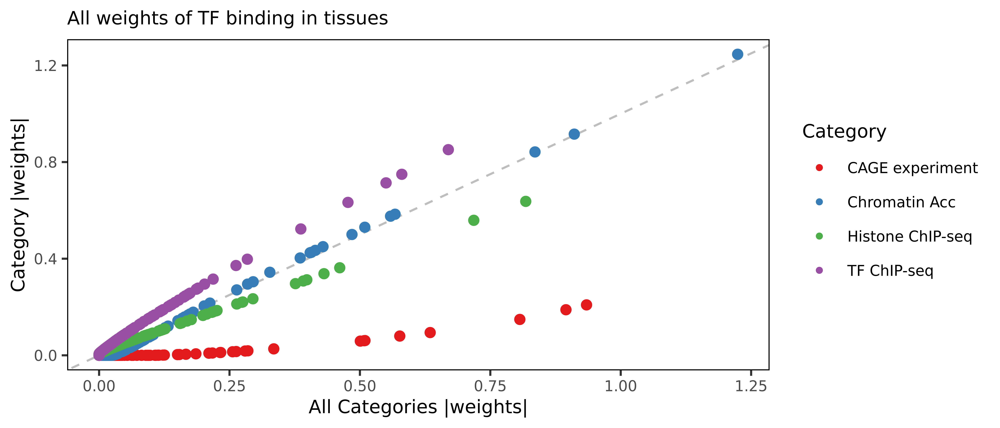
ggsave(glue::glue('{figures_directory}/qqplot_all_weights.png'), qqplot_all_weights, width = 4000, height = 3000, dpi = 800, units = 'px')For AR_Prostate
ar_weights <- weights %>% tibble::column_to_rownames('feature') %>% dplyr::select(AR_Prostate) %>% as.matrix() %>% abs() %>% as.data.frame() %>% tibble::rownames_to_column('feature')dt_ar_weights <- dplyr::inner_join(dt_mapping, ar_weights, by = c('feature_names' = 'feature')) %>% dplyr::select(-feature_names)
# merge ATAC and dnase => Chromatin Acc.
dt_ar_qqplots <- dt_ar_weights %>%
dplyr::mutate(assay = case_when(
assay == "ATAC-seq" ~ "Chromatin Acc",
assay == "DNase-seq" ~ "Chromatin Acc",
TRUE ~ assay
))
dt_ar_qqplots[1:5, ] target assay AR_Prostate
<char> <char> <num>
1: DNase-seq Chromatin Acc 0.5842966
2: DNase-seq Chromatin Acc 0.0000000
3: DNase-seq Chromatin Acc 0.0000000
4: DNase-seq Chromatin Acc 0.8918966
5: DNase-seq Chromatin Acc 0.1411272# feautures
categories <- dt_ar_qqplots$assay |> unique()
categories <- categories[!categories == ""]
qqdt <- list()
for(category in categories){
ydt <- dt_ar_qqplots %>%
dplyr::filter(assay == category) %>%
dplyr::select(AR_Prostate) %>%
as.matrix()
xdt <- dt_ar_qqplots %>%
dplyr::select(AR_Prostate) %>%
as.matrix()
qq <- qqplot(xdt, ydt, plot.it = F)
qqdt[[category]] <- data.frame(x = qq$x, y = qq$y, category = category)
}
qqdt <- do.call(rbind, qqdt)# legend.title = element_text(size = 3),
# legend.text = element_text(size = 3),
qqplot_ar_prostate_weights <- ggplot(qqdt, aes(x = x, y = y, color = category)) +
geom_abline(intercept = 0, slope = 1 , color = "grey", linewidth = 0.5, lty = "dashed") +
geom_point(size = 2) +
labs(x = "All Categories |weights|", y = "Category |weights|", subtitle = "Weights of AR binding \nin prostate tissues") +
theme_simple +
ggplot2::guides(col = guide_legend(title = 'Category', override.aes = list(size = 1), byrow = FALSE)) +
scale_color_brewer(palette = "Set1")
qqplot_ar_prostate_weights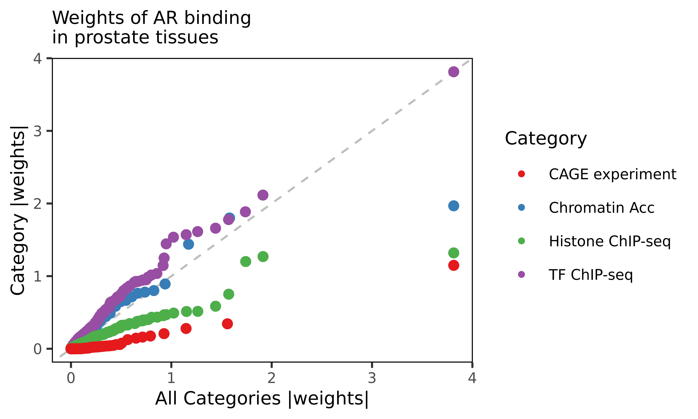
ggsave(glue::glue('{figures_directory}/qqplot_ar_prostate_weights.png'), qqplot_ar_prostate_weights, width = 4000, height = 3000, dpi = 800, units = 'px')# qqplots_weights <- patchwork::wrap_plots(qqplot_ar_prostate_weights, qqplot_all_weights) + plot_layout(axes = 'collect', guides = "collect")# ggsave('/beagle3/haky/users/temi/projects/Enpact/figures/qqplot_weights.png', qqplots_weights, width = 8000, height = 3000, dpi = 800, units = 'px')FIGURE_2$qqplot_ar_prostate_weights <- qqplot_ar_prostate_weightsFor other TFs
list_of_tfs <- c('FOXA1_Lung', 'HOXB13_Colon', 'GATA2_Blood', 'GATA3_Brain', 'CTCF_Kidney', 'REST_Liver')
# qqdt_list <- list()
qqplots_many <- purrr::map(list_of_tfs, function(tf){
tf_weights <- weights %>%
tibble::column_to_rownames('feature') %>%
dplyr::select(all_of(tf)) %>% as.matrix() %>% abs() %>% as.data.frame() %>% tibble::rownames_to_column('feature')
dt_tf_weights <- dplyr::inner_join(dt_mapping, tf_weights, by = c('feature_names' = 'feature')) %>%
dplyr::select(-feature_names)
# merge ATAC and dnase => Chromatin Acc.
dt_tf_qqplots <- dt_tf_weights %>%
dplyr::mutate(assay = case_when(
assay == "ATAC-seq" ~ "Chromatin Acc",
assay == "DNase-seq" ~ "Chromatin Acc",
TRUE ~ assay
))
# feautures
categories <- dt_tf_qqplots$assay |> unique()
categories <- categories[!categories == ""]
qqdt <- list()
for(category in categories){
ydt <- dt_tf_qqplots %>%
dplyr::filter(assay == category) %>%
dplyr::select(all_of(tf)) %>%
as.matrix()
xdt <- dt_tf_qqplots %>%
dplyr::select(all_of(tf)) %>%
as.matrix()
qq <- qqplot(xdt, ydt, plot.it = F)
qqdt[[category]] <- data.frame(x = qq$x, y = qq$y, category = category)
}
qqdt <- do.call(rbind, qqdt)
# qqdt_list[[tf]] <<- dt_tf_weights
qqplot_tf_prostate_weights <- ggplot(qqdt, aes(x = x, y = y, color = category)) +
geom_abline(intercept = 0, slope = 1 , color = "grey", linewidth = 0.5, lty = "dashed") +
geom_point(size = 2) +
labs(x = "All Categories |weights|", y = "Category |weights|", subtitle = glue::glue("{tf}")) +
theme_simple +
ggplot2::guides(col = guide_legend(title = 'Category', override.aes = list(size = 1), byrow = FALSE)) +
scale_color_brewer(palette = "Set1")
qqplot_tf_prostate_weights
})qqplot_other_examples <- patchwork::wrap_plots(qqplots_many, ncol = 3, axes = 'collect') + plot_layout(guides = "collect")
qqplot_other_examples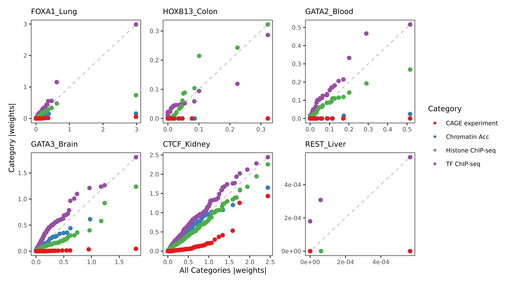
ggsave(glue::glue('{figures_directory}/SF1.qqplot_other_examples.png'), qqplot_other_examples, width = 8000, height = 5000, dpi = 800, units = 'px')# qqplots_weights <- patchwork::wrap_plots(qqplot_ar_prostate_weights, qqplot_all_weights) + plot_layout(axes = 'collect', guides = "collect")# ggsave('/beagle3/haky/users/temi/projects/Enpact/figures/qqplot_weights.png', qqplots_weights, width = 8000, height = 3000, dpi = 800, units = 'px')# how many bonferonni significant
test_performance %>%
dplyr::filter(auroc >= 0.7) %>%
dplyr::mutate(bf_signif = ttest_pvalue < (0.05/length(test_performance$ttest_pvalue))) %>%
dplyr::pull(bf_signif) %>%
table() %>% prop.table().
FALSE TRUE
0.01428571 0.98571429 SUPPLEMENTARY FIGURES
Distribution of Chip experiments per Tf/tissue pair
How many have chip experiments <= 2?
sum(test_performance$num_training_files <= 2)/nrow(test_performance)[1] 0.66How many unique TFs and tissues from Enformer vs Cistrome
enformers_tfs <- dt_merged %>% dplyr::filter(assay == "TF ChIP-seq") %>% dplyr::pull(target) %>% unique()
enformers_tfs <- gsub(".*-", '', enformers_tfs) %>% unique()
length(enformers_tfs)[1] 741# enformers_tfs[enformers_tfs %in% c("200)", "EZH2phosphoT487")
# dt_merged %>% dplyr::filter(assay == "TF ChIP-seq") %>% dplyr::pull(organ_slims) %>% unique() %>% length()cistrome_db <- data.table::fread(glue::glue('{metadata_directory}/human_factor_full_QC.txt')) %>%
dplyr::filter(!Tissue_type %in% weird_tissues)
cistrome_db %>% dplyr::pull("Factor") %>% unique() %>% length()[1] 1357cistrome_db %>% dplyr::pull("Tissue_type") %>% unique() %>% length()[1] 83cistrome_db %>% dplyr::filter(Factor %in% enformers_tfs) %>% pull(Factor) %>% unique() %>% length()[1] 582Number of training bound sites vs number of experiments
ccor <- cor.test(train_performance$num_training_files, train_performance$num_1, method = 'spearman')Warning in cor.test.default(train_performance$num_training_files,
train_performance$num_1, : Cannot compute exact p-value with tieslabelling <- glue("p = {formatC(ccor$p.value,format = 'e', digits = 2)}\nCorrelation = {round(ccor$estimate, 3)}")
num_training_files_num_bound <- train_performance %>%
ggplot() +
geom_point(aes(x = num_training_files, y = num_1)) +
labs(x = 'Number of TF ChIP-seq Experiments', y= 'Number of Bound Motifs') +
theme_simple +
geom_text(label = labelling, x = 150, y = 10000, color = "darkgreen", size = 2)
ggsave(glue("{figures_directory}/SF1.num_training_vs_num_bound.png"), num_training_files_num_bound, width = 3000, height = 3000, dpi = 800, units = 'px')
num_training_files_num_bound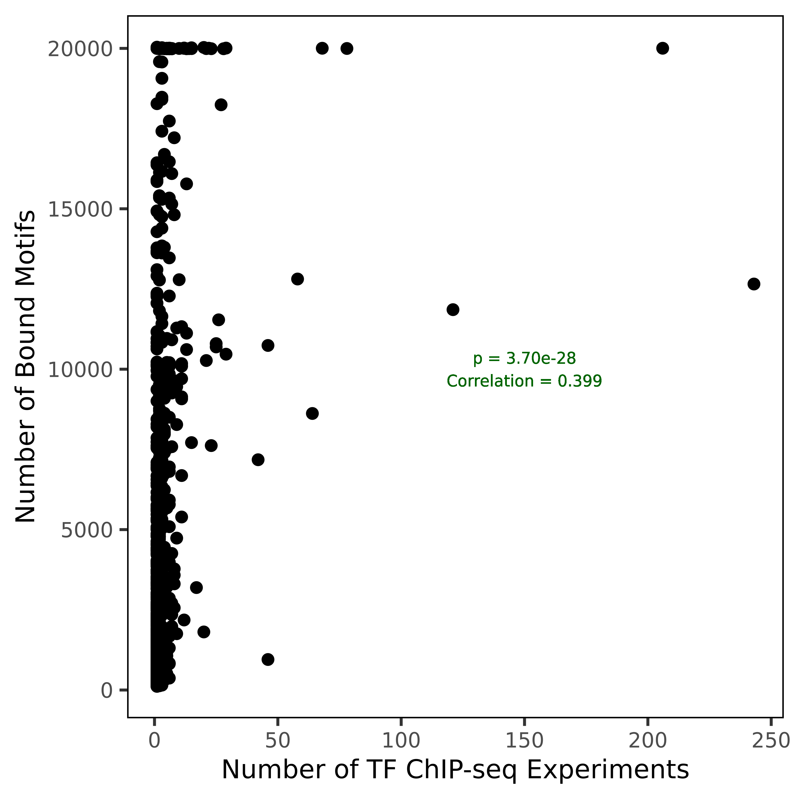
Number of bound vs AUPRC (test)
auprc.nobs <- data.table::fread(file.path(tfxcan_project_directory, 'experiments/auprc/auprc_and_number_of_bound.AR_Prostate.tsv'))
auprc_num_bound <- auprc.nobs %>%
dplyr::mutate(num_bound = factor(num_bound)) %>%
ggplot(aes(x = num_bound, y = auprc)) +
geom_col(col = 'black') +
geom_point(aes(y = auprc), color = "black", size = 3) +
geom_line(aes(y = auprc, group = 1), col = 'grey') +
geom_errorbar(aes(ymin = low, ymax = high), width = 0.2) +
theme_simple +
labs(x = 'Number of ChIP-Seq Peaks used for Training', y = 'AUPRC (test)') +
geom_text(aes(label = round(auprc, 2)), vjust = -1.8, size = 3, col = 'red')
ggsave(glue("{figures_directory}/SF1.test_auprc_vs_num_bound.png"), auprc_num_bound, width = 5000, height = 4000, dpi = 800, units = 'px')
auprc_num_bound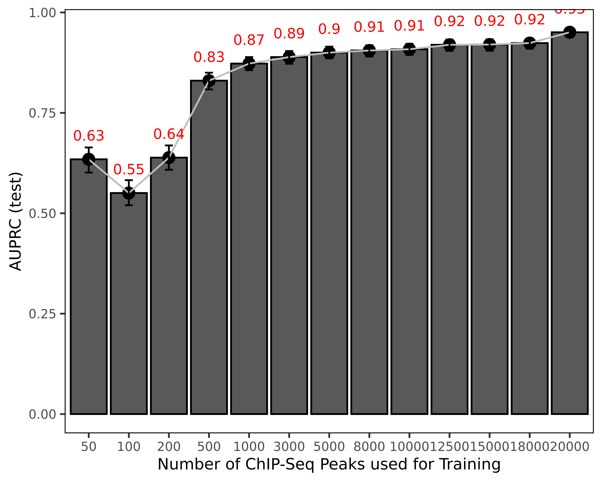
Transcription factor distribution
tf_tissue_pairs_distribution <- test_performance %>%
dplyr::select(assay, context) %>%
dplyr::filter(!context %in% weird_tissues) %>%
dplyr::group_by(context) %>%
dplyr::tally() %>%
dplyr::arrange(desc(n))
# %>%
# ggplot(aes(x = reorder(context, -n), y = n, label = n)) +
# geom_col(fill = 'skyblue', col = 'black') +
# theme_simple +
# theme(axis.text.x = element_text(angle = 45, hjust = 1)) +
# labs(x = 'Tissue', y = 'Number of Transcription Factors') +
# geom_text(size = 3, vjust=-0.2)
# ggsave(file.path(glue::glue("{figures_directory}/SF1.tf_tissue_distribution.png")), pioneer_weights_plot, width = 4000, height = 4000, units = 'px', dpi = 800)# SUPPLEMENTARY_FIGURE_1$C <- tf_tissue_pairs_distribution# incremental_test_performance %>%
# ggplot(.) + aes(x=model, y=probability) +
# geom_violin(trim=FALSE, linewidth=0.09, position=position_dodge(0.75), aes(fill=binding_class)) +
# geom_boxplot(width=0.1, alpha=0.7, outlier.shape=NA, position=position_dodge(0.75), aes(fill=binding_class)) +
# scale_fill_manual(values = c("#DAE8FC", "#E1D5E7")) +
# labs(title='', y='Enpact Score', x='', fill = 'Binding') +
# scale_x_discrete(labels=labeller) +
# scale_y_continuous(expand = expansion(mult = c(0, 0.1))) +
# theme_simple +
# theme(legend.position =c(0.1,0.9),
# axis.text.x=element_blank(),
# axis.ticks.x = element_blank()) +
# theme() +
# ggpubr::stat_pvalue_manual(
# sub.ttest_dt, label = "p",
# tip.length = 0, label.size = 2.5)
# boxplot_ar_prostate_performancePerformance of AR Model on individuals by sample: use correlation
I now test the correlation of these with the AR model trained on 206 AR ChIP-Seq experiments
ar_prostate_corr <- data.table::fread('/project2/haky/temi/projects/Enpact-figures/data/AR_Prostate.correlation_observed.txt.gz') %>%
dplyr::pull(r)
max_r <- max(abs(ar_prostate_corr))
mean_r <- mean(abs(ar_prostate_corr))
median_r <- median(abs(ar_prostate_corr))cortest_df <- data.table::fread('/project2/haky/temi/projects/Enpact-figures/data/incremental50_AR_Prostate.correlation_observed.txt.gz') %>%
dplyr::mutate(nExp = as.numeric(gsub('AR|_Prostate', '', model)))
cortest_df[1:5, ]; dim(cortest_df) locus r pvalue comparison
<char> <num> <num> <char>
1: chr10_100185843_100186293 -0.08005232 0.3835055 predicted:observed
2: chr10_100267443_100267993 0.07561803 0.4105119 predicted:observed
3: chr10_100364693_100365293 -0.09358411 0.3079338 predicted:observed
4: chr10_100442443_100443093 -0.13586035 0.1375429 predicted:observed
5: chr10_100925493_100926193 0.03461322 0.7068083 predicted:observed
model nExp
<char> <num>
1: AR1_Prostate 1
2: AR1_Prostate 1
3: AR1_Prostate 1
4: AR1_Prostate 1
5: AR1_Prostate 1[1] 932550 6mean_abscor <- cortest_df %>%
dplyr::filter(is.infinite(r) == F) %>%
dplyr::group_by(model) %>%
dplyr::summarize(mean_abs_correlation = mean(abs(r)), n = n(), max_correlation = max(abs(r))) %>%
dplyr::arrange(desc(mean_abs_correlation)) %>%
dplyr::arrange(match(model, gtools::mixedsort(model))) %>%
dplyr::mutate(nExp = as.numeric(gsub('AR|_Prostate', '', model)))
mean_abscor# A tibble: 50 × 5
model mean_abs_correlation n max_correlation nExp
<chr> <dbl> <int> <dbl> <dbl>
1 AR1_Prostate 0.0858 18651 0.565 1
2 AR2_Prostate 0.0857 18651 0.564 2
3 AR3_Prostate 0.0858 18651 0.566 3
4 AR4_Prostate 0.0858 18651 0.566 4
5 AR5_Prostate 0.0857 18651 0.568 5
6 AR6_Prostate 0.0857 18651 0.568 6
7 AR7_Prostate 0.0857 18651 0.569 7
8 AR8_Prostate 0.0856 18651 0.568 8
9 AR9_Prostate 0.0857 18651 0.568 9
10 AR10_Prostate 0.0856 18651 0.570 10
# ℹ 40 more rows# point plots of correlation
incremental_samples_performance_dotplot <- mean_abscor %>%
ggplot(.) + aes(x = nExp, y = max_correlation) +
geom_line() +
geom_point() +
labs(y = 'Maximum |Pearson\'s r|', x = 'Number of AR ChIP-Seq experiments from CistromeDB') + theme_simple +
scale_x_continuous(breaks=seq(1, 50, 1), expand = c(0,0.5)) +
geom_hline(yintercept = max_r, col = 'grey', lty = 'dashed')
incremental_samples_performance_dotplot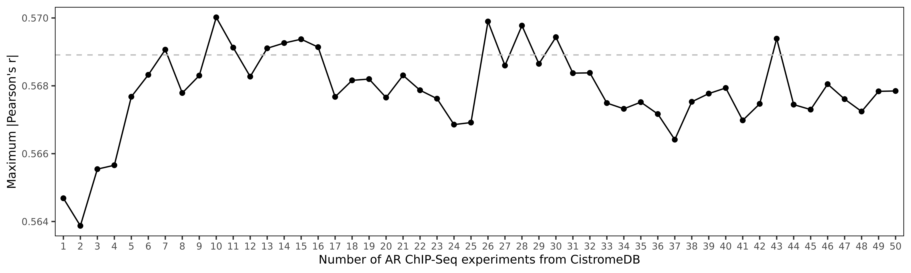
# use a violin plot instead
# bad idea : too many points and differences are very subtle you cannot see them
# cortest_df %>%
# dplyr::mutate(nExp = factor(nExp)) %>%
# ggplot(.) + aes(x = nExp, y = abs(r)) +
# geom_violin(trim=FALSE) +
# geom_boxplot(width=0.1, alpha=0.7, outlier.shape=NA) +
# geom_jitter(width=0.2, size=0.5, alpha = 0.2) +
# labs(y = '|Pearson\'s r|', x = 'Number of AR ChIP-Seq experiments from CistromeDB') + theme_simple +
# scale_x_continuous(breaks=seq(1, 50, 1)) +
# geom_hline(yintercept = max_r, col = 'grey', lty = 'dashed')# FIGURE_2$incremental_samples_performance_dotplot <- incremental_samples_performance_dotplot# SUPPLEMENTARY FIGURE
# point plots of correlation
incremental_samples_performance_dotplot <- mean_abscor %>%
ggplot(.) + aes(x = nExp, y = mean_abs_correlation) +
geom_line() +
geom_point() +
labs(y = 'Mean |Pearson\'s r|', x = 'Number of AR ChIP-Seq experiments from CistromeDB') + theme_simple +
scale_x_continuous(breaks=seq(1, 50, 1)) +
geom_hline(yintercept = mean_r, col = 'grey', lty = 'dashed')
incremental_samples_performance_dotplot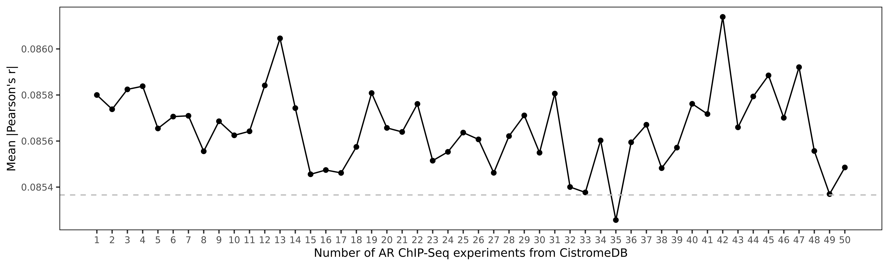
auroc vs number of training data (all models)
# number of training and test sets
ntraining_data <- test_performance %>%
dplyr::select(auroc, num_training_files) %>%
dplyr::filter(!is.na(num_training_files))
whichmore <- ntraining_data %>%
dplyr::group_by(num_training_files) %>%
dplyr::tally() %>%
dplyr::filter(n > 1)
ntraining_data <- ntraining_data %>%
dplyr::filter(num_training_files %in% whichmore$num_training_files)# boxplot per number of training files
boxplot_training_data <- ntraining_data %>%
dplyr::mutate(num_training_files = as.factor(num_training_files)) %>%
ggplot(aes(x = num_training_files, y = auroc, group = num_training_files)) +
geom_boxplot(outlier.shape = NA) +
geom_jitter(width=0.2, size=0.5, alpha = 0.2) +
theme_minimal() +
labs(y = 'AUROC', x = 'Number of Training Experiments from CistromeDB') + theme_simple
boxplot_training_data
# SUPPLEMENTARY_FIGURE_1$A <- boxplot_training_data#FIGURE_2$boxplot_training_data <- boxplot_training_dataPerformance (t-test) of specific models
# models_dir <- '/beagle3/haky/users/temi/projects/Enpact-figures/models'
# updated_data_dir <- '/beagle3/haky/users/temi/projects/Enpact-figures/newdata'focus_tfs <- c('FOXA1', 'AR', 'HOXB13', 'GATA2')
tissue <- 'Prostate'
four_performance <- performance %>%
dplyr::filter(assay %in% focus_tfs, context == tissue, type == 'test') %>%
dplyr::select(assay, context, auroc) # dplyr::select(assay, context, auroc, low, upp)
four_performance <- four_performance %>%
dplyr::mutate(model = paste0(assay, '_', context)) %>%
dplyr::mutate(model = factor(model, levels=rev(model))) %>%
dplyr::rename(auroc=auroc) %>%
dplyr::arrange(desc(model))
four_performanceIndex: <type>
assay context auroc model
<char> <char> <num> <fctr>
1: AR Prostate 0.95 AR_Prostate
2: FOXA1 Prostate 0.97 FOXA1_Prostate
3: GATA2 Prostate 0.93 GATA2_Prostate
4: HOXB13 Prostate 0.92 HOXB13_Prostatetfs_tissues <- as.character(four_performance$model)
tfs_tissues[1] "AR_Prostate" "FOXA1_Prostate" "GATA2_Prostate" "HOXB13_Prostate"rundate <- '2025-04-24'
predictions <- lapply(tfs_tissues, function(each_tft){
one_ex <- glue('/beagle3/haky/users/temi/projects/TFXcan/data/enpact/evaluations/{each_tft}_{rundate}.logistic.test_eval.txt.gz') #|> Sys.glob()
if(file.exists(one_ex)){
dt <- data.table::fread(one_ex)
return(dt)
} else {
return(NULL)
}
})
predictions <- Filter(Negate(is.null), predictions)
names(predictions) <- tfs_tissues
# sort by auroc
predictions <- predictions[tfs_tissues]# t-test
tstatistic <- vector(mode = 'numeric', length = length(predictions))
tpvalue <- vector(mode = 'numeric', length = length(predictions))
for(i in seq_along(predictions)){
ttest_result <- with(predictions[[i]], t.test(TFPred_score ~ binding_class, alternative = 'less'))
tstatistic[i] <- ttest_result$statistic
tpvalue[i] <- ttest_result$p.value
}eval_dt <- lapply(seq_along(predictions), function(i){
predictions[[i]]$model <- names(predictions)[i]
return(predictions[[i]])
}) %>%
do.call('rbind', .)eval_dt <- eval_dt %>%
dplyr::mutate(binding_class = factor(binding_class), model=factor(model, levels = tfs_tissues))
# ttest
ttest_dt <- eval_dt %>%
dplyr::group_by(model) %>%
rstatix::t_test(TFPred_score ~ binding_class) %>%
rstatix::add_significance("p") %>%
dplyr::mutate(p = ifelse(
p < 1.e-2,
sprintf("p = %2.1e", as.numeric(p)),
sprintf("p = %5.4f", as.numeric(p))))
ttest_dt <- ttest_dt %>%
rstatix::add_xy_position(x = "model", dodge = 0.8)
ttest_dt# A tibble: 4 × 15
model .y. group1 group2 n1 n2 statistic df p p.signif
<fct> <chr> <chr> <chr> <int> <int> <dbl> <dbl> <chr> <chr>
1 AR_Prostate TFPr… 0 1 998 1001 -45.7 1377. p = … ****
2 FOXA1_Prostate TFPr… 0 1 980 1002 -52.7 1462. p = … ****
3 GATA2_Prostate TFPr… 0 1 577 578 -27.1 788. p = … ****
4 HOXB13_Prostate TFPr… 0 1 968 1001 -41.1 1650. p = … ****
# ℹ 5 more variables: y.position <dbl>, groups <named list>, x <dbl>,
# xmin <dbl>, xmax <dbl># for AR_Prostate alone
labeller <- unique(eval_dt$model) %>% gsub('_', ' ', .)
names(labeller) <- unique(eval_dt$model)
# modify the y.position on the probability scale
sub.ttest_dt <- subset(ttest_dt, model == "AR_Prostate") %>%
dplyr::mutate(y.position = 1.2)
boxplot_ar_prostate_performance <- eval_dt %>%
dplyr::filter(model == 'AR_Prostate') %>%
ggplot(.) + aes(x=model, y=probability) +
geom_violin(trim=FALSE, linewidth=0.09, position=position_dodge(0.75), aes(fill=binding_class)) +
geom_boxplot(width=0.1, alpha=0.7, outlier.shape=NA, position=position_dodge(0.75), aes(fill=binding_class)) +
scale_fill_manual(values = c("#DAE8FC", "#E1D5E7")) +
labs(title='', y='Probability', x='', fill = 'Binding') +
scale_x_discrete(labels=labeller) +
scale_y_continuous(expand = expansion(mult = c(0, 0.1))) +
theme_simple +
theme(legend.position =c(0.1,0.9),
axis.text.x=element_blank(),
axis.ticks.x = element_blank()) +
theme() +
ggpubr::stat_pvalue_manual(
sub.ttest_dt, label = "p",
tip.length = 0, label.size = 2.5)Warning: A numeric `legend.position` argument in `theme()` was deprecated in ggplot2
3.5.0.
ℹ Please use the `legend.position.inside` argument of `theme()` instead.boxplot_ar_prostate_performanceWarning: Removed 1 row containing non-finite outside the scale range
(`stat_ydensity()`).Warning: Removed 1 row containing non-finite outside the scale range
(`stat_boxplot()`).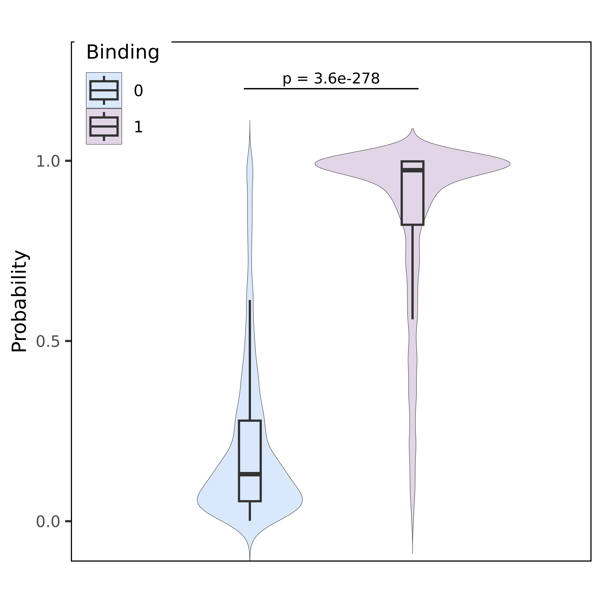
#FIGURE_2$boxplot_ar_prostate_performance <- boxplot_ar_prostate_performanceSupplementary: Performance of other models
ttest_others <- eval_dt %>%
dplyr::filter(model != 'AR_Prostate') %>%
dplyr::group_by(model) %>%
rstatix::t_test(TFPred_score ~ binding_class) %>%
rstatix::add_significance("p") %>%
dplyr::mutate(p = ifelse(
p < 1.e-2,
sprintf("p = %2.1e", as.numeric(p)),
sprintf("p = %5.4f", as.numeric(p))))
ttest_others <- ttest_others %>%
rstatix::add_xy_position(x = "model", dodge = 0.8)
ttest_others# A tibble: 3 × 15
model .y. group1 group2 n1 n2 statistic df p p.signif
<fct> <chr> <chr> <chr> <int> <int> <dbl> <dbl> <chr> <chr>
1 FOXA1_Prostate TFPr… 0 1 980 1002 -52.7 1462. p = … ****
2 GATA2_Prostate TFPr… 0 1 577 578 -27.1 788. p = … ****
3 HOXB13_Prostate TFPr… 0 1 968 1001 -41.1 1650. p = … ****
# ℹ 5 more variables: y.position <dbl>, groups <named list>, x <dbl>,
# xmin <dbl>, xmax <dbl># colors from: https://emilhvitfeldt.github.io/r-color-palettes/discrete/ggsci/legacy_tron/
# trim=F, adjust = 2, alpha=0.01, linewidth=0.09
labeller <- unique(eval_dt$model) %>% gsub('_', ' ', .)
names(labeller) <- unique(eval_dt$model)
labeller <- labeller[!labeller == 'AR Prostate']
ttest_others <- ttest_others %>% dplyr::mutate(y.position = 1.2)
auroc_others <- eval_dt %>%
dplyr::filter(model != 'AR_Prostate') %>%
ggplot(.) + aes(x=model, y=probability) +
geom_violin(trim=F, linewidth=0.09, position=position_dodge(0.75), aes(fill=binding_class)) +
geom_boxplot(width=0.1, alpha=0.7, outlier.shape=NA, position=position_dodge(0.75), aes(fill=binding_class)) +
theme_bw() +
scale_fill_manual(values = c("#DAE8FC", "#E1D5E7")) +
labs(title='', y='Probability', x='', fill = 'Binding') +
scale_x_discrete(labels=labeller) +
scale_y_continuous(expand = expansion(mult = c(0, 0.1))) +
theme_simple +
ggpubr::stat_pvalue_manual(
ttest_others, label = "p",
tip.length = 0, label.size = 2.5)
# auroc_others# colors from: https://emilhvitfeldt.github.io/r-color-palettes/discrete/ggsci/legacy_tron/
# trim=F, adjust = 2, alpha=0.01, linewidth=0.09
# c("#D0DFE6FF", "#95CC5EFF")
ttest_dt <- ttest_dt %>%
dplyr::mutate(y.position = 1.1)
labeller <- unique(eval_dt$model) %>% gsub('_', ' ', .)
names(labeller) <- unique(eval_dt$model)
ep <- eval_dt %>%
ggplot(.) + aes(x=model, y=probability) +
geom_violin(trim=F, linewidth=0.09, position=position_dodge(0.75), aes(fill=binding_class)) +
geom_boxplot(width=0.1, alpha=0.7, outlier.shape=NA, position=position_dodge(0.75), aes(fill=binding_class)) +
theme_bw() +
scale_fill_manual(values = c("#DAE8FC", "#E1D5E7")) +
labs(title='', y='Probability', x='', fill = 'Binding') +
scale_x_discrete(labels=labeller) +
scale_y_continuous(expand = expansion(mult = c(0, 0.1))) +
theme(text=element_text(size=9.33, colour = 'black', family = 'Helvetica'),
axis.text = element_text(hjust = 1, colour = 'black'),
axis.text.x = element_text(hjust=0.5, colour = 'black'),
legend.box.background = element_rect(colour = "black"),
legend.position = 'top',
legend.text = element_text(size=9.33)) +
ggpubr::stat_pvalue_manual(
ttest_dt, label = "p",
tip.length = 0, label.size = 2.5)
epWarning: Removed 51 rows containing non-finite outside the scale range
(`stat_ydensity()`).Warning: Removed 51 rows containing non-finite outside the scale range
(`stat_boxplot()`).
# auroc of test performance in a column ploty
# not needed, too bigRelative contribution of epigenetic features to weights
# ar_prostate_weights <- weights %>% dplyr::select(feature, AR_Prostate) %>%
# tibble::column_to_rownames('feature') %>% as.matrix() %>% abs() %>% rowMeans() %>% as.data.frame() %>% tibble::rownames_to_column('feature') %>% setNames(c('feature', 'AR_Prostate'))
# prostate_features <- dplyr::inner_join(dt_merged, ar_prostate_weights, by = c("feature_names" = "feature"))
# non_prostate_features <- dplyr::inner_join(dt_merged, ar_prostate_weights, by = c("feature_names" = "feature"))Pioneer vs non pioneer Transcription factors
dt_pioneer <- data.table::fread(glue::glue('{metadata_directory}/pioneer-tfs.tsv'))
dt_pioneer |> head() known predicted
<char> <char>
1: FOXA1 ATF4
2: FOXA2 BACH1
3: FOXA3 BCL6
4: GATA1 CEBPA
5: GATA2 CEBPB
6: GATA3 CEBPDSUPPLEMENTARY_TABLES[[length(SUPPLEMENTARY_TABLES) + 1]] <- dt_pioneer[,1] %>% rename(pioneer_tf = known)#Check how many known or predicted pioneer factors are in the weights.
# (dt_pioneer$known %in% dt_merged$target) %>% table()
# (dt_pioneer$predicted %in% dt_merged$target) %>% table()
# perhaps better to use the combination
pioneer_list <- c(dt_pioneer$known) |> unique()
pioneer_list <- pioneer_list[pioneer_list != ""]weights_pioneer <- dt_merged %>%
dplyr::filter(target %in% pioneer_list)
mat_pioneer <- weights %>%
dplyr::filter(feature %in% weights_pioneer$feature_names) %>%
dplyr::select(-feature) %>%
as.matrix()
dim(mat_pioneer)[1] 112 700weights_non_pioneer <- dt_merged %>%
dplyr::filter(!target %in% pioneer_list)
mat_non_pioneer <- weights %>%
dplyr::filter(feature %in% weights_non_pioneer$feature_names) %>%
dplyr::select(-feature) %>%
as.matrix()
dim(mat_non_pioneer)[1] 5201 700ggplot_qqplot <- function(x, y){
qqdata <- qqplot(y = y, x = x, plot.it = F)
ggplot2::ggplot() +
geom_point(aes(x = qqdata$x, y = qqdata$y))
}# pioneer_weights_plot <- ~{
# qqplot(y = abs(mat_pioneer), x = abs(mat_non_pioneer), xlab = 'Non-Pioneer TFs Features |weights|', ylab = 'Pioneer TFs Features |weights|')
# abline(0, 1, col = 'grey', lty = 'dashed')
# mtext('Pioneer vs non-pioneer TFs', adj = 0)
# }
pioneer_weights_plot <- ggplot_qqplot(abs(mat_non_pioneer), abs(mat_pioneer)) +
geom_abline(intercept = 0, slope = 1 , color = "grey", linewidth = 0.5, lty = "dashed") +
labs(x = "Non-Pioneer TFs Features |weights|", y = "Pioneer TFs Features |weights|", subtitle = "Pioneer vs non-pioneer TFs") +
theme_simple
# pw_plot <- patchwork::wrap_plots(pioneer_weights_plot), nrow = 1)ggsave(file.path(glue::glue("{figures_directory}/SF1.pioneer_tfs_weight_plot.png")), pioneer_weights_plot, width = 3000, height = 3000, units = 'px', dpi = 800)# png(filename='/beagle3/haky/users/temi/projects/Enpact/figures/suppl.figure1C.png', width = 6000, height = 6000, units = "px", res = 800)
# qqplot(y = abs(mat_pioneer), x = abs(mat_non_pioneer), xlab = 'Non-Pioneer TFs Features |weights|', ylab = 'Pioneer TFs Features |weights|')
# abline(0, 1, col = 'grey', lty = 'dashed')
# dev.off()Feature enrichment for prostate tissues
# prostate gland
# c('blood, bodily fluid', 'bodily fluid, blood')
prostate_features <- dt_merged %>% dplyr::filter(organ_slims %in% c('prostate gland')) %>% dplyr::pull(feature_names)
non_prostate_features <- dt_merged %>% dplyr::filter(!organ_slims %in% c('prostate gland')) %>% dplyr::pull(feature_names)prostate_weights <- weights %>% dplyr::select(feature, ends_with('_Prostate')) %>% dplyr::filter(feature %in% prostate_features) %>% dplyr::select(-feature) %>% as.matrix() %>% abs()
non_prostate_weights <- weights %>% dplyr::select(feature, ends_with('_Prostate')) %>% dplyr::filter(feature %in% non_prostate_features) %>% dplyr::select(-feature) %>% as.matrix() %>% abs()dim(prostate_weights); dim(non_prostate_weights)[1] 56 25[1] 5257 25# qqplot(abs(prostate_weights), abs(non_prostate_weights), ylab = 'Non-Prostate Features', xlab = 'Prostate Features')
# abline(0, 1, col = 'grey', lty = 'dashed')Feature enrichment for blood tissues
# prostate gland
# c('blood, bodily fluid', 'bodily fluid, blood')
blood_features <- dt_merged %>% dplyr::filter(organ_slims %in% c('blood, bodily fluid', 'bodily fluid, blood')) %>% dplyr::pull(feature_names)
non_blood_features <- dt_merged %>% dplyr::filter(!organ_slims %in% c('blood, bodily fluid', 'bodily fluid, blood')) %>% dplyr::pull(feature_names)blood_weights <- weights %>% dplyr::select(feature, ends_with('_Blood')) %>% dplyr::filter(feature %in% blood_features) %>% dplyr::select(-feature) %>% as.matrix() %>% abs()
non_blood_weights <- weights %>% dplyr::select(feature, ends_with('_Blood')) %>% dplyr::filter(feature %in% non_blood_features) %>% dplyr::select(-feature) %>% as.matrix() %>% abs()dim(blood_weights); dim(non_blood_weights)[1] 1099 76[1] 4214 76# qqplot(abs(blood_weights), abs(non_blood_weights), ylab = 'Non-Blood Features', xlab = 'Blood Features')
# abline(0, 1, col = 'grey', lty = 'dashed')Feature enrichment for kidney tissues
# prostate gland
# c('blood, bodily fluid', 'bodily fluid, blood')
kidney_features <- dt_merged %>% dplyr::filter(organ_slims %in% c('kidney, endocrine gland', 'kidney')) %>% dplyr::pull(feature_names)
non_kidney_features <- dt_merged %>% dplyr::filter(!organ_slims %in% c('kidney, endocrine gland', 'kidney')) %>% dplyr::pull(feature_names)kidney_weights <- weights %>% dplyr::select(feature, ends_with('_Kidney')) %>% dplyr::filter(feature %in% kidney_features) %>% dplyr::select(-feature) %>% as.matrix() %>% abs()
non_kidney_weights <- weights %>% dplyr::select(feature, !ends_with('_Kidney')) %>% dplyr::filter(feature %in% non_kidney_features) %>% dplyr::select(-feature) %>% as.matrix() %>% abs()dim(kidney_weights); dim(non_kidney_weights)[1] 349 9[1] 4964 691# qqplot(abs(kidney_weights), abs(non_kidney_weights), ylab = 'Non-Kidney Features', xlab = 'Kidney Features')
# abline(0, 1, col = 'grey', lty = 'dashed')Feature enrichment for lung tissues
# prostate gland
# c('blood, bodily fluid', 'bodily fluid, blood')
lung_features <- dt_merged %>% dplyr::filter(organ_slims %in% c('lung, connective tissue', 'lung, embryo', 'lung, bronchus', 'lung')) %>% dplyr::pull(feature_names)
non_lung_features <- dt_merged %>% dplyr::filter(!organ_slims %in% c('lung, connective tissue', 'lung, embryo', 'lung, bronchus', 'lung')) %>% dplyr::pull(feature_names)lung_weights <- weights %>% dplyr::select(feature, ends_with('_Lung')) %>% dplyr::filter(feature %in% lung_features) %>% dplyr::select(-feature) %>% as.matrix() %>% abs()
non_lung_weights <- weights %>% dplyr::select(feature, !ends_with('_Lung')) %>% dplyr::filter(feature %in% non_lung_features) %>% dplyr::select(-feature) %>% as.matrix() %>% abs()dim(lung_weights); dim(non_lung_weights)[1] 258 42[1] 5055 658# qqp_data <- qqplot(y = lung_weights, x = non_lung_weights, xlab = '', ylab = '')lung_enrichment <- ggplot_qqplot(x = non_lung_weights, y = lung_weights) +
labs(x = 'Non-Lung Features |weights|', y = 'Lung Features |weights|', title = "Lung features vs non-lung features") +
geom_abline(intercept = 0, slope = 1, color = 'grey', linetype = "dashed") +
theme_simple +
theme(plot.title = element_text(hjust = 0))
prostate_enrichment <- ggplot_qqplot(x = non_prostate_weights, y = prostate_weights) +
labs(x = 'Non-Prostate Features |weights|', y = 'Prostate Features |weights|', title = "Prostate features vs non-prostate features") +
geom_abline(intercept = 0, slope = 1, color = 'grey', linetype = "dashed") +
theme_simple +
theme(plot.title = element_text(hjust = 0))
kidney_enrichment <- ggplot_qqplot(x = non_kidney_weights, y = kidney_weights) +
labs(x = 'Non-Kidney Features |weights|', y = 'Kidney Features |weights|', title = "Kidney features vs non-kidney features") +
geom_abline(intercept = 0, slope = 1, color = 'grey', linetype = "dashed") +
theme_simple +
theme(plot.title = element_text(hjust = 0))
blood_enrichment <- ggplot_qqplot(x = non_blood_weights, y = blood_weights) +
labs(x = 'Non-Blood Features |weights|', y = 'Blood Features |weights|', title = "Blood features vs non-blood features") +
geom_abline(intercept = 0, slope = 1, color = 'grey', linetype = "dashed") +
theme_simple +
theme(plot.title = element_text(hjust = 0))
tissue_enrichment_plot <- patchwork::wrap_plots(list(lung_enrichment, blood_enrichment, prostate_enrichment, kidney_enrichment), ncol = 2, nrow = 2)
tissue_enrichment_plot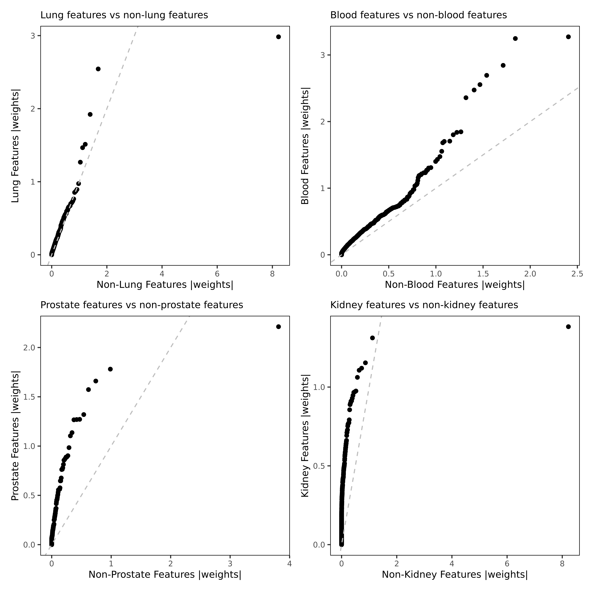
ggsave(file.path(glue::glue("{figures_directory}/SF1.tissue_enrichment_plot.png")), tissue_enrichment_plot, width = 5000, height = 5000, units = 'px', dpi = 800)Create and save Figure 2
Copy or duplicate the list
figure_2 <- rlang::duplicate(FIGURE_2)names(figure_2)[1] "auroc_histogram" "auprc_histogram"
[3] "qqplot_performance_pvalues" "qqplot_ar_prostate_weights"f2 <- patchwork::wrap_plots(figure_2, nrow=2) +
patchwork::plot_layout(design = "AB
CD") +
patchwork::plot_annotation(tag_levels = list(c("A", "B", "C", "D"))) &
theme(plot.tag = element_text(family = 'Helvetica', size = 9.33))
f2Warning: Removed 2 rows containing missing values or values outside the scale range
(`geom_bar()`).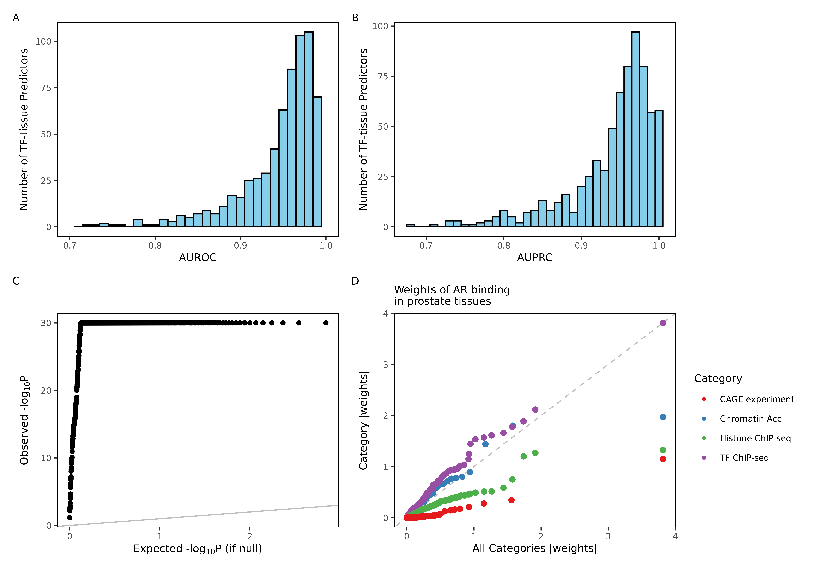
ggsave(file.path(glue::glue("{figures_directory}/figure2.png")), f2, width = 6000, height = 5000, units = 'px', dpi = 800)Warning: Removed 2 rows containing missing values or values outside the scale range
(`geom_bar()`).FIGURE 3: AR/Prostate predicts well across individuals
The analysis notebook is here:
FIGURE_3 <- list()
# SUPPLEMENTARY_FIGURE_2 <- list()Performance of AR Enpact model across individuals
- data: enpact and cwas scores, and observed peak intensities for CWAS AR loci
cwas_mat <- data.table::fread(file.path('/beagle3/haky/users/temi/projects/Enpact/data/baca_cwas/output/top1.hg38', 'baca_cwas_predict.txt')) %>%
dplyr::select(-FID) %>%
tibble::column_to_rownames('IID') %>% as.matrix() %>% t()
cwas_mat[1:5, 1:5] DFCI_1239 DFCI_1592 DFCI_1636 DFCI_1730 DFCI_1798
chr10_234960_235410 -5.4420948 -6.761699 2.4530553 -6.9206430 -6.92064300
chr10_408160_408660 6.2891417 1.890695 6.2891417 0.4594216 3.41984624
chr10_546760_547360 -1.0370226 9.777503 -0.8890399 -1.2050379 -0.57907245
chr10_572410_573060 -0.6399757 2.244947 -0.7365884 -1.1482362 -0.09658851
chr10_853110_853510 -2.6064215 -18.732818 -34.1832351 -17.0916176 -2.94441131# these files were formatted in a separated notebook
#/beagle3/haky/users/temi/projects/Enpact/data/lenpact
# gt_mat <- data.table::fread(file.path(data_dir, 'baca.observed_binding.txt.gz')) %>% tibble::column_to_rownames('V1') %>% as.matrix()
# # cwas_mat <- data.table::fread(file.path(data_dir, 'baca.cwas_scores.txt.gz')) %>% tibble::column_to_rownames('V1') %>% as.matrix()
# enpact_mat <- data.table::fread(file.path('/beagle3/haky/users/temi/projects/Enpact/data/lenpact', 'Baca.AR_Prostate.enpact_scores.txt')) %>% tibble::column_to_rownames('NAME') %>% as.matrix()#read in the matrix of enpact scores
enpact_mat <- data.table::fread(file.path(tfxcan_project_directory, 'data/cwas/observed', 'baca.enpact_scores.AR_Prostate.txt.gz')) %>%
tibble::column_to_rownames("V1") %>%
as.matrix()
gt_mat_binarized <- data.table::fread(file.path(tfxcan_project_directory, 'data/cwas/observed', 'baca.observed_binding.binarized.txt.gz')) %>%
tibble::column_to_rownames("V1") %>%
as.matrix()
gt_mat <- data.table::fread(file.path(tfxcan_project_directory, 'data/cwas/observed', 'baca.observed_binding.txt.gz')) %>%
tibble::column_to_rownames("V1") %>%
as.matrix()
cwas_mat <- data.table::fread(file.path(tfxcan_project_directory, 'data/cwas/observed', 'baca.cwas_scores.AR_Prostate.txt.gz')) %>%
tibble::column_to_rownames("V1") %>%
as.matrix()- another way is to binarize the binding: if there is a peak > 1, else, 0
- then you run a t-test
# gt_mat_binarized <- gt_mat[,]
# gt_mat_binarized[gt_mat_binarized > 0] <- 1
# gt_mat_binarized[is.na(gt_mat_binarized)] <- 0enpact_mat[1:2, 1:2]; cwas_mat[1:2, 1:2]; gt_mat_binarized[1:2, 1:2] DF_AR_1239_T DF_AR_1592_T
chr1_203434572_203435022 5.797028 5.785721
chr9_25678252_25678702 -5.559246 -5.338356 DF_AR_1239_T DF_AR_1592_T
chr10_234960_235410 -5.442095 -6.761699
chr10_408160_408660 6.289142 1.890695 UW_AR_PDX_136 UW_AR_PDX_141
chr10_100185843_100186293 0 0
chr10_100267443_100267993 0 0Correlation of Enpact, CWAS and observed binding
dt_enpact_observed.cor <- data.table::fread(file.path(tfxcan_project_directory, 'data/cwas/observed', 'baca.enpact_observed_correlation.txt.gz')) %>% dplyr::filter(!is.na(spearman_pvalue)) %>%
dplyr::rename(pval = spearman_pvalue, corr = spearman_r)
dt_cwas_observed.cor <- data.table::fread(file.path(tfxcan_project_directory, 'data/cwas/observed', 'baca.cwas_observed_correlation.txt.gz')) %>% dplyr::filter(!is.na(spearman_pvalue)) %>%
dplyr::rename(pval = spearman_pvalue, corr = spearman_r)
dim(dt_enpact_observed.cor); dim(dt_cwas_observed.cor)[1] 18651 4[1] 18637 4# inner join
dt_cor.merged <- dplyr::inner_join(dt_enpact_observed.cor, dt_cwas_observed.cor, by = 'locus', suffix = c('.enpact', '.cwas'))
dt_cor.merged |> head() ; dim(dt_cor.merged) locus pval.enpact corr.enpact comparison.enpact
<char> <num> <num> <char>
1: chr1_203434572_203435022 0.06265946 -0.169767923 enpact:observed
2: chr9_25678252_25678702 0.08012025 0.159724796 enpact:observed
3: chr3_48301160_48301760 0.91679406 -0.009596936 enpact:observed
4: chr6_136726712_136727412 0.10766390 0.146983147 enpact:observed
5: chr20_52724411_52725111 0.59494369 0.048812914 enpact:observed
6: chr6_60869853_60871353 0.60042092 0.048089359 enpact:observed
pval.cwas corr.cwas comparison.cwas
<num> <num> <char>
1: 0.00408903 -0.259232457 cwas:observed
2: 0.02100298 0.209650689 cwas:observed
3: 0.68584864 -0.037145159 cwas:observed
4: 0.93235145 0.007797799 cwas:observed
5: 0.43587704 0.071485360 cwas:observed
6: 0.62914253 0.044341763 cwas:observed[1] 18634 7Enpact vs observed binding
qqplot_enpact_obs_pvalues <- qqunif.ggplot(dt_enpact_observed.cor$pval) +
geom_point() +
geom_abline(intercept = 0, slope = 1, color = 'grey', linetype = "dashed") +
labs(x = expression("Expected -log"[10]*"P"), y = expression("Observed -log"[10]*"P"), subtitle = 'Enpact-predicted \nvs. Observed Binding') +
theme_simple
ggsave(file.path(figures_directory, "enpact_obs.spearman_pval.qqplot.png"), qqplot_enpact_obs_pvalues, width = 3000, height = 3000, units = 'px', dpi = 800)
qqplot_enpact_obs_pvalues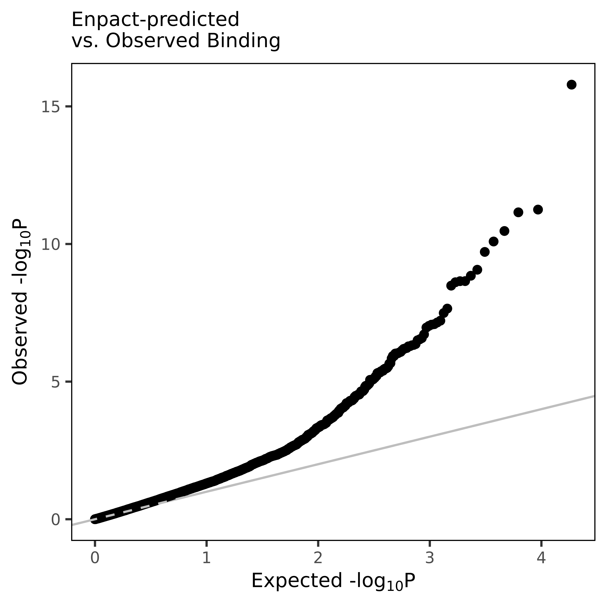
CWAS vs observed binding
qqplot_cwas_obs_pvalues <- qqunif.ggplot(dt_cwas_observed.cor$pval) +
geom_point() +
geom_abline(intercept = 0, slope = 1, color = 'grey', linetype = "dashed") +
labs(x = expression("Expected -log"[10]*"P"), y = expression("Observed -log"[10]*"P"), subtitle = 'CWAS-predicted \nvs. Observed Binding') +
theme_simple
ggsave(file.path(figures_directory, "SF2.cwas_obs.spearman_pval.qqplot.png"), qqplot_cwas_obs_pvalues, width = 3000, height = 3000, units = 'px', dpi = 800)
qqplot_cwas_obs_pvalues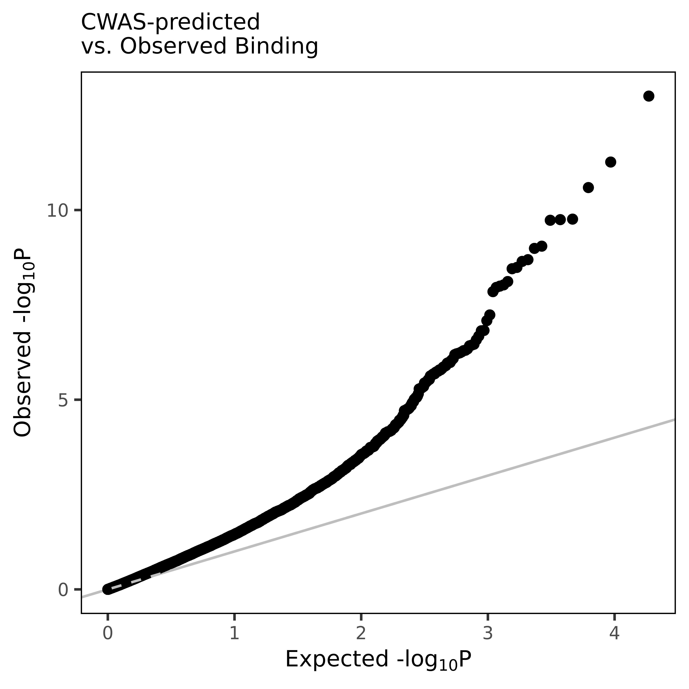
Enpact, CWAS, vs observed binding
# pp <- qqcompare.ggplot(dt_cor.merged$pval.enpact, dt_cor.merged$pval.cwas, names =c ('enpact', 'cwas')) +
# theme_simple +
# theme(legend.title=element_blank())
# compare with a qqplot
qqdata_OBS <- with(dt_cor.merged, qqplot(x = -log10(pval.cwas), y = -log10(pval.enpact), plot = F))
ggplot_enpact_cwas_obs_pvalues <- ggplot() +
geom_point(aes(x = qqdata_OBS$x, y = qqdata_OBS$y)) +
geom_abline(intercept = 0, slope = 1, color = 'grey', linetype = "dashed") +
theme_simple +
labs(x = expression("-log"[10]*"P (CWAS vs. Observed)"), y = expression("-log"[10]*"P (Enpact vs. Observed)"), subtitle = "Enpact or CWAS vs.\nObserved Binding")
ggsave(file.path(figures_directory, "enpact_cwas_obs.neglog10.spearman_pval.png"), ggplot_enpact_cwas_obs_pvalues, width = 3000, height = 3000, units = 'px', dpi = 800)
ggplot_enpact_cwas_obs_pvalues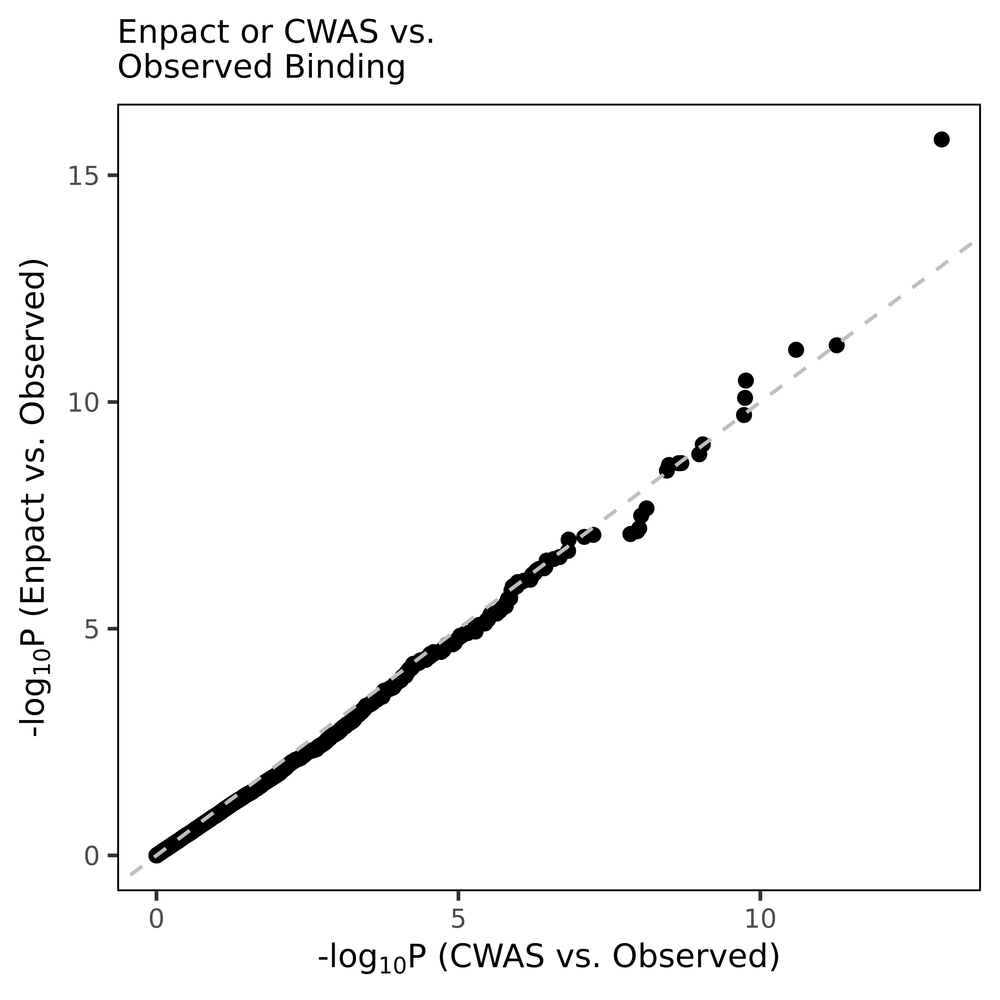
# pp <- dt_cor.merged %>%
# ggplot(aes(x = corr.cwas, y = corr.enpact)) +
# geom_point(col = 'black', size = 0.5) +
# theme_simple +
# theme(legend.title=element_blank()) +
# labs(x = 'Correlation (CWAS)', y = 'Correlation (Enpact)') +
# geom_abline(slope = 1, intercept = 0, col = 'grey', linetype = 'dashed')
# ggsave(file.path(figures_directory, "enpact_cwas_obs.spearman_corr.scatterplot.png"), pp, width = 3000, height = 3000, units = 'px', dpi = 800)ggplot_enpact_cwas_corr <- ggplot(dt_cor.merged) +
geom_density(aes(x = corr.enpact, fill = 'Enpact'), alpha = 0.5, col = 'black') +
geom_density(aes(x = corr.cwas, fill = 'CWAS'), alpha = 0.5, col = 'black') +
theme_simple +
scale_fill_manual(name = '', values = c('Enpact' = 'blue', 'CWAS' = 'red')) +
labs(x = 'Correlation', y = 'Density', subtitle = "Enpact or CWAS vs.\nObserved Binding") +
theme(legend.position = "inside",
legend.position.inside = c(0.8, 0.8),
legend.background = element_rect(fill = 'transparent'),
legend.text = element_text(size = 5),
legend.key = element_rect(fill = "transparent", colour = NA))
ggsave(file.path(figures_directory, "enpact_cwas_obs.spearman_corr.density.png"), ggplot_enpact_cwas_corr, width = 3000, height = 3000, units = 'px', dpi = 800)
ggplot_enpact_cwas_corr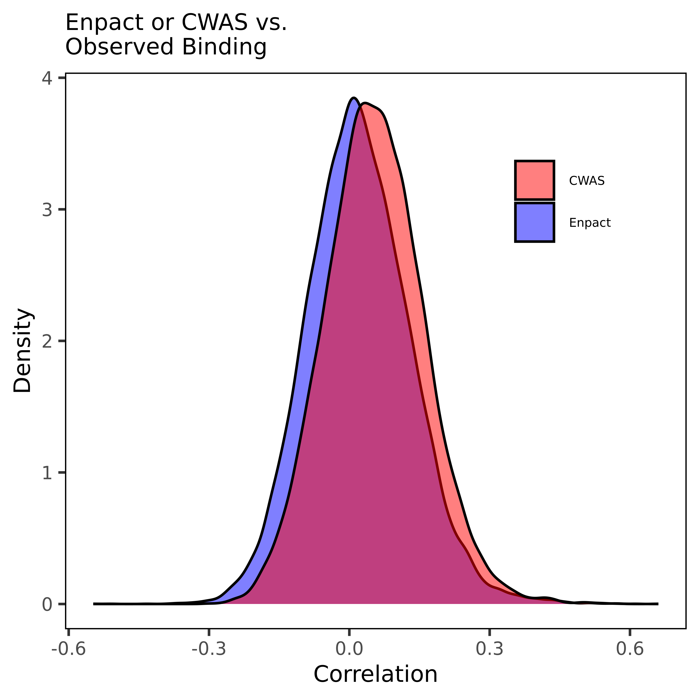
with(dt_cor.merged, cor.test(x = corr.cwas, y = corr.enpact, method = 'spearman'))Warning in cor.test.default(x = corr.cwas, y = corr.enpact, method =
"spearman"): Cannot compute exact p-value with ties
Spearman's rank correlation rho
data: corr.cwas and corr.enpact
S = 8.5213e+11, p-value < 2.2e-16
alternative hypothesis: true rho is not equal to 0
sample estimates:
rho
0.2097924 table(dt_cor.merged$pval.enpact <= 0.05) %>% prop.table()
FALSE TRUE
0.8997531 0.1002469 table(dt_cor.merged$pval.cwas <= 0.05) %>% prop.table()
FALSE TRUE
0.8760331 0.1239669 dt_enpact_observed.cor$corr |> summary() Min. 1st Qu. Median Mean 3rd Qu. Max.
-0.54749 -0.05373 0.01629 0.02036 0.08987 0.66078 dt_cwas_observed.cor$corr |> summary() Min. 1st Qu. Median Mean 3rd Qu. Max.
-0.30279 -0.01647 0.05223 0.05480 0.12248 0.61098 abs(dt_cor.merged$corr.enpact) |> summary() Min. 1st Qu. Median Mean 3rd Qu. Max.
0.0000128 0.0334660 0.0723583 0.0870188 0.1242121 0.6607806 abs(dt_cor.merged$corr.cwas) |> summary() Min. 1st Qu. Median Mean 3rd Qu. Max.
0.0000203 0.0368836 0.0787139 0.0937230 0.1339423 0.6109789 # table.enpact <- table(dt_cor.merged$corr.enpact[dt_cor.merged$pval.enpact <= 0.05] >= 0)
# table.cwas <- table(dt_cor.merged$corr.cwas[dt_cor.merged$pval.cwas <= 0.05] >= 0)
# table.enpact; prop.table(table.enpact)
# table.cwas; prop.table(table.cwas)enp_obs.fdr <- dt_enpact_observed.cor %>%
dplyr::mutate(fdr = qvalue::qvalue(pval, fdr.level = 0.25)$significant)
table(enp_obs.fdr$fdr); prop.table(table(enp_obs.fdr$fdr))
FALSE TRUE
17902 749
FALSE TRUE
0.9598413 0.0401587 # how many are positively correlated
table.enpact.fdr <- table(enp_obs.fdr$corr[enp_obs.fdr$fdr == TRUE] >= 0)
table.enpact.fdr; prop.table(table.enpact.fdr)
FALSE TRUE
145 604
FALSE TRUE
0.1935915 0.8064085 cwas_obs.fdr <- dt_cwas_observed.cor %>%
dplyr::mutate(fdr = qvalue::qvalue(pval, fdr.level = 0.25)$significant)
table(cwas_obs.fdr$fdr); prop.table(table(cwas_obs.fdr$fdr))
FALSE TRUE
17049 1588
FALSE TRUE
0.91479315 0.08520685 # how many are positively correlated
table.cwas.fdr <- table(cwas_obs.fdr$corr[cwas_obs.fdr$fdr == TRUE] >= 0)
table.cwas.fdr; prop.table(table.cwas.fdr)
FALSE TRUE
76 1512
FALSE TRUE
0.04785894 0.95214106 # 1 - pbinom(13615 - 1, size = 18651, prob = 0.5, log.p = TRUE)with(dt_cor.merged,
smoothScatter(y = -log10(pval.enpact), x = -log10(pval.cwas), pch = '.', xlab = 'pval CWAS', ylab = 'pval Enpact'))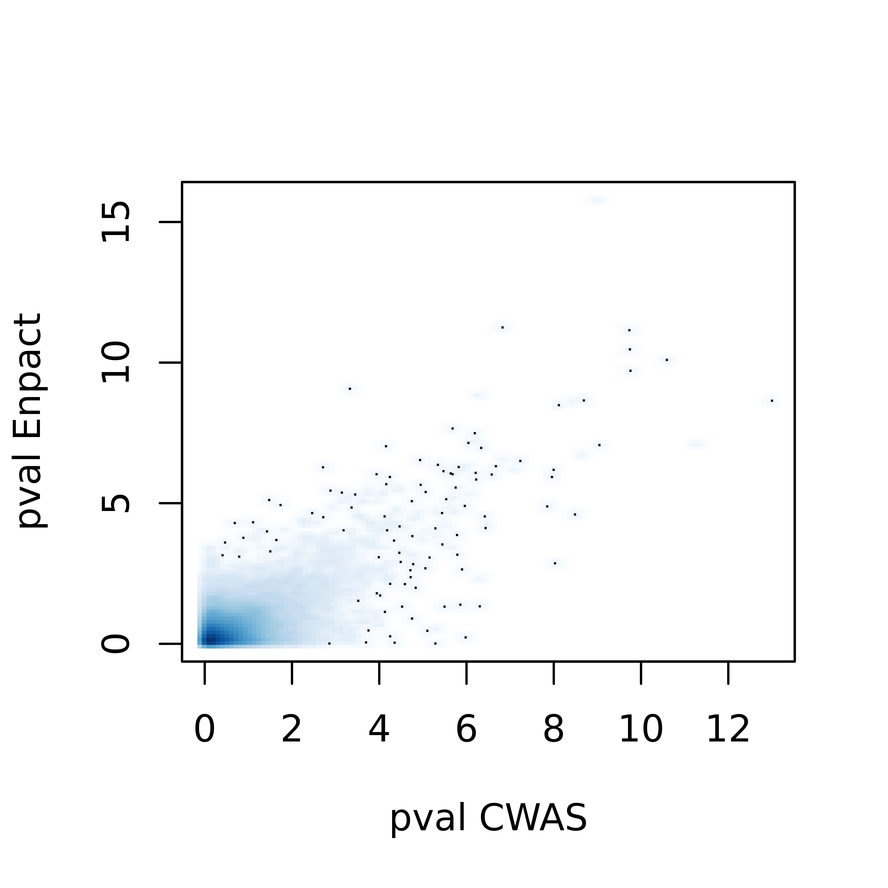
with(dt_cor.merged, cor.test(y = pval.enpact, x = pval.cwas));
Pearson's product-moment correlation
data: pval.cwas and pval.enpact
t = 41.88, df = 18632, p-value < 2.2e-16
alternative hypothesis: true correlation is not equal to 0
95 percent confidence interval:
0.2801413 0.3063876
sample estimates:
cor
0.2933197 with(dt_cor.merged, cor.test(y = corr.enpact, x = corr.cwas))
Pearson's product-moment correlation
data: corr.cwas and corr.enpact
t = 38.312, df = 18632, p-value < 2.2e-16
alternative hypothesis: true correlation is not equal to 0
95 percent confidence interval:
0.2568736 0.2834933
sample estimates:
cor
0.2702351 SUPPLEMENTARY_TABLES[[length(SUPPLEMENTARY_TABLES) + 1]] <- dt_cor.merged %>% dplyr::select(-c(comparison.enpact, comparison.cwas)) %>% dplyr::rename(arbs = locus)FIGURE_3$qqplot_enpact_obs_pvalues <- qqplot_enpact_obs_pvalues
FIGURE_3$ggplot_enpact_cwas_obs_pvalues <- ggplot_enpact_cwas_obs_pvalues
FIGURE_3$ggplot_enpact_cwas_corr <- ggplot_enpact_cwas_corrMultiple testing correction
# pdt <- dt_cor.merged %>%
# dplyr::mutate(
# enpact_signif = qvalue::qvalue(pval.enpact, fdr.level = 0.05)$significant,
# cwas_signif = qvalue::qvalue(pval.cwas, fdr.level = 0.05)$significant) %>%
# dplyr::arrange(pval.enpact)
# pdt |> head()# table(pdt$enpact_signif); table(pdt$cwas_signif)- qvalue
# If we look at Enpact results, how many of those in CWAS are likely to be true?
# if number of observation are too small, use qvalue_truncp
# 1 - with(pdt, qvalue::qvalue(pval.enpact))$pi0
# # If we look at CWAS results, how many in Enpact are likely to be true?
# 1 - with(pdt, qvalue::qvalue(pval.cwas))$pi0- are there overlaps?
# ft <- subset(pdt, enpact_signif == TRUE)
# fdr.5.enpact_pvec <- ft$pval.enpact
# names(fdr.5.enpact_pvec) <- ft$locus
# ft <- subset(pdt, cwas_signif == TRUE)
# fdr.5.cwas_pvec <- ft$pval.cwas
# names(fdr.5.cwas_pvec) <- ft$locusCorrelation of Enpact and CWAS scores (aiming at the genetic component)
Enpact vs CWAS top qtl
cor_enp_cwas <- data.table::fread(file.path(tfxcan_project_directory, 'data/cwas/observed', 'baca.enpact_cwas_correlations.txt.gz')) %>%
dplyr::rename(pvalue = spearman_pvalue, corr = spearman_r) %>%
dplyr::filter(!is.na(pvalue))
cor_null <- data.table::fread(file.path(tfxcan_project_directory, 'data/cwas/observed', 'baca.enpact_cwas.null_correlations.txt.gz')) %>%
dplyr::rename(pvalue = spearman_pvalue, corr = spearman_r) %>%
dplyr::filter(!is.na(pvalue))
dt_merged.null_obs <- dplyr::inner_join(cor_enp_cwas, cor_null, by = 'locus', suffix = c('.obs', '.null'))gencor.signif <- dt_merged.null_obs %>%
dplyr::mutate(fdr = qvalue::qvalue(pvalue.obs, fdr.level = 0.05)$significant)
table(gencor.signif$fdr) %>% prop.table()
FALSE TRUE
0.06933562 0.93066438 #dplyr::filter(pvalue.obs <= (0.05) %>% dplyr::pull(corr.obs)
table(gencor.signif$corr.obs >= 0) |> prop.table()
FALSE TRUE
0.4028121 0.5971879 1 - with(gencor.signif, qvalue::qvalue(pvalue.obs))$pi0[1] 0.8942755- qvalue
# If we look at Enpact results, how many of those in CWAS are likely to be true?
# if number of observation are too small, use qvalue_truncp
# 1 - with(gencor.signif, qvalue::qvalue(pvalue.enpact))$pi0
# # If we look at CWAS results, how many in Enpact are likely to be true?
# 1 - with(gencor.signif, qvalue::qvalue(pval.cwas))$pi0SUPPLEMENTARY_TABLES[[length(SUPPLEMENTARY_TABLES) + 1]] <- dt_merged.null_obs %>% dplyr::rename(arbs = locus) %>% dplyr::select(-comparison.null, -comparison.obs)dim(dt_merged.null_obs)[1] 18634 7# plot the histogram of r
# histogram_cor_enp_cwas <- ggplot() +
# geom_histogram(aes(cor_null$r), fill = 'grey', color="black", alpha=1) +
# geom_histogram(aes(cor_enp_cwas$r), color="black", fill="blue", alpha=0.5) +
# labs(x = "Pearson r for Enpact- vs. \nCWAS-predicted binding scores", y = "Number of ARBS", subtitle = "Enpact- vs.\nCWAS-predicted Binding") +
# theme_simple
bcol <- adjustcolor('blue', alpha.f = 0.5)
histogram_cor_enp_cwas <- ggplot(dt_merged.null_obs) +
geom_histogram(aes(corr.null, fill = 'null'), color="black") +
geom_histogram(aes(corr.obs, fill = 'observed'), color="black") +
labs(x = "Correlation (Enpact vs. CWAS)", y = "Number of ARBS", subtitle = "Enpact- vs.\nCWAS-predicted Binding") +
scale_fill_manual(name = 'Correlation', values = c("grey", bcol), labels= c('Null', 'Observed')) +
theme_simple +
guides(alpha = 'none') +
theme(legend.position = "inside",
legend.position.inside = c(0.8, 0.8),
legend.background = element_rect(fill = 'transparent'),
legend.text = element_text(size = 5),
legend.key = element_rect(fill = "transparent", colour = NA))
histogram_cor_enp_cwas`stat_bin()` using `bins = 30`. Pick better value with `binwidth`.
`stat_bin()` using `bins = 30`. Pick better value with `binwidth`.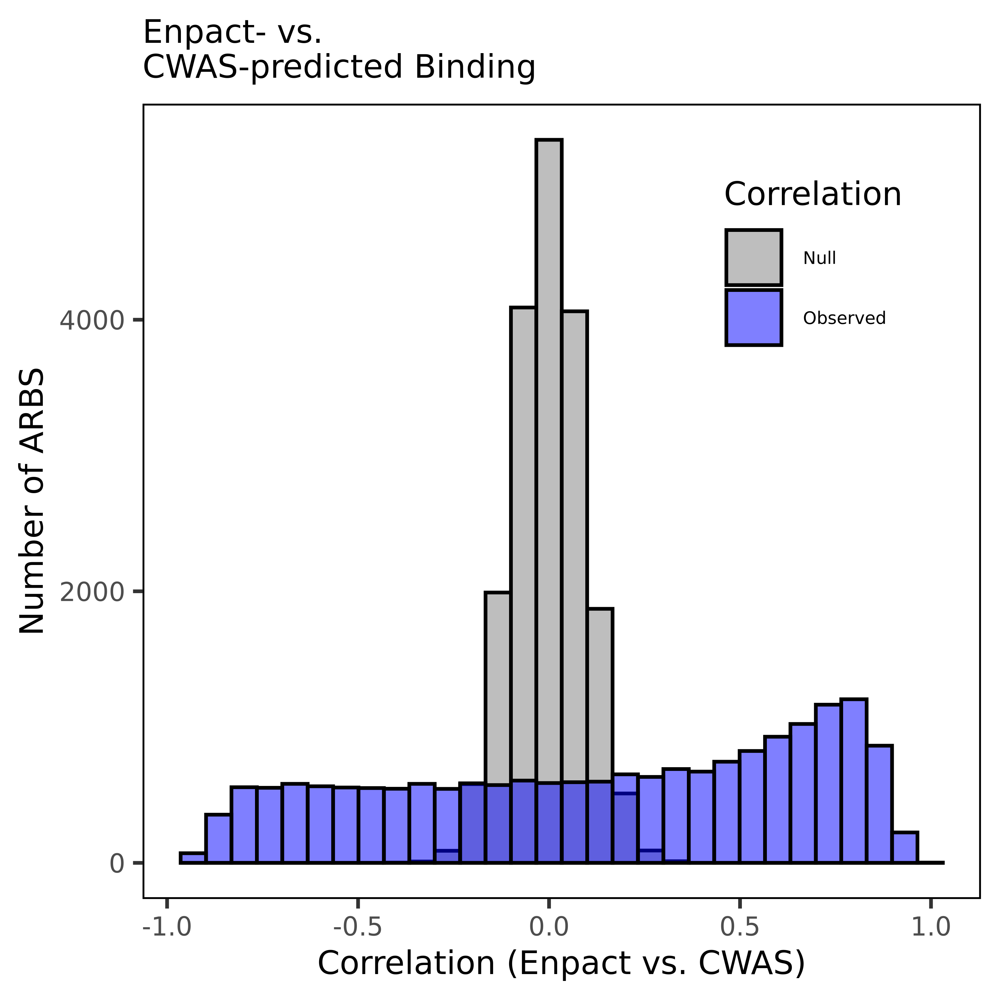
FIGURE_3$histogram_cor_enp_cwas <- histogram_cor_enp_cwasqqdata.NULL <- qqplot(x = -log10(dt_merged.null_obs$pvalue.null), y = -log10(dt_merged.null_obs$pvalue.obs), plot = FALSE)
qqplot_pvalue_enp_cwas <- ggplot() +
geom_point(aes(x = qqdata.NULL$x, y = qqdata.NULL$y)) +
theme_simple +
labs(y = expression(-log[10] * 'P (Enpact)'), x = expression(-log[10] * 'P (Null)'), subtitle = "Enpact- vs.\nCWAS-predicted Binding") +
geom_abline(intercept = 0, slope = 1, col = 'grey', linetype = 'dashed') +
theme(legend.position = "inside",
legend.position.inside = c(0.2, 0.8),
legend.background = element_rect(fill = 'transparent'),
legend.key = element_rect(fill = "transparent", colour = NA),
legend.text = element_text(size = 5))
qqplot_pvalue_enp_cwas
FIGURE_3$qqplot_pvalue_enp_cwas <- qqplot_pvalue_enp_cwasExamples (positive and negative correlations separately)
# enpact_mat <- data.table::fread(file.path(data_dir, 'baca.enpact_scores.AR_Prostate.txt.gz')) %>%
# tibble::column_to_rownames("V1") %>%
# as.matrix()
# cwas_mat <- data.table::fread(file.path(data_dir, 'baca.cwas_scores.AR_Prostate.txt.gz')) %>%
# tibble::column_to_rownames("V1") %>%
# as.matrix()gc_dt <- dt_merged.null_obs %>%
dplyr::mutate(signif = qvalue::qvalue(pvalue.obs, fdr.level=0.05)$significant)
gc_dt$signif |> table() ; gc_dt$signif |> table() %>% prop.table()
FALSE TRUE
1292 17342
FALSE TRUE
0.06933562 0.93066438 # pi1 statistic
pi1 <- 1 - qvalue::qvalue(dt_merged.null_obs$pvalue.obs, fdr.level=0.05)$pi0
pi1[1] 0.8942755# distrinution of posivite and negative correlations
(dt_merged.null_obs$corr.null >= 0) |> table() |> prop.table()
FALSE TRUE
0.5057422 0.4942578 # top 16, not 12
positives <- gc_dt %>%
dplyr::filter(signif == TRUE) %>%
dplyr::filter(corr.obs > 0) %>%
dplyr::arrange(pvalue.obs, desc(corr.obs))
negatives <- gc_dt %>%
dplyr::filter(signif == TRUE) %>%
dplyr::filter(corr.obs < 0) %>%
dplyr::arrange(pvalue.obs, desc(corr.obs))
top12_signif_positive_cor <- positives %>%
dplyr::arrange(pvalue.obs) %>%
dplyr::select(locus, corr.obs, pvalue.obs) %>%
head(n=12)
top12_signif_negative_cor <- negatives %>%
dplyr::arrange(pvalue.obs) %>%
dplyr::select(locus, corr.obs, pvalue.obs) %>%
head(n=12)Plot 12 positive correlations
top12_escore <- t(enpact_mat)[, top12_signif_positive_cor$locus] |> t() %>% as.data.frame() %>% tibble::rownames_to_column('locus') %>% tidyr::pivot_longer(cols=!locus, names_to='sample', values_to='enpact_score')
top12_cscore <- t(cwas_mat)[, top12_signif_positive_cor$locus] |> t() %>% as.data.frame() %>% tibble::rownames_to_column('locus') %>% tidyr::pivot_longer(cols=!locus, names_to='sample', values_to='cwas_score')
top12_ect <- dplyr::inner_join(top12_escore, top12_cscore, by=c('locus' = 'locus', 'sample' = 'sample')) %>%
dplyr::mutate(locus = factor(locus, levels = top12_signif_positive_cor$locus))
top12_ect[1:5, ]# A tibble: 5 × 4
locus sample enpact_score cwas_score
<fct> <chr> <dbl> <dbl>
1 chr1_199581622_199582272 DF_AR_1239_T 10.7 19.7
2 chr1_199581622_199582272 DF_AR_1592_T 8.96 4.06
3 chr1_199581622_199582272 DF_AR_1636_T 11.2 20.4
4 chr1_199581622_199582272 DF_AR_1730_T 11.4 22.1
5 chr1_199581622_199582272 DF_AR_1798_T 8.98 5.57usecorvalues <- top12_ect %>%
dplyr::group_by(locus) %>%
dplyr::summarise(cor = round(as.numeric(unname(cor.test(enpact_score, cwas_score, method = 'spearman')$estimate)), 3))Warning: There were 12 warnings in `dplyr::summarise()`.
The first warning was:
ℹ In argument: `cor = round(...)`.
ℹ In group 1: `locus = chr1_199581622_199582272`.
Caused by warning in `cor.test.default()`:
! Cannot compute exact p-value with ties
ℹ Run `dplyr::last_dplyr_warnings()` to see the 11 remaining warnings.gc_cortest <- top12_ect %>%
dplyr::group_by(locus) %>%
rstatix::cor_test(enpact_score, cwas_score, method = 'spearman') %>%
rstatix::add_significance("p") %>%
dplyr::select(-cor)
# merge
gc_cortest <- dplyr::left_join(gc_cortest, usecorvalues, by = 'locus') %>%
dplyr::mutate(p = ifelse(
p < 1.e-2,
sprintf("p = %2.1e", as.numeric(p)),
sprintf("p = %5.4f", as.numeric(p))),
cp = paste('Spearman r =', cor),
label = paste(cp, p, sep = '\n')) %>%
dplyr::arrange(desc(abs(cor)))
gc_cortest# A tibble: 12 × 10
locus var1 var2 statistic p method p.signif cor cp label
<fct> <chr> <chr> <dbl> <chr> <chr> <chr> <dbl> <chr> <chr>
1 chr1_199581622… enpa… cwas… 9231. p = … Spear… **** 0.969 Spea… "Spe…
2 chr12_30428117… enpa… cwas… 9829. p = … Spear… **** 0.967 Spea… "Spe…
3 chr11_15532204… enpa… cwas… 11889. p = … Spear… **** 0.96 Spea… "Spe…
4 chr22_42070596… enpa… cwas… 12531. p = … Spear… **** 0.958 Spea… "Spe…
5 chr6_93939982_… enpa… cwas… 12857. p = … Spear… **** 0.956 Spea… "Spe…
6 chr8_100309772… enpa… cwas… 13055. p = … Spear… **** 0.956 Spea… "Spe…
7 chr7_123768096… enpa… cwas… 13438. p = … Spear… **** 0.954 Spea… "Spe…
8 chr2_170739190… enpa… cwas… 13946. p = … Spear… **** 0.953 Spea… "Spe…
9 chr3_58135973_… enpa… cwas… 14112. p = … Spear… **** 0.952 Spea… "Spe…
10 chr10_72009492… enpa… cwas… 14249. p = … Spear… **** 0.952 Spea… "Spe…
11 chr3_128084207… enpa… cwas… 14324. p = … Spear… **** 0.951 Spea… "Spe…
12 chr3_190326861… enpa… cwas… 14559. p = … Spear… **** 0.951 Spea… "Spe…# labeller <- unique(eval_dt$model) %>% gsub('_', ' ', .)
# names(labeller) <- unique(eval_dt$model)
scatterplot_top12_enpact_cwas <- top12_ect %>%
ggplot(.) +
geom_point(aes(x=cwas_score, y=enpact_score), size=2, bg='red', pch=21, col='black') +
facet_wrap(.~locus, scales='free') +
theme_minimal() +
scale_fill_manual(values = c("#D0DFE6FF", "#95CC5EFF")) +
labs(title='', y='Enpact Score', x='CWAS Score', fill = 'Binding') +
theme_simple +
geom_text(data = gc_cortest, mapping = aes(x = -Inf, y = Inf, label = label), hjust = -0.1, vjust = 1.1, lineheight = 1, size=2.5)
scatterplot_top12_enpact_cwas
# SUPPLEMENTARY_FIGURE_2$B <- scatterplot_top12_enpact_cwas
ggsave(file.path(figures_directory, 'SF2.top12_enpact_cwas.png'), scatterplot_top12_enpact_cwas, width = 8000, height = 6000, units = 'px', dpi = 800)One example (for the main paper)
#tbest <- 'chr5_102010496_102011196' #'chr12_79863970_79864670'
tbest <- "chr10_72009492_72009942"#"chr11_15532204_15533254"
#tbest <- "chr7_73832070_73832670"
tname <- sub('_', ':', tbest) %>% sub('_', '-', .)
tt <- gc_cortest %>% dplyr::filter(locus == tbest)
pdata <- top12_ect %>%
dplyr::filter(locus == tbest) %>%
dplyr::mutate(locus = as.factor(locus), enpact_score = enpact_score) %>% dplyr::mutate(enpact_score_probs = logitsToProbabilities(enpact_score)) #%>% dplyr::summarize(cor(enpact_score, enpact_score_probs))
one_arbs.obs_corr.probs <- pdata %>%
ggplot(.) + aes(x=cwas_score, y=enpact_score_probs, group=locus) +
geom_point(size=2, bg='black', pch=21) + theme_minimal() +
labs(x='CWAS Score', y = 'Enpact Binding Score\n(Probability)', title=glue("Enpact- vs. CWAS-predicted binding \nat {tname}")) +
theme_simple +
theme(legend.position="none") +
geom_text(data=tt, mapping=aes(x = -Inf, y = Inf, label = label, col = 'red'), hjust = -0.1, vjust = 2, lineheight = 1, size = 2.5)
one_arbs.obs_corr.logits <- pdata %>%
ggplot(.) + aes(x=cwas_score, y=enpact_score, group=locus) +
geom_point(size=2, bg='black', pch=21) + theme_minimal() +
labs(x='CWAS Score', y = 'Enpact Binding Score', title=glue("Enpact- vs. CWAS-predicted binding \nat {tname}")) +
theme_simple +
theme(legend.position="none") +
geom_text(data=tt, mapping=aes(x = -Inf, y = Inf, label = label, col = 'red'), hjust = -0.1, vjust = 2, lineheight = 1, size = 2.5)
ggsave(file.path(figures_directory, 'probs.figure3F.png'), one_arbs.obs_corr.probs, width = 3000, height = 3000, units = 'px', dpi = 800)
ggsave(file.path(figures_directory, 'logits.figure3F.png'), one_arbs.obs_corr.logits, width = 3000, height = 3000, units = 'px', dpi = 800)one_arbs.obs_corr.probs
one_arbs.obs_corr.logits
FIGURE_3$pp_individual_correlation <- one_arbs.obs_corr.logitsPlot 12 negative correlations
top12_escore <- t(enpact_mat)[, top12_signif_negative_cor$locus] |> t() %>% as.data.frame() %>% tibble::rownames_to_column('locus') %>% tidyr::pivot_longer(cols=!locus, names_to='sample', values_to='enpact_score')
top12_cscore <- t(cwas_mat)[, top12_signif_negative_cor$locus] |> t() %>% as.data.frame() %>% tibble::rownames_to_column('locus') %>% tidyr::pivot_longer(cols=!locus, names_to='sample', values_to='cwas_score')
top12_ect <- dplyr::inner_join(top12_escore, top12_cscore, by=c('locus' = 'locus', 'sample' = 'sample')) %>%
dplyr::mutate(locus = factor(locus, levels = top12_signif_negative_cor$locus))
top12_ect[1:5, ]# A tibble: 5 × 4
locus sample enpact_score cwas_score
<fct> <chr> <dbl> <dbl>
1 chr2_71181220_71181870 DF_AR_1239_T 12.1 -10.4
2 chr2_71181220_71181870 DF_AR_1592_T 14.0 -43.5
3 chr2_71181220_71181870 DF_AR_1636_T 12.1 -10.4
4 chr2_71181220_71181870 DF_AR_1730_T 13.0 -25.9
5 chr2_71181220_71181870 DF_AR_1798_T 12.1 -6.44gc_cortest <- top12_ect %>%
dplyr::group_by(locus) %>%
rstatix::cor_test(enpact_score, cwas_score, method = 'pearson') %>%
rstatix::add_significance("p") %>%
dplyr::mutate(p = ifelse(
p < 1.e-2,
sprintf("p = %2.1e", as.numeric(p)),
sprintf("p = %5.4f", as.numeric(p))),
cp = paste('Pearson r =', cor),
label = paste(cp, p, sep = '\n')) %>%
dplyr::arrange(desc(abs(cor)))
gc_cortest# A tibble: 12 × 12
locus var1 var2 cor statistic p conf.low conf.high method p.signif
<fct> <chr> <chr> <dbl> <dbl> <chr> <dbl> <dbl> <chr> <chr>
1 chr2_71… enpa… cwas… -0.98 -60.0 p = … -0.989 -0.977 Pears… ****
2 chr10_9… enpa… cwas… -0.97 -45.4 p = … -0.981 -0.960 Pears… ****
3 chr1_39… enpa… cwas… -0.97 -44.2 p = … -0.980 -0.959 Pears… ****
4 chr10_3… enpa… cwas… -0.97 -40.5 p = … -0.976 -0.951 Pears… ****
5 chr7_10… enpa… cwas… -0.97 -40.9 p = … -0.976 -0.952 Pears… ****
6 chr4_14… enpa… cwas… -0.95 -32.0 p = … -0.962 -0.924 Pears… ****
7 chr1_46… enpa… cwas… -0.94 -29.0 p = … -0.955 -0.910 Pears… ****
8 chr1_11… enpa… cwas… -0.94 -31.3 p = … -0.961 -0.921 Pears… ****
9 chr1_49… enpa… cwas… -0.94 -29.6 p = … -0.957 -0.913 Pears… ****
10 chr2_54… enpa… cwas… -0.93 -27.5 p = … -0.950 -0.900 Pears… ****
11 chr1_20… enpa… cwas… -0.93 -28.1 p = … -0.952 -0.904 Pears… ****
12 chr1_10… enpa… cwas… -0.82 -15.8 p = … -0.873 -0.754 Pears… ****
# ℹ 2 more variables: cp <chr>, label <chr># labeller <- unique(eval_dt$model) %>% gsub('_', ' ', .)
# names(labeller) <- unique(eval_dt$model)
scatterplot_top12_negative_enpact_cwas <- top12_ect %>%
ggplot(.) +
geom_point(aes(x=cwas_score, y=enpact_score), size=2, bg='red', pch=21, col='black') +
facet_wrap(.~locus, scales='free') +
theme_minimal() +
scale_fill_manual(values = c("#D0DFE6FF", "#95CC5EFF")) +
labs(title='', y='Enpact Score', x='CWAS Score', fill = 'Binding') +
theme_simple +
geom_text(data = gc_cortest, mapping = aes(x = -Inf, y = Inf, label = label), hjust = -0.1, vjust = 1.1, lineheight = 1, size=2.5)
scatterplot_top12_negative_enpact_cwas
ggsave(file.path(figures_directory, 'SF2.top12_enpact_cwas.negative.png'), scatterplot_top12_negative_enpact_cwas, width = 8000, height = 6000, units = 'px', dpi = 800)figure_3 <- rlang::duplicate(FIGURE_3)
figure_3 <- lapply(figure_3, ggplotify::as.ggplot)`stat_bin()` using `bins = 30`. Pick better value with `binwidth`.
`stat_bin()` using `bins = 30`. Pick better value with `binwidth`.# rearragne
figure_3 <- figure_3[c('qqplot_enpact_obs_pvalues', 'ggplot_enpact_cwas_obs_pvalues', 'ggplot_enpact_cwas_corr', 'histogram_cor_enp_cwas', 'qqplot_pvalue_enp_cwas', 'pp_individual_correlation')]f3 <- patchwork::wrap_plots(figure_3, ncol = 3, nrow = 2) +
plot_annotation(tag_levels = list(c('A', 'B', 'C', 'D', 'E', 'F'))) & theme(plot.tag = element_text(size = 9.33, family = 'Helvetica'), plot.title = element_text(size = 9.33, family = 'Helvetica'), plot.title.position = "plot")
f3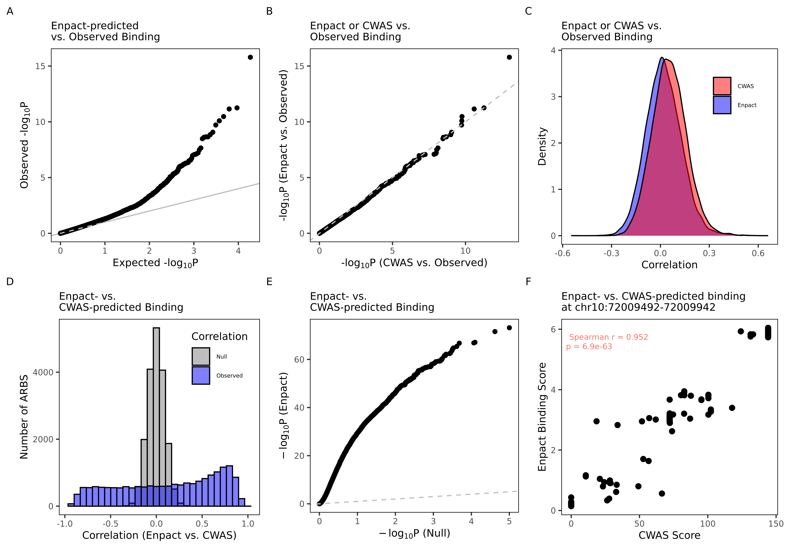
ggsave(file.path(figures_directory, "figure3.png"), f3, width = 8000, height = 5500, units = "px", dpi = 800)
# ggsave("/beagle3/haky/users/temi/projects/Enpact/figures/figure3.pdf", f3, units = "px")FIGURE 4 : Linearization
To get the data below, from the model, you can run the code below
# library(RSQLite)
# dbdb <- dbConnect(RSQLite::SQLite(), "/scratch/beagle3/temi/lEnpact/AR_Prostate.2025-10-23/AR_Prostate.EUR.CWAS_ARBS/models/filtered_db/predict_db_AR_Prostate.EUR.CWAS_ARBS_filtered.db")
# dbListTables(dbdb)
# weights <- dbGetQuery(dbdb, 'SELECT * FROM weights')
# extras <- dbGetQuery(dbdb, 'SELECT * FROM extra')
# data.table::fwrite(extras, file.path(tfxcan_project_directory, 'data/cwas_arbs_association', 'AR_Prostate.EUR.CWAS_ARBS.extras.tsv.gz'), sep = '\t', quote = F, col.names = T, row.names = F, compress = 'gzip')
# data.table::fwrite(weights, file.path(tfxcan_project_directory, 'data/cwas_arbs_association', 'AR_Prostate.EUR.CWAS_ARBS.weights.tsv.gz'), sep = '\t', quote = F, col.names = T, row.names = F, compress = 'gzip')
# dbDisconnect(dbdb)or
# library(RSQLite)
# mydb <- dbConnect(RSQLite::SQLite(), "/beagle3/haky/users/temi/projects/Enpact/models/lenpact/AR_Prostate.2025-04-28/AR_Prostate.logistic/models/filtered_db/predict_db_AR_Prostate.logistic_filtered.db")
# alldat <- lapply(setNames(nm = dbListTables(mydb)), dbReadTable, conn = mydb)
# dbDisconnect(mydb)
# # write out the model summary
# alldat$extra %>% data.table::fwrite(file.path("/beagle3/haky/users/temi/projects/Enpact/models/lenpact/AR_Prostate.2025-04-28/AR_Prostate.logistic/models/database", 'Model_summary.txt'), sep = '\t', row.names = F, col.names = T, quote = F)
# alldat$weights %>% data.table::fwrite(file.path("/beagle3/haky/users/temi/projects/Enpact/models/lenpact/AR_Prostate.2025-04-28/AR_Prostate.logistic/models/database", 'Weight_summary.txt'), sep = '\t', row.names = F, col.names = T, quote = F)FIGURE_4 <- list()Performance
# /beagle3/haky/users/temi/projects/Enpact/models/lenpact/EUR_AR_Prostate_logistic/models/database
model_summary <- data.table::fread(file.path(tfxcan_project_directory, 'data/cwas_arbs_association', 'AR_Prostate.EUR.CWAS_ARBS.extras.tsv.gz')) %>%
dplyr::rename(gene_name = genename, n_snps_in_model = n.snps.in.model, zscore_pval = cv_zscore_pval)
model_summary[1:5, 1:5]; dim(model_summary) gene gene_name gene_type alpha
<char> <char> <char> <num>
1: chr18_8391502_8392102 chr18_8391502_8392102 protein_coding 0.5
2: chr18_12407851_12408101 chr18_12407851_12408101 protein_coding 0.5
3: chr18_47932379_47932829 chr18_47932379_47932829 protein_coding 0.5
4: chr18_40108586_40109436 chr18_40108586_40109436 protein_coding 0.5
5: chr18_59549818_59550268 chr18_59549818_59550268 protein_coding 0.5
n_snps_in_window
<int>
1: 6296
2: 5979
3: 5320
4: 4846
5: 6044[1] 18612 25# model_summary <- model_summary %>%
# dplyr::mutate(
# signif = qvalue::qvalue(zscore_pval, fdr.level = 0.01)$significant,
# )
model_summary %>% dplyr::filter(abs(rho_avg) < 0.5) %>% nrow()[1] 87dim(model_summary[complete.cases(model_summary), ]) ; dim(model_summary)[1] 0 25[1] 18612 25# par(mfrow = c(1,1), xpd = F, pty='s', family = 'Helvetica', ps = 9.33, mgp = c(1.5,0.5,0))
histogram_r_genetic_component <- ggplot(model_summary, aes(rho_avg)) +
geom_histogram(color="black", fill="grey") +
labs(x = "Correlation\n(SNP-Enpact- \nvs. Enpact-predicted binding)", y = "Number of ARBS") +
theme_simple
histogram_r_genetic_component`stat_bin()` using `bins = 30`. Pick better value with `binwidth`.
FIGURE_4$histogram_r_genetic_component <- histogram_r_genetic_componentmodel_summary$rho_avg %>% summary() %>% round(., 4) %>% cbind() .
Min. 0.1113
1st Qu. 0.9418
Median 0.9789
Mean 0.9500
3rd Qu. 0.9926
Max. 0.9998#par(mar = c(5, 5, 4, 2), oma=c(4,4,2,2), mai = c(1, 0.5, 0.1, 0.1), pty = 's')
#par(mar = c(8, 1, 1, 1), pty = 's')
# par(mar = c(3, 1, 1, 1), xpd = F, pty='s', family = 'Helvetica', ps = 9.33, mgp = c(1.5,0.5,0))
# layout.matrix <- matrix(c(1:2), nrow = 1, ncol = 2, byrow=T)
# layout(mat = layout.matrix,
# heights = c(2, 2), # Heights of the two rows
# widths = c(2, 2)) # Widths of the two columns
nsnps_used <- model_summary %>%
pull(n_snps_in_model)
histogram_nsnps_used <- ggplot() +
geom_histogram(aes(nsnps_used), fill = 'grey17', color="black", alpha=1) +
theme_simple +
geom_vline(xintercept = median(nsnps_used), color = 'grey', linetype = 'dashed') +
labs(x = "Number of SNPs used in \nPrediction Database", y = "Number of ARBS")
histogram_nsnps_used`stat_bin()` using `bins = 30`. Pick better value with `binwidth`.
FIGURE_4$histogram_nsnps_used <- histogram_nsnps_usedfrac_used <- model_summary %>%
dplyr::select(gene, n_snps_in_window, n_snps_in_model) %>%
dplyr::mutate(frac_snps_used = n_snps_in_model/n_snps_in_window) %>%
pull(frac_snps_used)
histogram_fracsnps_used <- ggplot() +
geom_histogram(aes(frac_used), fill = 'grey17', color="black", alpha=1) +
theme_simple +
geom_vline(xintercept = median(frac_used), color = 'grey', linetype = 'dashed') +
labs(x = "Fraction of SNPs used in \nPrediction Database", y = "Number of ARBS")
histogram_fracsnps_used`stat_bin()` using `bins = 30`. Pick better value with `binwidth`.
ggsave(file.path(figures_directory, 'SF3.nsnps_used.AR_Prostate.png'), histogram_fracsnps_used, width = 3000, height = 3000, units = 'px', dpi = 800)`stat_bin()` using `bins = 30`. Pick better value with `binwidth`.summary_nsps_used <- summary(nsnps_used) |> round(3) |> cbind()
summary_frac_used <- summary(frac_used) |> round(3) |> cbind()
summary_frac_used; summary_nsps_used [,1]
Min. 0.001
1st Qu. 0.017
Median 0.027
Mean 0.029
3rd Qu. 0.038
Max. 0.265 [,1]
Min. 4.000
1st Qu. 92.000
Median 145.000
Mean 155.001
3rd Qu. 206.000
Max. 569.000Compare with CWAS
hg38_maps <- data.table::fread(file.path(metadata_directory, 'baca_cwas_loci_hg38.bed'))
hg38_maps <- setnames(hg38_maps, c('chr', 'start', 'end', 'hg19_locus')) %>%
tidyr::unite('hg38_locus', chr:end, sep='_')
cwas_models <- readxl::read_excel(file.path(metadata_directory, 'cwas_supplementary_tables.xlsx'), sheet = 'Table S3', skip = 1) %>%
dplyr::select(ID, CHR, P0, P1, R2=MODELCV.R2, pvalue=MODELCV.PV)Warning: Expecting numeric in J3708 / R3708C10: got 'NA'New names:
• `` -> `...6`cwas_models <- dplyr::inner_join(cwas_models, hg38_maps, by=c('ID' = 'hg19_locus')) %>%
dplyr::select(locus=hg38_locus, R2, pvalue)tfxcan_models <- model_summary %>% dplyr::select(locus = gene_name, R = rho_avg, pvalue = cv_pval_est) %>% dplyr::mutate(R2 = R) %>% dplyr::select(-R)
models_dt <- dplyr::inner_join(cwas_models, tfxcan_models, by = 'locus', suffix = c('.cwas', '.tfxcan'))# qqplot(-log10(models_dt$pvalue.cwas), -log10(models_dt$pvalue.tfxcan))
# abline(0, 1, col = 'grey', lty = 2)# par(mar = c(3, 1, 1, 1), xpd = F, pty='s', family = 'Helvetica', ps = 9.33, mgp = c(1.5,0.5,0))
# with(models_dt, smoothScatter(R2.cwas, R2.tfxcan, nrpoints = 0))
# par(mfrow = c(1,1))Distance and location of cis-QTLs
- For the next set of analysis, I will filter down to loci that I could predict well (Bonferroni < 0.05) and call them ePeaks
ePeaks <- model_summary %>%
dplyr::filter(zscore_pval < 0.01, rho_avg > 0) %>%
dplyr::select(gene_name) %>%
tidyr::separate_wider_delim('gene_name', names=c('chr', 'start', 'end'), delim='_') %>%
dplyr::mutate(across(c(start, end), as.numeric), chr=as.numeric(gsub('chr', '', chr))) %>%
tidyr::unite('locus', chr:end, sep = '_', remove = F)
ePeaks# A tibble: 18,612 × 4
locus chr start end
<chr> <dbl> <dbl> <dbl>
1 18_8391502_8392102 18 8391502 8392102
2 18_12407851_12408101 18 12407851 12408101
3 18_47932379_47932829 18 47932379 47932829
4 18_40108586_40109436 18 40108586 40109436
5 18_59549818_59550268 18 59549818 59550268
6 18_8081802_8082352 18 8081802 8082352
7 18_534050_534800 18 534050 534800
8 18_13826351_13827051 18 13826351 13827051
9 18_62425417_62426017 18 62425417 62426017
10 18_8298852_8299602 18 8298852 8299602
# ℹ 18,602 more rowsdim(ePeaks)[1] 18612 4distance_from_center <- data.table::fread(file.path('/beagle3/haky/users/temi/projects/Enpact/files', 'snp_weights_distance.txt.gz'))mm <- mean(distance_from_center$beta)
ss <- sd(distance_from_center$beta)
ww <- which(!dplyr::between(distance_from_center$beta, left=mm - (1*ss), right=mm+(1*ss)))
length(ww)[1] 97348smaller_dt <- distance_from_center[ww, ] %>% dplyr::arrange(desc(distance))
# dist_intervals <- with(smaller_dt, seq(min(distance), max(distance), by=100000))
dist_intervals <- with(smaller_dt, seq(min(distance), max(distance), length.out=6))
dist_intervals <- append(dist_intervals, 0, after = 3)
dist_intervals[1] -1000440 -600327 -200214 0 199899 600012 1000125scatterplot_weights_distance <- ggplot(smaller_dt, aes(x = distance, y = beta)) +
geom_point(pch = '.') +
labs(x = 'Distance (bp) from ARBS', y = 'Beta') +
theme_simple
scatterplot_weights_distance
FIGURE_4$scatterplot_weights_distance <- scatterplot_weights_distanceIs SNP-Enpact similar to CWAS top QTLs?
snp_enpact_predictions <- data.table::fread(file.path(tfxcan_project_directory, 'data/lenpact_scores/AR_Prostate.EUR.CWAS_ARBS/baca_predict.txt')) %>% dplyr::select(-FID)
snp_enpact_predictions[1:5, 1:5]; dim(snp_enpact_predictions)
top1_qtl_predictions <- data.table::fread(file.path(tfxcan_project_directory, 'experiments/cwas_scores/output/top1.hg38/baca_cwas_predict.txt')) %>% dplyr::select(-FID)
top1_qtl_predictions[1:5, 1:5]; dim(top1_qtl_predictions)
common_individuals <- intersect(snp_enpact_predictions$IID, top1_qtl_predictions$IID)
common_arbs <- intersect(colnames(snp_enpact_predictions)[-1], colnames(top1_qtl_predictions)[-1])
length(common_arbs); length(common_individuals)SNP-Enpact vs CWAS top 1 QTLs
# snpenpact vs cwas
result <- data.table::fread(file.path('/beagle3/haky/users/temi/projects/TFXcan/data/cwas/observed', 'baca.snpenpact_cwas_correlations.txt.gz'))
null_result <- data.table::fread(file.path('/beagle3/haky/users/temi/projects/TFXcan/data/cwas/observed', 'baca.snpenpact_cwas_correlations.null_correlations.txt.gz'))
result <- result %>% dplyr::mutate(fdr_p5 = qvalue::qvalue(p = result$pvalue, fdr.level = 0.05)$significant)dim(result)[1] 18594 5table(result$fdr_p5 == TRUE) %>% prop.table()
FALSE TRUE
0.05302786 0.94697214 plot_corr <- ggplot() +
geom_histogram(aes(x = result$r, fill = 'observed'), col = 'black', alpha = 1) +
geom_histogram(aes(x = null_result$r, fill = 'null'), col = 'black', alpha = 0.5) +
scale_fill_manual(name = '', values = c('observed'='darkgreen', 'null'='red')) +
theme_simple +
labs(x = "Correlation\n(SNP-Enpact vs. CWAS top1 QTLs)", y = "Number of ARBS") +
theme(legend.position = "top", legend.position.inside = c(0.2, 0.7), legend.key = element_rect(fill = "transparent", colour = NA))
plot_pvalue <- qqcompare.ggplot(result$pvalue, null_result$pvalue, names = c('observed', 'null')) +
theme_simple +
scale_color_manual(name = '', values = c('observed' = 'darkgreen', 'null' = 'red')) +
theme(legend.position = "top", legend.position.inside = c(0.7, 0.7), legend.key = element_rect(fill = "transparent", colour = NA))
# pp <- patchwork::wrap_plots(plot_corr, plot_pvalue, nrow = 1) +
# theme(plot.tag = element_text(family = 'Helvetica', size = 9.33))
# ggsave(file.path(figures_directory, "SF2.snpenpact_top1qtls.png"), pp, width = 5000, height = 2500, dpi = 800, units = 'px')
# ppFIGURE_4$plot_correlation <- plot_corr
FIGURE_4$plot_pvalue <- plot_pvaluesummary(result$r); summary(abs(result$r)); summary((result$r)^2); prop.table(table(abs(result$r) > 0.5)) Min. 1st Qu. Median Mean 3rd Qu. Max.
-0.9908 -0.3769 0.2519 0.1593 0.7370 0.9908 Min. 1st Qu. Median Mean 3rd Qu. Max.
0.0000577 0.3095173 0.5985603 0.5603518 0.8286067 0.9908067 Min. 1st Qu. Median Mean 3rd Qu. Max.
0.0000 0.0958 0.3583 0.4002 0.6866 0.9817
FALSE TRUE
0.4097558 0.5902442 Look at the predictors’ effect size from CWAS and SNP-Enpact
library(RSQLite)
library(DBI)
mydb <- dbConnect(RSQLite::SQLite(), file.path(tfxcan_project_directory, 'experiments/cwas_db/baca_cwas_top1.qtl.hg38.db'))
cwas.top1qtl.weights <- dbGetQuery(mydb, 'SELECT * FROM weights') %>% as.data.table()
dbDisconnect(mydb)
mydb <- dbConnect(RSQLite::SQLite(), '/scratch/beagle3/temi/lEnpact/AR_Prostate.2025-10-23/AR_Prostate.EUR.CWAS_ARBS/models/filtered_db/predict_db_AR_Prostate.EUR.CWAS_ARBS_filtered.db')
enpact.arbs.weights <- dbGetQuery(mydb, 'SELECT * FROM weights') %>% as.data.table()
dbDisconnect(mydb)
dim(cwas.top1qtl.weights); dim(enpact.arbs.weights)# I should match and inner join the weights
dt_merged <- dplyr::inner_join(cwas.top1qtl.weights, enpact.arbs.weights, by = c('gene', 'varID'), suffix = c('.cwas', '.enpact')) %>%
dplyr::mutate(direction =
dplyr::case_when(
sign(weight.cwas) == sign(weight.enpact) ~ "same",
sign(weight.cwas) != sign(weight.enpact) ~ "opposing",
TRUE ~ NA
))
dim(dt_merged)
dt_merged %>% data.table::fwrite(file.path(files_directory, 'snpEnpact-vs-cwas-top1.betas.tsv.gz'), sep = '\t', quote = F, row.names = F, col.names = T)sum(cwas.top1qtl.weights$varID %in% enpact.arbs.weights$varID)dt_merged <- data.table::fread(file.path(files_directory, 'snpEnpact-vs-cwas-top1.betas.tsv.gz'))ctest <- with(dt_merged, cor.test(weight.cwas, weight.enpact), method = 'spearman')
ctest
Pearson's product-moment correlation
data: weight.cwas and weight.enpact
t = 65.835, df = 95448, p-value < 2.2e-16
alternative hypothesis: true correlation is not equal to 0
95 percent confidence interval:
0.2023383 0.2144752
sample estimates:
cor
0.2084148 pwrite <- ifelse(ctest$p.value == 0L, "p-value < 2.2e-16", glue("p-value: {formatC(, format = 'e', digits = 2)}"))
corrlabel <- glue("Correlation: {round(ctest$estimate, 3)}\n{pwrite}")
weights_plot <- ggplot(dt_merged, aes(x = weight.cwas, y = weight.enpact)) +
geom_point(pch = '.', size = 0.5) +
theme_simple +
labs(x = expression(beta["CWAS top qtl"]), y = expression(beta[SNP-Enpact])) +
geom_vline(xintercept = 0, linetype = "dashed", color = "grey") +
geom_hline(yintercept = 0, linetype = "dashed", color = "grey") +
geom_text(label = corrlabel, col = 'darkgreen', x = -5, y = 2, size = 2.0)FIGURE_4$weights_plot <- weights_plottable(dt_merged$direction)
opposing same
41022 54428 # How many have the same direction of effect?
table(dt_merged$direction) %>% prop.table()
opposing same
0.4297748 0.5702252 length(unique(dt_merged$gene))[1] 17999figure_4 <- rlang::duplicate(FIGURE_4)f4 <- patchwork::wrap_plots(figure_4, ncol = 3) + plot_annotation(tag_levels = list(c('A', 'B', 'C', 'D', 'E', 'F'))) & theme(plot.tag = element_text(size = 9.33, family = 'Helvetica'))ggsave(file.path(figures_directory,"figure4.png"), f4, width = 6000, height = 4000, units = "px", dpi = 800)`stat_bin()` using `bins = 30`. Pick better value with `binwidth`.
`stat_bin()` using `bins = 30`. Pick better value with `binwidth`.
`stat_bin()` using `bins = 30`. Pick better value with `binwidth`.
`stat_bin()` using `bins = 30`. Pick better value with `binwidth`.# ggsave("/beagle3/haky/users/temi/projects/Enpact/figures/figure4.pdf", f4, units = "px")- how many with |effect size| > 1?
# distance_from_center %>%
# dplyr::filter(abs(beta) > 1) %>%
# dplyr::group_by(chr, start, end) %>%
# dplyr::tally() %>%
# dplyr::arrange(desc(n)) %>%
# dplyr::pull(n) %>%
# base::mean()- how many snps with 10, 20, 30 40, 50 kb… of peak center?
segmented_distances <- distance_from_center %>%
dplyr::mutate(bin = cut(abs(distance_from_center$distance), seq(0, 1000000, by = 20000), na.rm=F, labels = F)) %>%
dplyr::filter(!is.na(bin)) %>% dplyr::pull(bin) %>% table()
segmented_distances_prop <- (segmented_distances / sum(segmented_distances)) * 100 #%>% prop.table() %>% as.matrix()
#segmented_distances_prop <- segmented_distances_prop[1:10, ]
segmented_distances_prop.
1 2 3 4 5 6 7 8
17.018318 9.768671 7.742024 6.178271 4.771921 2.753694 2.122794 1.846825
9 10 11 12 13 14 15 16
1.680447 1.547192 1.473046 1.404548 1.329293 1.280336 1.252133 1.221781
17 18 19 20 21 22 23 24
1.199433 1.178056 1.144794 1.124837 1.103840 1.083364 1.087487 1.080245
25 26 27 28 29 30 31 32
1.078097 1.073281 1.071653 1.067738 1.049582 1.045182 1.036416 1.032882
33 34 35 36 37 38 39 40
1.022765 1.019889 1.016979 1.010985 1.030457 1.024047 1.021310 1.023493
41 42 43 44 45 46 47 48
1.033783 1.030734 1.021102 1.015766 1.041925 1.054918 1.081562 1.104256
49 50
1.193613 1.404236 coordinate_labels <- cut(seq(1, 1000000, by = 20000), seq(0, 1000000, by = 20000), na.rm=F, dig.lab=10)peak_center_distances_distribution <- ggplot() +
geom_bar(aes(x = coordinate_labels, y = segmented_distances_prop), stat = 'identity') +
labs(x = 'Genomic window (bp) from peak center', y = '% of SNPs used within window') +
theme_simple +
theme(axis.text.x = element_text(angle = 45, hjust = 1))ggsave(file.path(figures_directory, "SF3.peak_center_distances_distribution.png"), peak_center_distances_distribution, width = 8000, height = 3000, units = 'px', dpi = 800)Don't know how to automatically pick scale for object of type <table>.
Defaulting to continuous.dt_20kb <- distance_from_center %>% dplyr::filter(dplyr::between(distance, -20000, 20000))nrow(dt_20kb) / nrow(distance_from_center)[1] 0.1701573- how many peaks have SNPs in them
snplocation <- distance_from_center %>%
dplyr::mutate(snpInPeak = case_when(
between(pos, start, end) ~ 'snpWithin',
!between(pos, start, end) ~ 'snpOutside'
)) %>% dplyr::group_by(chr, start, end, snpInPeak) %>%
dplyr::tally() %>% dplyr::ungroup() %>%
tidyr::pivot_wider(id_cols = c(chr, start, end), names_from = snpInPeak, values_from = n, values_fill = 0) %>%
tidyr::unite('locus', chr:end, sep = '_', remove = F)
snplocation# A tibble: 18,610 × 6
locus chr start end snpOutside snpWithin
<chr> <int> <int> <int> <int> <int>
1 1_999970_1000570 1 999970 1000570 77 3
2 1_1000670_1001020 1 1000670 1001020 161 2
3 1_1074020_1074370 1 1074020 1074370 86 0
4 1_1375120_1375720 1 1375120 1375720 143 0
5 1_1407120_1407520 1 1407120 1407520 248 0
6 1_1433120_1433670 1 1433120 1433670 108 2
7 1_1615420_1615870 1 1615420 1615870 203 1
8 1_1658789_1659289 1 1658789 1659289 10 4
9 1_1724161_1724661 1 1724161 1724661 115 0
10 1_2084961_2085561 1 2084961 2085561 250 3
# ℹ 18,600 more rows# how many ARBS have at least 1 SNP in them
table(snplocation$snpWithin > 0)
FALSE TRUE
2788 15822 table(snplocation$snpWithin > 0) |> prop.table()
FALSE TRUE
0.1498119 0.8501881 max(snplocation$snpWithin)[1] 20snplocation %>% dplyr::filter(locus %in% ePeaks$locus) %>% arrange(snpOutside, snpWithin)# A tibble: 18,608 × 6
locus chr start end snpOutside snpWithin
<chr> <int> <int> <int> <int> <int>
1 10_4058558_4059358 10 4058558 4059358 4 0
2 11_121110941_121111441 11 121110941 121111441 4 1
3 16_48034889_48035589 16 48034889 48035589 5 1
4 1_145891025_145891675 1 145891025 145891675 6 2
5 6_37262374_37263174 6 37262374 37263174 7 0
6 11_76235456_76236056 11 76235456 76236056 7 0
7 17_51771490_51771990 17 51771490 51771990 7 1
8 4_77621196_77621696 4 77621196 77621696 7 2
9 7_33781738_33782338 7 33781738 33782338 8 1
10 2_86212877_86213627 2 86212877 86213627 10 2
# ℹ 18,598 more rows- how many loci don’t have a SNP within?
snplocation$snpOutside |> table() |> prop.table() |> head()
4 5 6 7 8 10
1.074691e-04 5.373455e-05 5.373455e-05 2.149382e-04 5.373455e-05 2.686728e-04
The message here:
Using SNPs, we can predict the genetic component of AR binding. Linearization works!
FIGURE 5: SNP-predictors of Enpact scores recapitulate CWAS results on Prostate cancer risk
FIGURE_5 <- list()dt_gexpr <- data.table::fread(file.path(metadata_directory, 'prostate_cancer_risk.gexpr.spredixcan.txt.gz'))
dt_tfxcan <- data.table::fread(file.path(tfxcan_project_directory, 'data/tfxcan', 'AR_Prostate.EUR.CWAS_ARBS.TFXcan.prostate_cancer_risk.csv'))
#data.table::fread('/beagle3/haky/users/temi/projects/Enpact/data/tfxcan/AR_Prostate.logistic.TFXcan.prostate_cancer_risk.csv')
cwas_74 <- data.table::fread(file.path(metadata_directory, 'CWAS_significant_prostate_cancer_risk_associations.top74.txt.gz'))
ldblocks <- data.table::fread(file.path(metadata_directory, 'hg38_fourier_ls-all.bed'), header=F, col.names=c('chrom', 'start', 'end'))SUPPLEMENTARY_TABLES[[length(SUPPLEMENTARY_TABLES) + 1]] <- dt_tfxcan %>% dplyr::rename(arbs = gene) %>% dplyr::select(-gene_name)
#SUPPLEMENTARY_TABLES[['Supplementary Table 8']] <- dt_gexpr– map the loci of the dt_cwas (74 significantly associated loci) to hg38
hg38_maps <- data.table::fread(file.path(metadata_directory, 'baca_cwas_loci_hg38.bed'))
hg38_maps <- setnames(hg38_maps, c('chr', 'start', 'end', 'hg19_locus')) %>%
tidyr::unite('hg38_locus', chr:end, sep='_')
cwas_sign_pc_assoc <- dplyr::inner_join(cwas_74, hg38_maps, by=c('ID' = 'hg19_locus')) %>%
dplyr::select(locus=hg38_locus, CWAS.Z, CWAS.P)
# cwas_pc_assoc <- dplyr::inner_join(cwas_5580, hg38_maps, by=c('ID' = 'hg19_locus')) %>%
# dplyr::select(locus=hg38_locus, CWAS.Z=TWAS.Z, CWAS.P=TWAS.P)# dt_tfxcan$pvalue |> hist()#. how many ARBS did we test?
dim(dt_tfxcan)[1] 18612 12# for controlling false positives, I use fdr at 0.01 here
alpha_threshold <- 0.05
dt_corrected <- dt_tfxcan %>%
dplyr::mutate(
fdr_p05 = qvalue::qvalue(pvalue)$qvalue <= alpha_threshold,
bonf_signif = pvalue <= (alpha_threshold/nrow(.))) #pvalue <= alpha_threshold/nrow(.))How many significant at fdr < 0.05
xfdr <- dt_corrected %>%
dplyr::filter(fdr_p05 == TRUE) %>%
dplyr::select(locus = gene_name, TFXcan.Z = zscore, TFXcan.P = pvalue)
# merge with cwas' 74 significantly associated loci
dt_xfdr <- xfdr %>%
dplyr::full_join(cwas_sign_pc_assoc, by = c('locus' = 'locus')) %>%
dplyr::filter(!is.na(CWAS.P))
# how many at fdr < 0.05
is.na(dt_xfdr$TFXcan.Z) |> table()
FALSE TRUE
57 17 is.na(dt_xfdr$TFXcan.Z) |> table() |> prop.table()
FALSE TRUE
0.7702703 0.2297297 How many significant at Bonferroni adjusted p-values?
xfdr <- dt_corrected %>%
dplyr::filter(fdr_p05 == TRUE) %>%
dplyr::select(locus = gene_name, TFXcan.Z = zscore, TFXcan.P = pvalue)
# merge with cwas' 74 significantly associated loci
dt_xfdr <- xfdr %>%
dplyr::full_join(cwas_sign_pc_assoc, by = c('locus' = 'locus')) %>%
dplyr::filter(!is.na(CWAS.P))
# how many at fdr < 0.05
is.na(dt_xfdr$TFXcan.Z) |> table()
FALSE TRUE
57 17 is.na(dt_xfdr$TFXcan.Z) |> table() |> prop.table()
FALSE TRUE
0.7702703 0.2297297 tfxcan_sign_pc_assoc <- dt_corrected %>%
dplyr::filter(bonf_signif == TRUE) %>%
dplyr::select(locus = gene_name, TFXcan.Z = zscore, TFXcan.P = pvalue)
# merge with cwas' 74 significantly associated loci
dt_compare <- tfxcan_sign_pc_assoc %>%
dplyr::full_join(cwas_sign_pc_assoc, by = c('locus' = 'locus'))
# how many at bonferroni < 0.05
dt_compare %>%
dplyr::filter(!is.na(CWAS.P)) locus TFXcan.Z TFXcan.P CWAS.Z CWAS.P
<char> <num> <num> <num> <num>
1: chr8_127518905_127519805 26.873993 4.423605e-159 -28.546200 3.13e-179
2: chr11_69217733_69218233 -14.762588 2.552938e-49 17.725850 2.65e-70
3: chr8_23671737_23672487 -14.621864 2.037434e-48 14.900000 3.30e-50
4: chr8_127400755_127401655 12.688337 6.862744e-37 -20.275000 2.14e-91
5: chr7_98178188_98178888 12.672604 8.388275e-37 -12.032000 2.41e-33
6: chr12_52915466_52916216 11.705487 1.194711e-31 11.250000 2.32e-29
7: chr6_160238368_160239068 -11.464519 1.988620e-30 10.279600 8.71e-25
8: chr8_23624887_23625337 11.230185 2.898710e-29 6.050000 1.45e-09
9: chr8_127330155_127330905 -11.132406 8.724869e-29 -5.135140 2.82e-07
10: chr8_127428455_127429055 -11.039968 2.451213e-28 9.308640 1.29e-20
11: chr17_715560_716110 -9.946030 2.624440e-23 10.146300 3.44e-24
12: chr3_128362107_128362607 9.805343 1.067832e-22 10.044400 9.72e-24
13: chr4_94623099_94624049 -9.639106 5.466172e-22 8.875000 6.99e-19
14: chr6_116888587_116889237 9.586401 9.121094e-22 -9.620690 6.54e-22
15: chr6_153126265_153126715 9.549947 1.297629e-21 -9.601590 7.87e-22
16: chr8_127408255_127408955 -9.129948 6.853239e-20 4.931030 8.18e-07
17: chr2_62525715_62526115 8.743678 2.256419e-18 -9.335910 1.00e-20
18: chr2_10597874_10598374 -8.337083 7.614579e-17 5.253340 1.49e-07
19: chr3_128052057_128052407 8.276247 1.271185e-16 7.587500 3.26e-14
20: chr20_63589647_63590247 7.473283 7.821857e-14 -7.373490 1.66e-13
21: chr3_128346457_128347257 7.358558 1.859079e-13 -6.370370 1.89e-10
22: chr20_63588247_63588747 7.222006 5.122607e-13 -7.445800 9.64e-14
23: chr2_85561327_85561777 -7.095600 1.287915e-12 7.784090 7.02e-15
24: chr10_102724743_102725193 -7.094419 1.298963e-12 7.200000 6.02e-13
25: chr3_128235257_128236057 6.983571 2.877706e-12 7.129520 1.01e-12
26: chr6_116932437_116932887 -6.943190 3.833422e-12 7.009900 2.38e-12
27: chr12_14263716_14264216 6.875053 6.196678e-12 -4.656740 3.21e-06
28: chr2_237490107_237490807 -6.744255 1.538141e-11 6.605260 3.97e-11
29: chr12_89762673_89763273 6.717655 1.846722e-11 -6.784090 1.17e-11
30: chr3_152385461_152386761 6.707814 1.975616e-11 -6.003140 1.94e-09
31: chr6_160278668_160279368 6.423639 1.330544e-10 -7.484540 7.18e-14
32: chr9_22041251_22042351 -6.414272 1.414975e-10 5.123810 2.99e-07
33: chr20_53827811_53829111 6.407834 1.476013e-10 5.235300 1.65e-07
34: chr14_53003982_53004532 6.116574 9.560851e-10 -5.287500 1.24e-07
35: chr9_107384569_107385019 -5.739252 9.509539e-09 4.510567 6.47e-06
36: chr3_107242403_107243053 5.717042 1.083941e-08 -5.646340 1.64e-08
37: chr18_59075768_59076318 5.683642 1.318564e-08 -5.592900 2.23e-08
38: chr2_42844860_42845610 -5.606549 2.064010e-08 -4.659340 3.17e-06
39: chr6_159740368_159740868 -5.604879 2.084010e-08 5.888890 3.89e-09
40: chr19_17108040_17108590 5.595150 2.204311e-08 -5.635070 1.75e-08
41: chr10_125013231_125013631 5.559730 2.701929e-08 -5.670330 1.43e-08
42: chr2_237468157_237468707 -5.079243 3.789424e-07 5.544770 2.94e-08
43: chr21_41521423_41522173 4.926454 8.373519e-07 -6.734300 1.65e-11
44: chr20_35373597_35374097 4.908422 9.181222e-07 -4.951200 7.37e-07
45: chr6_109002097_109002947 4.872569 1.101561e-06 -5.652540 1.58e-08
46: chr2_201232077_201232827 -4.852300 1.220380e-06 4.784810 1.71e-06
47: chr1_46395878_46397028 NA NA 4.443180 8.86e-06
48: chr1_87714967_87715717 NA NA 4.708860 2.49e-06
49: chr1_110798628_110799478 NA NA 4.560440 5.10e-06
50: chr1_183022265_183022765 NA NA -4.555560 5.22e-06
51: chr1_205702822_205703622 NA NA -4.800000 1.59e-06
52: chr2_43370611_43371261 NA NA 4.523810 6.07e-06
53: chr3_23113309_23114209 NA NA 4.960000 7.06e-07
54: chr3_70803099_70804499 NA NA 4.903610 9.41e-07
55: chr3_132226956_132227556 NA NA 4.906250 9.28e-07
56: chr3_170221912_170222612 NA NA 7.370510 1.70e-13
57: chr6_34650673_34651323 NA NA -5.309520 1.10e-07
58: chr6_41568512_41569162 NA NA 6.981130 2.93e-12
59: chr6_116801737_116802587 NA NA 7.455740 8.94e-14
60: chr6_116922687_116923537 NA NA -6.990100 2.75e-12
61: chr7_27175131_27175581 NA NA -5.862750 4.55e-09
62: chr7_27662631_27663431 NA NA -6.108430 1.01e-09
63: chr8_23570037_23570937 NA NA 6.306820 2.85e-10
64: chr8_127243405_127244255 NA NA -7.523260 5.34e-14
65: chr9_18568902_18569502 NA NA 5.149430 2.61e-07
66: chr9_124267121_124267721 NA NA 4.682930 2.83e-06
67: chr10_46080871_46081271 NA NA 6.402520 1.53e-10
68: chr10_46046121_46046721 NA NA 25.937500 2.52e-148
69: chr10_88439743_88440493 NA NA -4.531250 5.86e-06
70: chr11_3126420_3127020 NA NA 4.532790 5.82e-06
71: chr11_113732078_113732478 NA NA -5.326920 9.99e-08
72: chr12_64633970_64634370 NA NA 6.845240 7.63e-12
73: chr16_84994644_84995144 NA NA 4.904100 9.39e-07
74: chr21_41519773_41521123 NA NA -6.024950 1.69e-09
locus TFXcan.Z TFXcan.P CWAS.Z CWAS.P# how many significnt arbs
num.signif <- dt_corrected$bonf_signif |> table()
prop.signif <- num.signif |> prop.table()
num.signif; prop.signif
FALSE TRUE
18448 164
FALSE TRUE
0.991188481 0.008811519 SUPPLEMENTARY_TABLES[[length(SUPPLEMENTARY_TABLES) + 1]] <- dt_compare %>% dplyr::rename(arbs = locus)how are these split across LD blocks?
CWAS
cwas_assoc <- dt_compare %>%
dplyr::filter(!is.na(CWAS.Z)) %>%
tidyr::separate(locus, into = c('chrom', 'start', 'end'), sep = '_') %>%
dplyr::mutate(across(c(start, end), as.numeric)) %>%
dplyr::select(chrom, start, end)
cwas_assoc |> head() chrom start end
1 chr8 127518905 127519805
2 chr11 69217733 69218233
3 chr8 23671737 23672487
4 chr8 127400755 127401655
5 chr7 98178188 98178888
6 chr12 52915466 52916216# overlap with LD blocks
ldgranges <- GenomicRanges::GRanges(seqnames = ldblocks$chrom, IRanges::IRanges(start = ldblocks$start, end = ldblocks$end))
cwasgranges <- GenomicRanges::GRanges(seqnames = cwas_assoc$chrom, IRanges::IRanges(start = cwas_assoc$start, end = cwas_assoc$end))
ldblock_hits <- GenomicRanges::findOverlaps(query = cwasgranges, subject = ldgranges)# ldblocks[subjectHits(ldblock_hits), ] %>%
# dplyr::group_by(chrom) %>%
# dplyr::arrange(desc(n)) %>%
# ggplot(.) + aes(x=reorder(chrom, n), y=n) + geom_bar(stat='identity') + theme_minimal() + theme(axis.text.x = element_text(angle = 90, hjust = 1)) + labs(title='Number of ARBS in LD blocks', x='Chromosome', y='Number of ARBS')cwas_jt <- data.table::data.table(
ldblock = ldblocks[subjectHits(ldblock_hits), ] %>% tidyr::unite('locus', chrom:end, sep='_') %>% dplyr::pull(locus),
arbs = cwas_assoc[queryHits(ldblock_hits), ] %>% tidyr::unite('locus', chrom:end, sep='_') %>% dplyr::pull(locus)
) %>%
dplyr::group_by(ldblock) %>%
dplyr::tally() %>%
dplyr::mutate(chrom = sub('_.*', '', ldblock)) %>%
dplyr::mutate(chrom = factor(chrom, levels = paste0('chr', c(1:22))))cwas_ldblock_distribution <- cwas_jt %>%
ggplot(.) + aes(x=chrom, y=n, label = n) +
geom_bar(position="stack", stat="identity", fill = NA, color = 'black') +
theme_simple +
labs(title='', x='Chromosome', y='Number of ARBS') +
geom_text(size = 3, position = position_stack(vjust = 0.5))
cwas_ldblock_distribution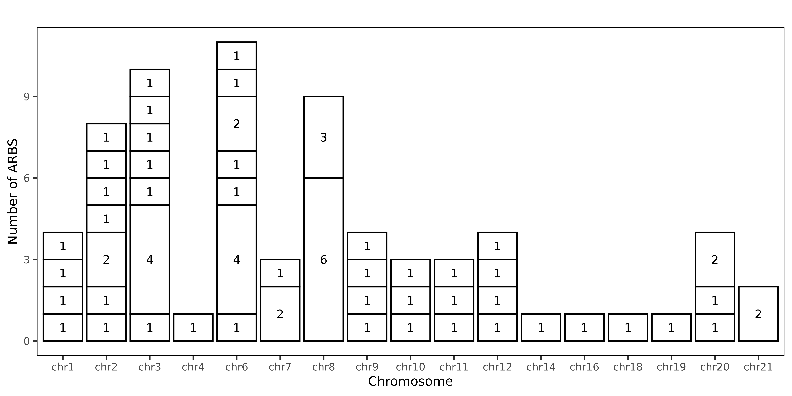
- TFXcan
tfxcan_assoc <- dt_compare %>%
dplyr::filter(!is.na(TFXcan.Z)) %>%
tidyr::separate(locus, into = c('chrom', 'start', 'end'), sep = '_') %>%
dplyr::mutate(across(c(start, end), as.numeric)) %>%
dplyr::select(chrom, start, end)
tfxcan_assoc |> head() chrom start end
1 chr8 127518905 127519805
2 chr8 127321105 127321755
3 chr17 71111359 71112859
4 chr3 170356362 170356912
5 chr8 127509605 127510605
6 chr8 127398055 127398705# overlap with LD blocks
ldgranges <- GenomicRanges::GRanges(seqnames = ldblocks$chrom, IRanges::IRanges(start = ldblocks$start, end = ldblocks$end))
tfxcangranges <- GenomicRanges::GRanges(seqnames = tfxcan_assoc$chrom, IRanges::IRanges(start = tfxcan_assoc$start, end = tfxcan_assoc$end))
ldblock_hits <- GenomicRanges::findOverlaps(query = tfxcangranges, subject = ldgranges)# ldblocks[subjectHits(ldblock_hits), ] %>%
# dplyr::group_by(chrom) %>%
# dplyr::arrange(desc(n)) %>%
# ggplot(.) + aes(x=reorder(chrom, n), y=n) + geom_bar(stat='identity') + theme_minimal() + theme(axis.text.x = element_text(angle = 90, hjust = 1)) + labs(title='Number of ARBS in LD blocks', x='Chromosome', y='Number of ARBS')tfxcan_jt <- data.table::data.table(
ldblock = ldblocks[subjectHits(ldblock_hits), ] %>% tidyr::unite('locus', chrom:end, sep='_') %>% dplyr::pull(locus),
arbs = tfxcan_assoc[queryHits(ldblock_hits), ] %>% tidyr::unite('locus', chrom:end, sep='_') %>% dplyr::pull(locus)
) %>%
dplyr::group_by(ldblock) %>%
dplyr::tally() %>%
dplyr::mutate(chrom = sub('_.*', '', ldblock)) %>%
dplyr::mutate(chrom = factor(chrom, levels = paste0('chr', c(1:22))))tfxcan_ldblock_distribution <- tfxcan_jt %>%
ggplot(.) + aes(x=chrom, y=n, label = n) +
geom_bar(position="stack", stat="identity", fill = NA, color = 'black') +
theme_simple +
labs(title='', x='Chromosome', y='Number of ARBS') +
geom_text(size = 3, position = position_stack(vjust = 0.5))
tfxcan_ldblock_distribution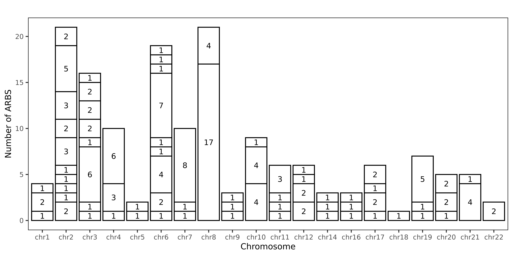
cwas_jt$method <- 'CWAS'
tfxcan_jt$method <- 'Enpact-based Association'
jt <- rbind(cwas_jt, tfxcan_jt)
# %>%
# tidyr::pivot_wider(names_from = method, values_from = n)
ldblock_distribution <- jt %>%
ggplot(.) + aes(x=chrom, y=n, fill = method) +
geom_bar(position="stack", stat="identity", color = 'black') +
labs(title='', x='Chromosome', y='Number of Significant ARBS') +
facet_wrap(.~method, ncol = 1) +
scale_fill_brewer(palette = 'Dark2') +
guides(fill='none') +
theme_simple +
theme(axis.text.x = element_text(angle = 90, hjust = 1), strip.background = element_rect(fill = "white")) +
geom_text(aes(label = n), size = 3, position = position_stack(vjust = 0.5))jt %>%
dplyr::group_by(method) %>%
dplyr::tally()# A tibble: 2 × 2
method n
<chr> <int>
1 CWAS 52
2 Enpact-based Association 74ggsave(file.path(figures_directory, "SF4.ldblock_distribution.png"), ldblock_distribution, width = 10000, height = 6000, units = 'px', dpi = 800)subjectHits(ldblock_hits) |> table() |> sum()[1] 159# ntests <- 5580 # CWAS carried out 5580 test i.e. 5580 ARBS that their models were confident in
# cutoff <- 0.05 / ntests
ext <- dplyr::filter(dt_compare, !is.na(TFXcan.P) & !is.na(CWAS.P))
# If we look at CWAS results, how many of those in TFXcan are likely to be true?
ttrue <- with(ext, 1 - qvalue_truncp(TFXcan.P[!is.na(CWAS.P)])$pi0)
# If we look at TFXcan results, how many of those in CWAS are likely to be true?
ctrue <- with(ext, 1 - qvalue_truncp(CWAS.P[!is.na(TFXcan.P)])$pi0)
pi_true <- c(ttrue, ctrue, 1 - ttrue, 1 - ctrue)
ptests <- cbind(
rbind(ttrue, 1 - ttrue),
rbind(ctrue, 1 - ctrue)
)
colnames(ptests) <- c('TFXcan', 'CWAS')
rownames(ptests) <- c('pi1', 'pi0')
ptests TFXcan CWAS
pi1 0.6165198 0.7462356
pi0 0.3834802 0.2537644vlist <- list(`TFXcan`=dt_compare[!is.na(TFXcan.P)]$locus, `CWAS`=dt_compare[!is.na(CWAS.P)]$locus)
v1 <- vlist[[1]] |> length()
v2 <- vlist[[2]] |> length() #setdiff(vlist[[1]], vlist[[2]]) |> length()
vboth <- intersect(vlist[[1]], vlist[[2]]) |> length()p_venn <- draw.pairwise.venn(
v1, v2, vboth,
c("Enpact-based\ntest", "CWAS-based\ntest"),
fill = c("white"),
alpha = c(0.7, 0.7),
ind = FALSE,
cat.dist = c(-0.1, -0.05),
compression = "lzw",
cex=9.33/12,
cat.cex = 9.33/12,
cat.pos = c(-50, 30),
cat.fontfamily = "Helvetica",
lwd=1,
main=NULL,
units = 'pt'
)
# plot venn diagram and add some margin and enclosing box
vennplot <- ggdraw(p_venn)FIGURE_5$vennplot_overlaps <- vennplot(119/165) * 100[1] 72.12121- out of the 5580 that they tested, how many do we find?
# these have been mapped from hg19 to hg38 already
cwas_5580 <- data.table::fread(file.path(metadata_directory, 'CWAS_significant_prostate_cancer_risk_associations.top5580.txt.gz'))
cwas_5580 locus CWAS.Z CWAS.P
<char> <num> <num>
1: chr1_99615044_99615644 0.08571 0.932
2: chr1_99806744_99807394 0.05952 0.953
3: chr1_100352294_100352644 0.30769 0.758
4: chr1_100419294_100419794 0.66019 0.509
5: chr1_100874244_100874944 1.26789 0.205
---
5574: chr9_94507768_94508318 -0.94245 0.346
5575: chr9_95485768_95486868 0.07195 0.943
5576: chr9_95767668_95768068 0.52941 0.597
5577: chr9_95794118_95794668 0.23256 0.816
5578: chr9_97062318_97062868 0.39759 0.691sum(dt_compare$locus[!is.na(dt_compare$TFXcan.P)] %in% cwas_5580$locus) ; [1] 76sum(!dt_compare$locus[!is.na(dt_compare$TFXcan.P)] %in% cwas_5580$locus)[1] 88So, we find 72 that were tested in the 5580, but they did not test 92 of these ones we found. The overlap is 41.
We can say that we find many more because they lacked to power to test exhaustively, to start with.
TFXcan zscores and TWAS zscores
– CWAS also has association zscores and pvalues for some 5568 models (ARBS)
cwas_5580 <- readxl::read_excel(file.path(metadata_directory, 'cwas_supplementary_tables.xlsx'), sheet = 'Table S3', skip = 1) %>%
dplyr::select(ID, CHR, P0, P1, TWAS.Z, TWAS.P)Warning: Expecting numeric in J3708 / R3708C10: got 'NA'New names:
• `` -> `...6`cwas_5580 <- dplyr::inner_join(cwas_5580, hg38_maps, by=c('ID' = 'hg19_locus')) %>%
dplyr::select(locus=hg38_locus, CWAS.Z=TWAS.Z, CWAS.P=TWAS.P)
# merge with TFXcan
xdt <- dt_tfxcan %>%
dplyr::select(locus = gene_name, TFXcan.Z = zscore, TFXcan.P = pvalue)
commonly_identified <- intersect(dt_compare[!is.na(CWAS.P)]$locus, dt_compare[!is.na(TFXcan.P)]$locus)
cwas_found_only <- setdiff(dt_compare[!is.na(CWAS.P)]$locus, commonly_identified)
dt_comp <- dplyr::inner_join(cwas_5580, xdt, by=c('locus')) %>%
dplyr::mutate(found = case_when(
locus %in% cwas_found_only ~ 'cwas',
locus %in% commonly_identified ~ 'both',
.default = 'tfxcan')
)# hg38_maps %>% dplyr::filter(hg38_locus == outlier_zscores$locus)- and if you plot absolute z-scores
#par(mfrow = c(1,1), xpd = F, pty='s', family = 'Helvetica', ps = 9.33, mgp = c(1.5,0.5,0))
dt_zscores <- dt_comp %>%
dplyr::mutate(bg = case_when(
found == 'both' ~ 'blue',
.default = 'grey'
)) %>%
dplyr::mutate(CWAS.Z = abs(CWAS.Z), TFXcan.Z = abs(TFXcan.Z)) %>%
dplyr::select(locus, CWAS.Z, TFXcan.Z, found, bg)
# %>%
# tidyr::pivot_longer(cols = c(CWAS.Z, TFXcan.Z), names_to = 'method', values_to = 'zscore')
# write it out
data.table::fwrite(dt_zscores, file.path(files_directory, 'cwas_tfxcan_zscores.tsv.gz'), sep = '\t', quote = F, row.names = F, col.names = T)plotzscores <- dt_zscores %>%
ggplot(.) + aes(x=CWAS.Z, y = TFXcan.Z) +
geom_point(aes(fill = bg), shape=21, size = 2) +
theme_simple +
labs(x='CWAS |z-score|', y='Enpact-based \nPrCa Association |z-score|') +
scale_fill_manual(values=c("blue", "grey")) +
geom_abline(intercept = 0, slope = 1, col = 'grey', linetype = 'dashed') +
theme(legend.position="none")
plotzscores
dt_pvalues <- dt_comp %>%
dplyr::mutate(bg = case_when(
found == 'both' ~ 'blue',
.default = 'grey'
)) %>%
dplyr::mutate(CWAS.P = abs(CWAS.P), TFXcan.P = abs(TFXcan.P)) %>%
dplyr::select(locus, CWAS.P, TFXcan.P, found, bg) %>%
dplyr::filter(found == 'both')dt_pvalues %>%
ggplot(.) + aes(x=-log10(CWAS.P), y = -log10(TFXcan.P)) +
geom_point(aes(fill = bg), shape=21, size = 2) +
theme_simple +
labs(x=expression('-log'[10]*"P"[CWAS]), y=expression('-log'[10]*"P"["Enpact-based PrCa Association"])) +
scale_fill_manual(values=c("blue", "grey")) +
geom_abline(intercept = 0, slope = 1, col = 'grey', linetype = 'dashed') +
theme(legend.position="none")
with(dt_pvalues, qqplot(x=-log10(CWAS.P), y = -log10(TFXcan.P)))
abline(0, 1, lty = 'dashed', col = 'grey')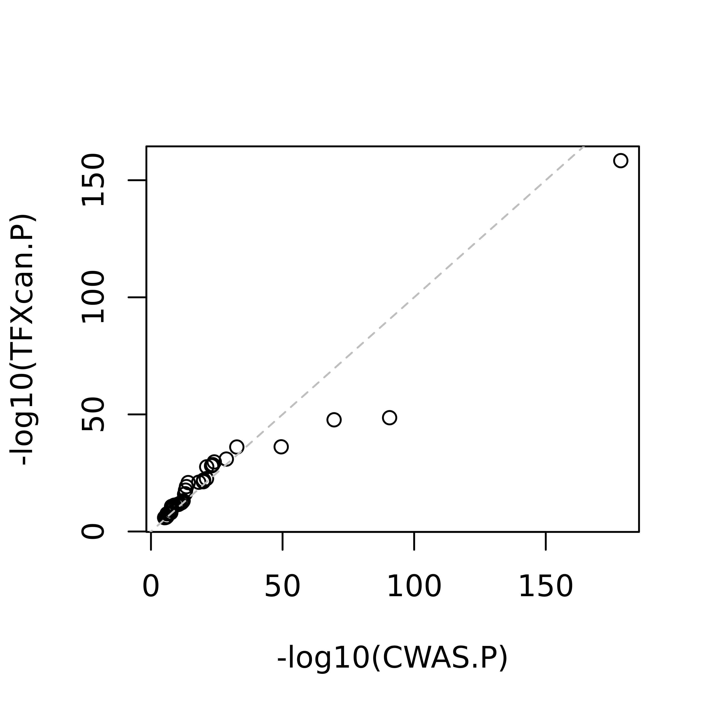
FIGURE_5$plotzscores <- plotzscores- for gene expression
# get gene annoations and coordinates
# genes_annotations <- genes(EnsDb.Hsapiens.v86) %>%
# as.data.frame() %>%
# dplyr::filter(gene_biotype == 'protein_coding', symbol %in% dt_gexpr$gene_name, seqnames %in% c(1:22)) %>%
# dplyr::select(seqnames, start, end, width, gene_name, strand) %>%
# tibble::rownames_to_column('gene_id') %>% dplyr::rename(chrom=seqnames)- for TFXcan
trunc_p <- 30
man.dt_tfxcan <- dt_tfxcan %>%
tidyr::separate_wider_delim(gene, delim = '_', names = c('chrom', 'start', 'end')) %>% dplyr::mutate(across(c(start, end), as.numeric), pos = (end + start) / 2, chrom = as.numeric(gsub('chr', '', chrom))) %>%
dplyr::select(chrom, pos, pvalue, gene_name) %>%
dplyr::mutate(truncP = ifelse(-log10(pvalue) < -log10(10e-30), pvalue, 10e-30))# qqman::manhattan(x = man.dt_tfxcan, chr = 'chrom', bp = 'pos', snp = 'gene_name', p = 'truncP', ylim = c(0, 32))
# mtext('*p-values are truncated', adj = 0.1, line = -1, col = 'green')SNP-AR:Prostate and PrCa risk association manhattan plot
# qqman::manhattan(x = man.dt_tfxcan, chr = 'chrom', bp = 'pos', snp = 'gene_name', p = 'pvalue', suggestiveline = F)##par(mfrow = c(1,1), xpd = F, pty='s', family = 'Helvetica', ps = 9.33, mgp = c(1.5,0.5,0))
# qqm_tfxcan <- function(){
# yat <- pretty(-log10(man.dt_tfxcan$pvalue), n = 20)
# yat[yat == 170] <- 165
# yat <- yat[!between(yat, 0, 150)]
# xlab <- ifelse(yat > 150, yat, yat)
# par(mar=c(0.1,4,0.2,1.2), fig=c(0,1,0.8,0.95), new=FALSE, family = 'sans', ps = 9.33, cex.axis = 0.8, ps = 9.33)
# qqman::manhattan(x = man.dt_tfxcan, chr = 'chrom', bp = 'pos', snp = 'gene_name', p = 'pvalue', ylim = c(160, 165), suggestiveline = FALSE, xaxt = 'n', ylab = '', xlab = '', yaxt = 'n', font.main = 1, family = 'sans', genomewideline = FALSE)
# # adding the slashes
# axis(2, at=yat, labels=xlab, las = 2, cex.axis = 0.8)
# mtext('Enpact-based AR:Prostate binding-PrCa risk association', side = 3, adj = 0, outer = FALSE, font.main = 1, family = 'sans', cex = 0.8)
# par(mar=c(3,4,1.2,1.2), fig=c(0,1,0,0.8), new=TRUE, family = 'sans', ps = 9.33, cex.axis = 1, cex.lab = 1)
# qqman::manhattan(x = man.dt_tfxcan, chr = 'chrom', bp = 'pos', snp = 'gene_name', p = 'pvalue', ylim = c(0, 80), suggestiveline = F, xlab = '', ylab = '', genomewideline = -log10(0.05/nrow(man.dt_tfxcan)), font.main = 1, family = 'sans', cex.axis = 0.8)
# mtext("Chromosome", side = 1, line = 2, outer = FALSE, font.main = 1, family = 'sans', cex = 0.8)
# mtext("-log10(p-value)", side = 2, line = 2.5, outer = FALSE, adj = 0.8, font.main = 1, family = 'sans', cex = 0.8)
# }CWAS prostate cancer risk manhattan plot
man.dt_cwas <- cwas_5580 %>%
tidyr::separate_wider_delim(locus, delim = '_', names = c('chrom', 'start', 'end'), cols_remove = F) %>%
dplyr::mutate(across(c(start, end), as.numeric), pos = (end + start) / 2, chrom = as.numeric(gsub('chr', '', chrom))) %>%
dplyr::select(chrom, pos, pvalue = CWAS.P, locus) %>%
dplyr::mutate(truncP = ifelse(-log10(pvalue) < -log10(10e-30), pvalue, 10e-30)) %>%
dplyr::arrange(desc(pvalue))# this plot has a lot of space between some of the p-values
# qqman::manhattan(x = man.dt_cwas, chr = 'chrom', bp = 'pos', snp = 'locus', p = 'pvalue', suggestiveline = F)# qqm_cwas <- function(){
# cwas_diff <- -log10(man.dt_cwas$pvalue) %>% diff()
# mxx <- which.max(abs(cwas_diff))
# remove_space <- round(-log10(man.dt_cwas$pvalue)[c(mxx, mxx+1)])
# maxlogp <- -log10(man.dt_cwas$pvalue) %>% max()
# yat <- pretty(c(remove_space[2], maxlogp), n = 3)
# # yat <- pretty(-log10(man.dt_cwas$pvalue), n = 50)
# # yat[yat == 170] <- 165
# # yat <- yat[!between(yat, 0, remove_space[2])]
# xlab <- yat #ifelse(yat > 150, yat, yat)
# par(mar=c(0.1,4,0.2,1.2), fig=c(0,1,0.8,0.95), new=FALSE, family = 'Helvetica', ps = 9.33)
# qqman::manhattan(x = man.dt_cwas, chr = 'chrom', bp = 'pos', snp = 'locus', p = 'pvalue', ylim = c(min(yat), max(yat)), suggestiveline = FALSE, xaxt = 'n', ylab = '', xlab = '', yaxt = 'n', genomewideline = FALSE, cex = 0.8)
# # adding the slashes
# axis(2, at=yat, labels=xlab, las = 2, cex.axis = 0.8)
# mtext('CWAS-based AR:Prostate binding-PrCa risk association', side = 3, adj = 0, outer = FALSE, cex = 0.8)
# par(mar=c(3,4,1.2,1.2), fig=c(0,1,0,0.8), new=TRUE, family = 'Helvetica', ps = 9.33, cex.axis = 0.8)
# qqman::manhattan(x = man.dt_cwas, chr = 'chrom', bp = 'pos', snp = 'locus', p = 'pvalue', ylim = c(0, remove_space[1] + 10), suggestiveline = F, xlab = '', ylab = '', genomewideline = -log10(0.05/nrow(man.dt_cwas)), cex = 0.8)
# mtext("Chromosome", side = 1, line = 2, outer = FALSE, font.main = 1, family = 'sans', cex = 0.8)
# mtext("-log10(p-value)", side = 2, line = 2.5, outer = FALSE, adj = 0.8, font.main = 1, family = 'sans', cex = 0.8)
# }# ggplotify::as.ggplot(qqm_tfxcan) #+ theme_simple
# ggdraw(qqm_tfxcan)qqm_tfxcan <- ggmanh::manhattan_plot(x = man.dt_tfxcan, chr.colname = 'chrom', pos.colname = 'pos', pval.colname = 'pvalue', signif = 0.05/nrow(man.dt_tfxcan), preserve.position = TRUE, point.size = 1) + annotate("text", x=1, y=150, label= "Enpact-based PrCa Association", hjust = 0)
qqm_cwas <- ggmanh::manhattan_plot(x = man.dt_cwas, chr.colname = 'chrom', pos.colname = 'pos', pval.colname = 'pvalue', signif = 0.05/nrow(man.dt_cwas), preserve.position = TRUE, point.size = 1) + annotate("text", x=1, y=170, label= "CWAS")
qqm_tfxcan; qqm_cwas

-log10(min(man.dt_tfxcan$pvalue)); -log10(min(man.dt_cwas$pvalue))[1] 158.3542[1] 178.5045Now I need to grab these plots and collate them into a single figure
figure_5 <- rlang::duplicate(FIGURE_5)manhattan_plots <- cowplot::plot_grid(qqm_tfxcan, qqm_cwas, ncol = 1, nrow = 2, labels = c('A'), rel_widths = c(1, 1), rel_heights = c(1,1), label_fontfamily = "Helvetica", label_fontface = "plain", label_size = 8)
zplots <- cowplot::plot_grid(figure_5$vennplot_overlaps, figure_5$plotzscores, ncol = 1, nrow = 2, labels = c('B', 'C'), label_fontfamily = "Helvetica", label_fontface = "plain", label_size = 8)# cowplot::plot_grid(manhattan_plots, zplots, ncol = 2, nrow = 1, rel_widths = c(3, 1), rel_heights = c(1,1))# cowplot::plot_grid(qqm_tfxcan, figure_6$plotzscores, qqm_cwas, figure_6$vennplot_overlaps, ncol = 2, nrow = 2, rel_widths = c(3, 1), rel_heights = c(1,1), labels = c('A', 'B', 'C', 'D'))
f5 <- cowplot::plot_grid(manhattan_plots, zplots, ncol = 2, nrow = 1, rel_widths = c(3, 1), rel_heights = c(1,1)) f5 <- ggplotify::as.ggplot(f5)
f5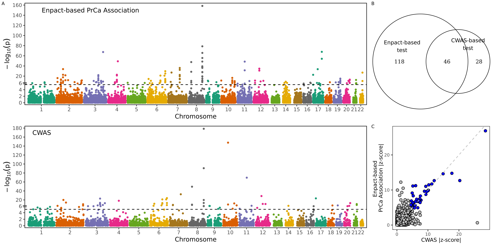
# ggsave has trouble saving base R plots and other non ggplot objects
png(filename=file.path(figures_directory, "figure5.png"), width = 8000, height = 4000, units = "px", res = 800)
f5
dev.off()png
2 # ggsave("/beagle3/haky/users/temi/projects/Enpact/figures/figure6.png", width = 6000, height = 6000, units = "px", dpi = 800)# save the figure
# pdf(file="/beagle3/haky/users/temi/projects/Enpact/figures/figure5.pdf", width = 10, height = 6)
# f5
# dev.off()ALL_FIGURES[['Figure 5']] <- f5Functional classification of genes near exclusive Enpact-based and CWAS-based ARBS
I have decided to look at genes within 1 mb of the ARBS.
# getting genes using annotation hub
library(AnnotationHub)## Load the annotation resource.
ah <- AnnotationHub()
## Query for available H.Sapiens EnsDb databases
ahDb <- query(ah, pattern = c("Homo Sapiens", "EnsDb"))ensdb <- ah[['AH119325']] # AH119325 | Ensembl 113 EnsDb for Homo sapiensloading from cache# filter for chromosomes 1:22
ensdb <- ensembldb::addFilter(ensdb, SeqNameFilter(c(1:22)))
# filter for only protein coding genes
filtr <- GeneBiotypeFilter('protein_coding', condition = "==")
# create genes_Granges
genes_granges <- genes(ensdb, filter = filtr)
# convert to data table
dt_genes <- genes_granges %>%
as.data.table() %>%
dplyr::select(seqnames, start, end, width, gene_name, strand) %>%
dplyr::rename(chrom=seqnames)tfxcan_granges <- with(man.dt_tfxcan, GenomicRanges::GRanges(chrom, IRanges::IRanges(start = pos, end = pos)))
nearest_genes <- GenomicRanges::findOverlaps(tfxcan_granges, genes_granges, maxgap = 1000000)
nearest_genesHits object with 319019 hits and 0 metadata columns:
queryHits subjectHits
<integer> <integer>
[1] 1 18246
[2] 1 18247
[3] 1 18248
[4] 2 18246
[5] 2 18247
... ... ...
[319015] 18612 15523
[319016] 18612 15524
[319017] 18612 15525
[319018] 18612 15526
[319019] 18612 15527
-------
queryLength: 18612 / subjectLength: 19152# %>%
# as.data.frame() %>% dplyr::mutate(tfxcan_index = queryHits, gene_index = subjectHits)# dt.nearest_genes_distance <- as.data.table(nearest_genes) %>%
# dplyr::filter(distance <= 50000)
# dt.nearest_genes_distance# how many unique genes
# dt.nearest_genes_distance$subjectHits |> unique() |> length()
subjectHits(nearest_genes) |> unique() |> length()[1] 19058queryHits(nearest_genes) |> unique() |> length()[1] 18432# 6922 genesGG <- genes_granges[subjectHits(nearest_genes), ] %>%
as.data.table() %>%
dplyr::select(gene_chrom = seqnames, gene_start=start, gene_end=end, gene_name, gene_id)
TT <- man.dt_tfxcan[queryHits(nearest_genes), ] %>%
dplyr::select(tfxcan_chrom = chrom, tfxcan_pos = pos, tfxcan_pvalue = pvalue, arbs = gene_name)arbs.nearest_genes <- dplyr::bind_cols(TT, GG) %>% dplyr::arrange(tfxcan_pvalue)
arbs.nearest_genes# A tibble: 319,019 × 9
tfxcan_chrom tfxcan_pos tfxcan_pvalue arbs gene_chrom gene_start gene_end
<dbl> <dbl> <dbl> <chr> <fct> <int> <int>
1 8 127519355 4.42e-159 chr8_12… 8 126552443 1.27e8
2 8 127519355 4.42e-159 chr8_12… 8 127322183 1.27e8
3 8 127519355 4.42e-159 chr8_12… 8 127735434 1.28e8
4 8 127321430 1.88e- 79 chr8_12… 8 126552443 1.27e8
5 8 127321430 1.88e- 79 chr8_12… 8 127322183 1.27e8
6 8 127321430 1.88e- 79 chr8_12… 8 127735434 1.28e8
7 17 71112109 1.37e- 68 chr17_7… 17 70053429 7.01e7
8 17 71112109 1.37e- 68 chr17_7… 17 70168673 7.02e7
9 3 170356637 3.54e- 68 chr3_17… 3 169083499 1.70e8
10 3 170356637 3.54e- 68 chr3_17… 3 169766921 1.70e8
# ℹ 319,009 more rows
# ℹ 2 more variables: gene_name <chr>, gene_id <chr>Multiple ARBS can be near the same gene, so we need to group by gene and count the number of ARBS near each gene.
arbs.nearest_genes %>%
dplyr::filter(gene_name != "") %>%
dplyr::group_by(gene_name) %>%
dplyr::tally() %>%
dplyr::arrange(desc(n)) # A tibble: 18,452 × 2
gene_name n
<chr> <int>
1 C4orf36 69
2 ABCG1 63
3 UMODL1 62
4 RSPH1 61
5 SLC37A1 61
6 UBASH3A 61
7 TFF1 60
8 TMPRSS3 60
9 ZBTB21 60
10 TFF2 59
# ℹ 18,442 more rowstfxcan_exclusive_arbs <- man.dt_tfxcan %>% dplyr::filter(
gene_name %in% (dt_compare %>% dplyr::filter(!is.na(TFXcan.P) & is.na(CWAS.P)) %>% dplyr::pull(locus))
) dt.tfxcan_exclusive <- man.dt_tfxcan %>% dplyr::filter(
gene_name %in% (dt_compare %>% dplyr::filter(!is.na(TFXcan.P) & is.na(CWAS.P)) %>% dplyr::pull(locus))
) %>%
dplyr::select(tfxcan_loci = gene_name) %>%
dplyr::inner_join(arbs.nearest_genes, by=c('tfxcan_loci' = 'arbs')) %>%
dplyr::filter(gene_name != "")
# arbs.nearest_genes %>% dplyr::filter(arbs %in%
# (dt_compare %>% dplyr::filter(!is.na(TFXcan.P) & is.na(CWAS.P)) %>% dplyr::pull(locus))
# ) %>% dplyr::select(gene_id) %>% distinct() %>% pull(gene_id)
granges.tfxcan_exclusive <- dt.tfxcan_exclusive %>% with(., GenomicRanges::GRanges(seqnames = tfxcan_chrom, IRanges(start = tfxcan_pos, end = tfxcan_pos)))
dt.cwas_exclusive <- man.dt_tfxcan %>% dplyr::filter(
gene_name %in% (dt_compare %>% dplyr::filter(is.na(TFXcan.P) & !is.na(CWAS.P)) %>% dplyr::pull(locus))
) %>%
dplyr::select(cwas_loci = gene_name) %>%
dplyr::inner_join(arbs.nearest_genes, by=c('cwas_loci' = 'arbs')) %>%
dplyr::filter(gene_name != "")
granges.cwas_exclusive <- dt.cwas_exclusive %>% with(., GenomicRanges::GRanges(seqnames = tfxcan_chrom, IRanges(start = tfxcan_pos, end = tfxcan_pos)))
dt.common <- man.dt_tfxcan %>% dplyr::filter(
gene_name %in% (dt_compare %>% dplyr::filter(!is.na(TFXcan.P) & !is.na(CWAS.P)) %>% dplyr::pull(locus))
) %>%
dplyr::select(common_loci = gene_name) %>%
dplyr::inner_join(arbs.nearest_genes, by=c('common_loci' = 'arbs')) %>%
dplyr::filter(gene_name != "")
granges.common <- dt.common %>% with(., GenomicRanges::GRanges(seqnames = tfxcan_chrom, IRanges(start = tfxcan_pos, end = tfxcan_pos)))
dt.all <- arbs.nearest_genes %>%
dplyr::filter(gene_name != "")
# GenomicRanges::distanceToNearest(granges.tfxcan_exclusive, top.genes_granges) ; GenomicRanges::distanceToNearest(granges.cwas_exclusive, top.genes_granges)# tfxcan_ens <- arbs.nearest_genes %>% dplyr::filter(arbs %in%
# (dt_compare %>% dplyr::filter(!is.na(TFXcan.P) & is.na(CWAS.P)) %>% dplyr::pull(locus))
# ) %>% dplyr::select(gene_id) %>% distinct() %>% pull(gene_id)
# cwas_ens <- arbs.nearest_genes %>% dplyr::filter(arbs %in%
# (dt_compare %>% dplyr::filter(is.na(TFXcan.P) & !is.na(CWAS.P)) %>% dplyr::pull(locus))
# ) %>% dplyr::select(gene_id) %>% distinct() %>% pull(gene_id)
# common_ens <- arbs.nearest_genes %>% dplyr::filter(arbs %in%
# (dt_compare %>% dplyr::filter(!is.na(TFXcan.P) & !is.na(CWAS.P)) %>% dplyr::pull(locus))
# ) %>% dplyr::select(gene_id) %>% distinct() %>% pull(gene_id)
# all_ens <- arbs.nearest_genes %>% dplyr::select(gene_id) %>% distinct() %>% pull(gene_id)# length(tfxcan_ens); length(cwas_ens); length(common_ens); length(all_ens)# do you want to use the twas signals, too?
# universe.twas <- dt.all %>%
# dplyr::filter(gene_name %in% twas_signif$gene_name) %>%
# dplyr::select(gene_name) %>%
# distinct() %>% pull(gene_name)tfx <- dt.tfxcan_exclusive$gene_name %>% unique()
cwa <- dt.cwas_exclusive$gene_name %>% unique()
com <- dt.common$gene_name %>% unique()
all_g <- dt.all$gene_name %>% unique()tfx %>% cat(sep='\n', file=file.path(files_directory, 'tfxcan_genes.exclusive.txt'))
cwa %>% cat(sep='\n', file=file.path(files_directory, 'cwas_genes.exclusive.txt'))
com %>% cat(sep='\n', file=file.path(files_directory, 'common_genes.exclusive.txt'))
all_g %>% cat(sep='\n', file=file.path(files_directory, 'all_genes.exclusive.txt'))Gene set overrepresentation analysis with gprofiler
tfxcan_genes <- readLines(file.path(files_directory, 'tfxcan_genes.exclusive.txt'))
cwas_genes <- readLines(file.path(files_directory, 'cwas_genes.exclusive.txt'))
common_genes <- readLines(file.path(files_directory, 'common_genes.exclusive.txt'))
all_genes <- readLines(file.path(files_directory, 'all_genes.exclusive.txt'))length(tfxcan_genes) ; length(cwas_genes) ; length(common_genes) ; length(all_genes)[1] 1516[1] 484[1] 656[1] 18452n <- max(length(tfxcan_genes), length(cwas_genes), length(common_genes), length(all_genes))
length(tfxcan_genes) <- n
length(cwas_genes) <- n
length(common_genes) <- n
length(all_genes) <- n
gene_sets <- data.table::data.table(
tfxcan = tfxcan_genes,
cwas = cwas_genes,
overlapping = common_genes,
background = all_genes
)
head(gene_sets) tfxcan cwas overlapping background
<char> <char> <char> <char>
1: LRATD2 STRBP LRATD2 LRATD2
2: POU5F1B CRB2 POU5F1B POU5F1B
3: MYC DENND1A MYC MYC
4: KCNJ16 LHX2 C11orf24 KCNJ16
5: KCNJ2 NEK6 LRP5 KCNJ2
6: MECOM PSMB7 PPP6R3 MECOM# SUPPLEMENTARY_TABLES[['Supplementary Table 10']] <- gene_setsres <- gprofiler2::gost(query = list(
`Enpact ARBS genes` = tfxcan_genes,
`CWAS ARBS genes` = cwas_genes,
`Overlapping genes` = common_genes
),
organism = "hsapiens", ordered_query = FALSE,
multi_query = TRUE, significant = TRUE, exclude_iea = FALSE,
measure_underrepresentation = FALSE, evcodes = FALSE,
user_threshold = 0.01, correction_method = "bonferroni", custom_bg = all_genes,
numeric_ns = "", sources = c("GO:MF", "REAC", 'GO:BP', 'GO:CC', 'KEGG'), as_short_link = FALSE, highlight = TRUE)Detected custom background input, domain scope is set to 'custom'.res$result[1:5, 1:5] term_id p_values significant term_size query_sizes
1 GO:0030280 1.943572.... TRUE, FA.... 37 1499, -1....
2 GO:0045095 6.531514.... TRUE, FA.... 93 1499, -1....
3 GO:0005132 1, 1, 1..... FALSE, F.... 17 -1, -1, 651
4 GO:0045109 1.787019.... TRUE, FA.... 72 1499, -1....
5 GO:0045104 7.929673.... TRUE, FA.... 93 1499, -1....# res <- gprofiler2::gost(query = tfx,
# organism = "hsapiens", ordered_query = FALSE,
# multi_query = F, significant = TRUE, exclude_iea = FALSE,
# measure_underrepresentation = FALSE, evcodes = TRUE,
# user_threshold = 0.01, correction_method = "bonferroni", custom_bg = all_g,
# numeric_ns = "", sources = c("GO:MF", "REAC", 'GO:BP', 'GO:CC', 'KEGG'), as_short_link = FALSE, highlight = TRUE)
# res$result[1:5, 1:5]dim(res$result)[1] 68 12# SUPPLEMENTARY_TABLES[['Supplementary Table 11']] <- res$resultgene_overrep_plot <- function(){
gprofiler2::gostplot(res, capped = FALSE, interactive = FALSE) %>%
gprofiler2::publish_gostplot(width = NA, height = NA, filename = NULL)
}goverrep_plot <- cowplot::plot_grid(gene_overrep_plot(), ncol = 1, nrow = 1)
# ggsave("/beagle3/haky/users/temi/projects/Enpact/figures/suppl.figure4C.png", width = 14000, height = 6000, units = "px", dpi = 800)
goverrep_plot
ggsave(file.path(figures_directory, "suppl.figure4C.png"), goverrep_plot, width = 11000, height = 3500, units = "px", dpi = 800)Annotate arbs near TWAS-annotated genes
man.dt_gexpr <- dplyr::inner_join(dt_gexpr, dt_genes, by=c('gene_name' = 'gene_name'), relationship = "many-to-many")- TWAS
png(file.path(figures_directory, "SF4.TWAS_prostate-cancer-risk.png"), width = 8000, height = 4000, res = 800, units = 'px')
par(xpd = F,family = 'Helvetica', ps = 9.33, mgp = c(1.5,0.5,0))
trunc_p <- 30
pp <- man.dt_gexpr %>% dplyr::mutate(across(c(start, end), as.numeric), pos = (end + start) / 2, chrom = as.numeric(gsub('chr', '', chrom))) %>%
dplyr::select(chrom, pos, pvalue, gene_name) %>% qqman::manhattan(chr = 'chrom', bp = 'pos', snp = 'gene_name', p = 'pvalue', genomewideline = -log10(0.05/nrow(.)), suggestiveline = F)
# # pp + ggbreak::scale_x_break()
# pp <- mtext('TWAS prostate cancer risk', adj = 0)
box()
par(mfrow = c(1,1))
dev.off()png
2 twas_signif_associations <- man.dt_gexpr %>%
dplyr::filter(pvalue <= (0.05/nrow(.))) %>%
dplyr::mutate(pos = ceiling((end + start) / 2))top.arbs <- dt_compare %>%
dplyr::arrange(desc(TFXcan.Z)) %>%
dplyr::filter(!is.na(TFXcan.P)) %>%
tidyr::separate_wider_delim(locus, delim = '_', names = c('chrom', 'start', 'end'), cols_remove = F) %>%
dplyr::mutate(across(c(start, end), as.numeric), pos = (end + start) / 2, chrom = as.numeric(gsub('chr', '', chrom))) %>%
dplyr::select(chrom, start, end, pos, locus, TFXcan.Z, TFXcan.P)
top.arbs_granges <- top.arbs %>% with(., GenomicRanges::GRanges(seqnames = chrom, IRanges(start, end), arbs = locus))ov_dist <- GenomicRanges::distanceToNearest(top.arbs_granges, genes_granges)
distance_to_nearest_gene <- ov_dist %>% elementMetadata() %>% as.data.frame() %>% dplyr::pull(distance)
summary(distance_to_nearest_gene) ; Min. 1st Qu. Median Mean 3rd Qu. Max.
0 0 0 37828 21566 943660 What genes are these?
sd <- genes_granges[subjectHits(ov_dist), ]
sd$distance <- mcols(ov_dist)$distance
sd$arbs <- mcols(top.arbs_granges[queryHits(ov_dist), ])$arbs
dt_sd <- as.data.table(sd)dt_sd <- dt_sd %>%
dplyr::mutate(twas_signif = case_when(
gene_name %in% twas_signif_associations$gene_name ~ TRUE,
.default = FALSE
))# filter for the top 10 ARBS
dt_lzoom <- dt_sd %>%
dplyr::inner_join(top.arbs %>% dplyr::select(locus, TFXcan.Z, TFXcan.P), by=c('arbs' = 'locus')) %>%
dplyr::mutate(twas_signif = case_when(
symbol %in% twas_signif_associations$gene_name ~ TRUE,
.default = FALSE
))
head(dt_lzoom) seqnames start end width strand gene_id gene_name
<fctr> <int> <int> <int> <fctr> <char> <char>
1: 8 127322183 127420066 97884 + ENSG00000212993 POU5F1B
2: 17 70168673 70180044 11372 + ENSG00000123700 KCNJ2
3: 3 170357342 170396835 39494 + ENSG00000136603 SKIL
4: 8 127322183 127420066 97884 + ENSG00000212993 POU5F1B
5: 8 127322183 127420066 97884 + ENSG00000212993 POU5F1B
6: 7 98106862 98209638 102777 + ENSG00000164715 LMTK2
gene_biotype seq_coord_system
<char> <char>
1: protein_coding chromosome
2: protein_coding chromosome
3: protein_coding chromosome
4: protein_coding chromosome
5: protein_coding chromosome
6: protein_coding chromosome
description
<char>
1: POU class 5 homeobox 1B [Source:HGNC Symbol;Acc:HGNC:9223]
2: potassium inwardly rectifying channel subfamily J member 2 [Source:HGNC Symbol;Acc:HGNC:6263]
3: SKI like proto-oncogene [Source:HGNC Symbol;Acc:HGNC:10897]
4: POU class 5 homeobox 1B [Source:HGNC Symbol;Acc:HGNC:9223]
5: POU class 5 homeobox 1B [Source:HGNC Symbol;Acc:HGNC:9223]
6: lemur tyrosine kinase 2 [Source:HGNC Symbol;Acc:HGNC:17880]
gene_id_version canonical_transcript symbol entrezid distance
<char> <char> <char> <list> <int>
1: ENSG00000212993.6 ENST00000696633 POU5F1B 5462 98838
2: ENSG00000123700.5 ENST00000243457 KCNJ2 3759 931314
3: ENSG00000136603.15 ENST00000259119 SKIL 6498 429
4: ENSG00000212993.6 ENST00000696633 POU5F1B 5462 299277
5: ENSG00000212993.6 ENST00000696633 POU5F1B 5462 0
6: ENSG00000164715.6 ENST00000297293 LMTK2 22853 0
arbs twas_signif TFXcan.Z TFXcan.P
<char> <lgcl> <num> <num>
1: chr8_127518905_127519805 FALSE 26.87399 4.423605e-159
2: chr17_71111359_71112859 FALSE 17.50250 1.371230e-68
3: chr3_170356362_170356912 FALSE 17.44832 3.544852e-68
4: chr8_127022305_127022905 FALSE 13.24589 4.765946e-40
5: chr8_127400755_127401655 FALSE 12.68834 6.862744e-37
6: chr7_98178188_98178888 FALSE 12.67260 8.388275e-37top.dt_lzoom <- dt_lzoom %>% dplyr::filter(twas_signif == TRUE) %>% dplyr::arrange(desc(TFXcan.P))dt_lzoom$twas_signif |> table() |> prop.table()
FALSE TRUE
0.92682927 0.07317073 # create the list of ggranges for the top.arbs
list.ggranges <- purrr::map(unique(top.dt_lzoom$gene_name), function(gene){
ggranges <- with(
top.dt_lzoom %>%
dplyr::filter(gene_name == gene) %>%
dplyr::distinct(seqnames, start, end, gene_name),
GenomicRanges::GRanges(seqnames = seqnames, IRanges(start = start, end = end), gene_name = gene_name))
return(ggranges)
})
names(list.ggranges) <- unique(top.dt_lzoom$gene_name)
list.ggranges <- Filter(Negate(is.null), list.ggranges)# make the list of locus zoom plots
list.lzoomPlots <- purrr::map(names(list.ggranges), function(agene){
# get the tfxcan results
tfxcan_et <- top.dt_lzoom %>%
dplyr::filter(gene_name == agene) %>%
dplyr::distinct(arbs, zscore = TFXcan.Z, pvalue = TFXcan.P) %>%
tidyr::separate_wider_delim(arbs, delim = '_', names = c('chrom', 'start', 'end'), cols_remove = F)
ggranges <- list.ggranges[[agene]]
chrom <- paste0('chr', ggranges@seqnames |> as.character())
gstart <- start(ggranges)
gend <- end(ggranges)
chrom_tfxcan <- top.arbs %>%
dplyr::filter(chrom == ggranges@seqnames |> as.character() |> as.integer(), dplyr::between(pos, gstart - 1e6, gend + 1e6)) %>%
dplyr::select(chrom, pos, rsid=locus, start, end, pvalue = TFXcan.P) %>%
dplyr::mutate(logP = -log10(pvalue))
dg <- chrom_tfxcan %>% dplyr::select(chrom, pos, p=pvalue, start, end, rsid) |> as.data.frame()
loc <- locus(data = dg, gene = agene, ens_db = "EnsDb.Hsapiens.v86", index_snp = intersect(dg$rsid, tfxcan_et$arbs), flank = 1e6)
pp <- locus_ggplot(loc, filter_gene_biotype = 'protein_coding', highlight = agene, labels = "index", nudge_y = 0.05) +
theme(text=element_text(size=9.33, colour = 'black', family = 'Helvetica'),
axis.text = element_text(hjust = 1),
axis.text.x = element_text( hjust=0.5), legend.position="none",
panel.background = element_rect(color = 'black'))
})chr21_41530173_41530873, TMPRSS2, chromosome 21, position 40464551 to 42531116chr21_41521423_41522173, TMPRSS2, chromosome 21, position 40464551 to 42531116chr21_41500823_41501423, TMPRSS2, chromosome 21, position 40464551 to 42531116chr21_41536223_41536873, TMPRSS2, chromosome 21, position 40464551 to 425311164 SNPs/datapointschr16_84999094_84999594, ZDHHC7, chromosome 16, position 83974181 to 860115351 SNPs/datapointschr6_159740368_159740868, WTAP, chromosome 6, position 158725585 to 1607563198 SNPs/datapointschr3_113536553_113537403, SIDT1, chromosome 3, position 112532296 to 1146295781 SNPs/datapointschr3_152385461_152386761, MBNL1, chromosome 3, position 151243828 to 153465780chr3_152406361_152406861, MBNL1, chromosome 3, position 151243828 to 1534657802 SNPs/datapointschr3_128065357_128065757, RUVBL1, chromosome 3, position 127064778 to 1291539146 SNPs/datapointschr6_153126265_153126715, RGS17, chromosome 6, position 152004459 to 1541312491 SNPs/datapointschr17_715560_716110, VPS53, chromosome 17, position 0 to 17217171 SNPs/datapointsnames(list.lzoomPlots) <- names(list.ggranges)groblist <- lapply(list.lzoomPlots, ggplotGrob)
locus_zoom_plots <- patchwork::wrap_plots(groblist, ncol = 3)
ggsave(file.path(figures_directory, 'SF4.locus_zoom_plots.png'), locus_zoom_plots, width = 18000, height = 12000, units = 'px', dpi = 800)Gene overrepresentation analysis of the 44 ARBS
res.gor.44 <- data.table::fread(file.path(tfxcan_project_directory, 'experiments/validation/overrep_analysis_genes_near_44_ARBS.txt'))SUPPLEMENTARY_TABLES[[length(SUPPLEMENTARY_TABLES) + 1]] <- res.gor.44pp <- res.gor.44 %>%
ggplot(aes(x = -log10(p_value), y = reorder(term_name, -log10(p_value)))) +
geom_point(aes(size = intersection_size)) +
geom_segment(aes(xend=0, yend=term_name)) +
theme_simple +
guides(size = guide_legend(title = 'Gene Count')) +
labs(x = expression(-log[10]*"P"), y = 'Term')
ggsave(glue("{figures_directory}/SF4.enrichment_analysis_genes_near_44_distinct_ARBS.png"), pp, width = 5500, height = 6000, dpi = 800, units = 'px')
# pppp <- res.gor.44 %>%
dplyr::filter(fdr == TRUE) %>%
ggplot(aes(x = -log10(p_value), y = reorder(term_name, -log10(p_value)))) +
geom_point(aes(size = intersection_size)) +
geom_segment(aes(xend=0, yend=term_name)) +
theme_simple +
guides(size = guide_legend(title = 'Gene Count')) +
labs(x = expression(-log[10]*"P"), y = 'Term')
ggsave(glue("{figures_directory}/SF4.fdr.enrichment_analysis_genes_near_44_distinct_ARBS.png"), pp, width = 5500, height = 2000, dpi = 800, units = 'px')
# ppFIGURE 6: Matrix factorization and Tenerife plots
library(RColorBrewer)
library(ComplexHeatmap)
library(patchwork)
library(cowplot)
library(grid)FIGURE_6 <- list()# these weird tissues should be removed
weird_tissues <- c("endometrioidadenocarcinoma", "HCT116", "HeLacontaminant", "Headandneck", "LNCaPcells", 'PeritonealEffusion')
performance_file <- '/beagle3/haky/users/temi/projects/Enpact/data/enpact/weights/ENPACT_734_2025-04-24.compiled_stats.with_auprc.tsv'
performance <- data.table::fread(performance_file) %>%
dplyr::filter(type == 'test') %>%
dplyr::filter((!is.na(auroc) & auroc >= 0.7) & !context %in% weird_tissues)
dim(performance)[1] 700 11# prca_tfxcan <- data.table::fread("/beagle3/haky/users/temi/projects/TFXcan-snakemake/data/prostate_cancer_risk_2024-09-30/important/prostate_cancer_risk.enpactScores.2024-09-30.spredixcan.complete.txt") %>%
# dplyr::filter(!is.na(pvalue), !is.na(zscore)) %>%
# dplyr::filter(!grepl("HCT116_|HeLacontaminant_|PeritonealEffusion_|LNCaPcells_|endometrioidadenocarcinoma_|Headandneck_", gene_name)) %>%
# tidyr::separate_wider_delim(gene, names = c('tf', 'tissue', 'chrom', 'start', 'end'), delim = '_', cols_remove = FALSE) %>%
# dplyr::mutate(chrom_num = gsub('chr', '', chrom), across(c(start, end, chrom_num), as.numeric), tf_tissue = paste0(tf, '_', tissue), locus = paste(chrom, start, sep = ':')) %>%
# dplyr::filter(tf_tissue %in% performance$model) %>%
# dplyr::select(locus, tf, tissue, tf_tissue, chrom, start, end, zscore, pvalue)prca_tfxcan <- data.table::fread(file.path(tfxcan_project_directory, 'data/tfxcan', 'prostate_cancer_risk.enpactScores.2025-10-21.complete.spredixcan.tsv')) %>%
tidyr::separate_wider_delim(tfbs, delim = '_', names = c('tf', 'tissue', 'chrom', 'start', 'end')) %>%
dplyr::mutate(locus = paste(chrom, start, end, sep = '_'), start = as.numeric(start), end = as.numeric(end), tf_tissue = paste(tf, tissue, sep = '_')) %>%
dplyr::filter(!is.na(pvalue), !is.na(zscore)) %>%
dplyr::filter(tf_tissue %in% performance$model) %>%
dplyr::select(locus, tf, tissue, tf_tissue, chrom, start, end, zscore, pvalue, pred_perf_r2, pred_perf_pval) %>%
dplyr::filter(!tissue %in% weird_tissues)
# data.table::fread("/beagle3/haky/users/temi/projects/Enpact/misc/reruns/prca_tfxcan/prostate_cancer_risk.enpactScores.2025-04-25.complete.spredixcan.txt") prca_tfxcan$tf_tissue |> unique() |> length()[1] 700# distritubion of TF tissue pairs
prca_tfxcan$tf |> unique() |> length();[1] 204prca_tfxcan$tissue |> unique() |> length();[1] 54prca_tfxcan$pred_perf_r2 |> summary() Min. 1st Qu. Median Mean 3rd Qu. Max.
0.01014 0.89171 0.95319 0.91607 0.98019 0.99955 SUPPLEMENTARY_TABLES[[length(SUPPLEMENTARY_TABLES) + 1]] <- prca_tfxcanWhat TFs are most important across all 132 GWAS loci?
dt_pranking <- prca_tfxcan %>%
dplyr::group_by(tf, locus) %>%
dplyr::summarize(acatP = ACAT::ACAT(pvalue)) %>%
dplyr::mutate(neglogP = -log10(acatP)) %>%
dplyr::ungroup() %>%
dplyr::group_by(locus) %>%
dplyr::mutate(prank = rank(-neglogP, ties.method = 'average')) %>%
dplyr::arrange(desc(prank))`summarise()` has grouped output by 'tf'. You can override using the `.groups`
argument.# boxplots
arrangement <- dt_pranking %>%
dplyr::ungroup() %>%
dplyr::group_by(tf) %>%
dplyr::summarize(mn = median(prank)) %>%
dplyr::arrange(mn)
dt_pranking$tf <- factor(dt_pranking$tf, levels = arrangement$tf)
tfxcan_tf_pval_ranking <- dt_pranking %>%
dplyr::filter(tf %in% arrangement$tf) %>%
ggplot(aes(x = prank, y = tf)) +
geom_boxplot(alpha = 0.5) + theme_simple +
theme(legend.position = "none") +
labs(title = 'TFXcan ACAT pvalue ranking', x = 'Median Rank across 132 GWAS loci', y = 'Transcription Factor')tfxcan_tf_pval_ranking
ggsave(filename=file.path(figures_directory, "SF6.tfxcan_tf_pval_ranking.png"), tfxcan_tf_pval_ranking, width = 5000, height = 15000, units = "px", dpi = 800)What tissues are most important across all 132 GWAS loci?
dt_pranking <- prca_tfxcan %>%
dplyr::group_by(tissue, locus) %>%
dplyr::summarize(acatP = ACAT::ACAT(pvalue)) %>%
dplyr::mutate(neglogP = -log10(acatP)) %>%
dplyr::ungroup() %>%
dplyr::group_by(locus) %>%
dplyr::mutate(prank = rank(-neglogP, ties.method = 'average')) %>%
dplyr::arrange(desc(prank))`summarise()` has grouped output by 'tissue'. You can override using the
`.groups` argument.# boxplots
arrangement <- dt_pranking %>%
dplyr::ungroup() %>%
dplyr::group_by(tissue) %>%
dplyr::summarize(mn = median(prank)) %>%
dplyr::arrange(mn)
dt_pranking$tissue <- factor(dt_pranking$tissue, levels = arrangement$tissue)
tfxcan_tissue_pval_ranking <- dt_pranking %>%
dplyr::filter(tissue %in% arrangement$tissue) %>%
ggplot(aes(x = prank, y = tissue)) +
geom_boxplot(alpha = 0.5) + theme_simple +
theme(legend.position = "none") +
labs(title = 'TFXcan ACAT pvalue ranking', x = 'Median Rank across 132 GWAS loci', y = 'Tissue')tfxcan_tissue_pval_ranking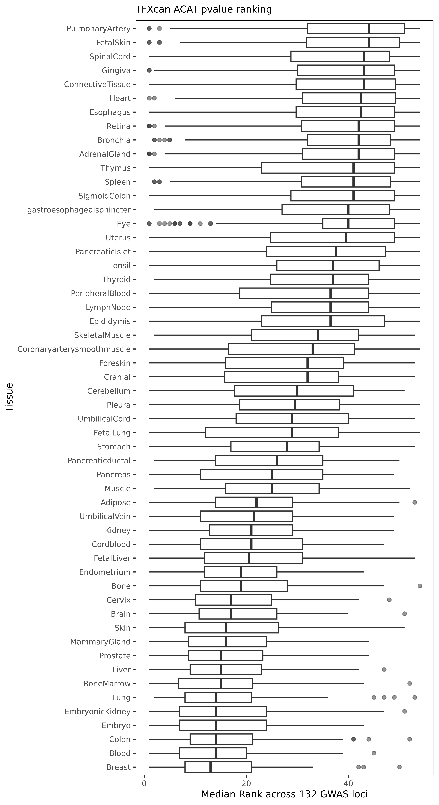
ggsave(filename=file.path(figures_directory, "SF6.tfxcan_tissue_pval_ranking.png"), tfxcan_tf_pval_ranking, width = 5000, height = 15000, units = "px", dpi = 800)# prca_tfxcan %>%
# dplyr::rename(tf_tissue_locus = gene) %>%
# dplyr::select(-gene_name) %>%
# data.table::fwrite(file.path(data_dir, 'prostate_cancer_risk.TFXcan.txt.gz'), sep='\t', quote = F, row.names = F, compress = 'gzip')Full Tenerife plot
# read in the data i.e. zscores
data_list <- readRDS(file.path(tfxcan_project_directory, 'data/tenerife', 'PrCa.tfxcan.zscores.matrices.rds'))
#readRDS("/beagle3/haky/users/temi/projects/Enpact/data/tenerife/PrCa.tfxcan.zscores.matrices.rds")# full tenerife
standardized_zscores <- data_list[["zratios"]][["tfxcan"]]**2
gwas_zscores <- data_list[["zratios"]][["gwas"]]
standardized_zscores <- standardized_zscores[rownames(gwas_zscores), ]p1 <- standardized_zscores %>%
ComplexHeatmap::Heatmap(col = brewer.pal(n = 8, name = "Blues"), border = 'black', cluster_rows = F, cluster_columns = F, column_names_rot = 90, heatmap_legend_param = list(title = expression(Z[TFXcan]^2)), row_names_gp = gpar(fontsize = 7, fontfamily = 'Helvetica'), column_names_gp = gpar(fontsize = 7, fontfamily = 'Helvetica'), rect_gp = gpar(col = "black", lwd = 1))
p2 <- gwas_zscores %>%
ComplexHeatmap::Heatmap(col = brewer.pal(n = 8, name = "RdBu"), border = 'black', cluster_rows = F, cluster_columns = F, column_names_rot = 90, heatmap_legend_param = list(title = expression(Z[GWAS])), row_names_gp = gpar(fontsize = 7, fontfamily = 'Helvetica'), column_names_gp = gpar(fontsize = 7, fontfamily = 'Helvetica'), rect_gp = gpar(col = "black", lwd = 1))
p3 <- (p1 + p2)
full_tenerife <- p3 %>%
ComplexHeatmap::draw() %>%
grid.grabExpr() %>%
ggdraw()# save the full tenerife plot
ggsave(filename=file.path(figures_directory, "suppl.figure5.pdf"), full_tenerife, width = 50000, height = 20000, units = "px", dpi = 800, limitsize = FALSE)Subset tenerife plot
# zoom into the tenerife plot
# prostate only
# here I plot the z-scores squared
shw <- grepl("^AR_|^FOXA1_|^HOXB13_|^GATA2_|GWAS", colnames(data_list[["zratios"]][["tfxcan"]]))
shw_mat <- data_list[["zratios"]][["tfxcan"]][, shw]
# the dt_gwas_pvalues
shw_gwas <- data_list[["zratios"]][["gwas"]]
shw_gwas <- shw_gwas[rownames(shw_mat), ] |> as.matrix()
colnames(shw_gwas) <- "GWAS"
shw_mat <- cbind(shw_mat, shw_gwas)wrows <- c(1:10, (nrow(shw_mat) - 10):nrow(shw_mat))
mmat <- shw_mat[wrows, ]
g.mmat <- mmat[, "GWAS", drop = FALSE]
mmat <- (mmat[, -ncol(mmat), drop = FALSE])
p1 <- mmat**2 %>%
ComplexHeatmap::Heatmap(col = brewer.pal(n = 8, name = "Blues"), border = 'black', cluster_rows = F, cluster_columns = F, column_names_rot = 90, heatmap_legend_param = list(title = expression(Z[TFXcan]^2)), row_names_gp = gpar(fontsize = 7, fontfamily = 'Helvetica'), column_names_gp = gpar(fontsize = 7, fontfamily = 'Helvetica'), rect_gp = gpar(col = "black", lwd = 1))
p2 <- g.mmat %>%
ComplexHeatmap::Heatmap(col = brewer.pal(n = 8, name = "RdBu"), border = 'black', cluster_rows = F, cluster_columns = F, column_names_rot = 90, heatmap_legend_param = list(title = expression(Z[GWAS])), row_names_gp = gpar(fontsize = 7, fontfamily = 'Helvetica'), column_names_gp = gpar(fontsize = 7, fontfamily = 'Helvetica'), rect_gp = gpar(col = "black", lwd = 1))
p3 <- p1 + p2
subset_tenerife <- p3 %>%
ComplexHeatmap::draw() %>%
grid.grabExpr() %>%
ggdraw()# save the subset tenerife plot
png(file.path(figures_directory, "prca_subset_tenerife_plot.png"), width = 3000, height = 3000, res = 800, units = 'px')
grid.draw(subset_tenerife)
dev.off()png
2 Normalizing the Tenerife plot
Ratio tenerife plot
zratio_matdev <- readRDS(file.path(tfxcan_project_directory, 'data/tenerife', "PrCa.tfxcan.zratios.matrix.rds"))# saving the full normalized tenerife plot
norm.tenerife.full.plot <- zratio_matdev[rownames(gwas_zscores), ]%>%
ComplexHeatmap::Heatmap(col = brewer.pal(n = 8, name = "Blues"), border = 'black', cluster_rows = F, cluster_columns = F, column_names_rot = 90, heatmap_legend_param = list(title = expression(frac(Z[TFXcan]^2, Z[GWAS]^2))), row_names_gp = gpar(fontsize = 7, fontfamily = 'Helvetica'), column_names_gp = gpar(fontsize = 7, fontfamily = 'Helvetica'), rect_gp = gpar(col = "black", lwd = 1))
norm.tenerife.full.plot <- norm.tenerife.full.plot %>%
ComplexHeatmap::draw() %>%
grid.grabExpr() %>%
ggdraw()
# save the full tenerife plot
ggsave(filename=file.path(figures_directory, "suppl.figure5B.pdf"), norm.tenerife.full.plot, width = 50000, height = 20000, units = "px", dpi = 800, limitsize = FALSE)subset_zratio <- zratio_matdev[rownames(mmat), colnames(mmat)] %>%
ComplexHeatmap::Heatmap(col = brewer.pal(n = 8, name = "Blues"), border = 'black', cluster_rows = F, cluster_columns = F, column_names_rot = 90,
heatmap_legend_param = list(title = expression(frac(Z[TFXcan]^2, Z[GWAS]^2))), row_names_gp = gpar(fontsize = 7, fontfamily = 'Helvetica'), column_names_gp = gpar(fontsize = 7, fontfamily = 'Helvetica'), rect_gp = gpar(col = "black", lwd = 1)) %>%
ComplexHeatmap::draw() %>%
grid.grabExpr() %>%
ggdraw()# save the subset tenerife plot
# png("/beagle3/haky/users/temi/projects/Enpact/figures/prca_subset_zratio_plot.png", width = 3000, height = 3000, res = 800, units = 'px')
# subset_zratio
# dev.off()tenerife_plots <- patchwork::wrap_plots(
ggplotify::as.ggplot(subset_tenerife),
ggplotify::as.ggplot(subset_zratio), ncol = 2) + plot_annotation(tag_levels = list(c(1,2)),
theme = theme(plot.tag = element_text(size = 10.6, family = 'Helvetica', face = 'plain')))
tenerife_plots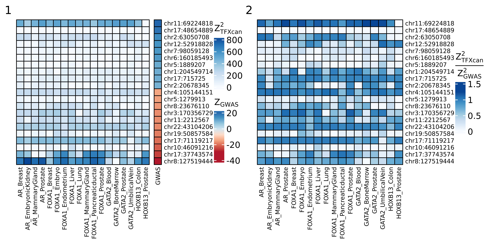
FIGURE_6$tenerife_plots <- tenerife_plotsggsave(file.path(figures_directory, "figure6A.png"), tenerife_plots, width = 6000, height = 3000, units = 'px', dpi = 800)Matrix factorization of z-scores
zflash <- readRDS("/beagle3/haky/users/temi/projects/Enpact/data/tenerife/PrCa.tfxcan.zratios.flash.rds")proportion of variance explained by each of the factors
pve_plot <- ggplot() +
geom_point(aes(x = 1:length(zflash$pve), y = zflash$pve), size = 2) +
geom_line(aes(x = 1:length(zflash$pve), y = zflash$pve), linewidth = 0.5, color = 'grey', linetype = 'dashed') +
theme_simple +
labs(x = 'Program', y = 'PVE') +
scale_x_continuous(breaks = seq(1, length(zflash$pve), 1)) + theme( aspect.ratio=1)# FIGURE_6$pve_plot <- pve_plot# cumulative proportion of variance explained
cum_pve <- cumsum(zflash$pve)
cum_pve_plot <- ggplot() +
geom_point(aes(x = 1:length(cum_pve), y = cum_pve), size = 2) +
geom_line(aes(x = 1:length(cum_pve), y = cum_pve), linewidth = 0.5, color = 'grey', linetype = 'dashed') +
theme_simple +
labs(x = 'Program', y = 'Cumulative PVE') +
scale_x_continuous(breaks = seq(1, length(cum_pve), 1)) +
scale_y_continuous(limits = c(round(min(cum_pve), 2), round(max(cum_pve), 2)), breaks = seq(round(min(cum_pve), 2), round(max(cum_pve), 2), by=0.01)) + theme( aspect.ratio=1)variance_explained <- patchwork::wrap_plots(list(pve_plot, cum_pve_plot), ncol = 2) +
plot_annotation(tag_levels = list(c('C', 'D'))) + theme(legend.position = 'none')variance_explained %>% ggplotify::as.ggplot()Warning: Removed 1 row containing missing values or values outside the scale range
(`geom_point()`).Warning: Removed 1 row containing missing values or values outside the scale range
(`geom_line()`).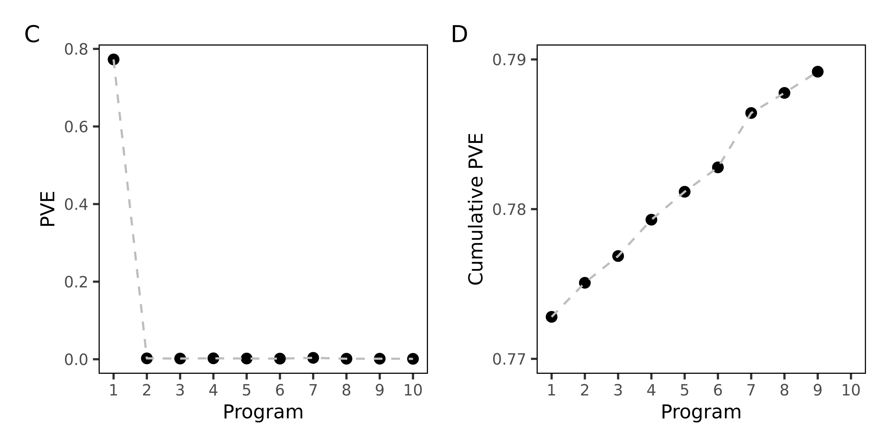
ggsave("/beagle3/haky/users/temi/projects/Enpact/figures/suppl.figure6CD.png", variance_explained, width = 4000, height = 4000, units = 'px', dpi = 800)Warning: Removed 1 row containing missing values or values outside the scale range
(`geom_point()`).Warning: Removed 1 row containing missing values or values outside the scale range
(`geom_line()`).#FIGURE_6$cum_pve_plot <- cum_pve_plotPrograms in PrCa TFXcan associations
select_ks <- function(cluster_designation, cluster, mat, samp = TRUE){
yx <- cluster_designation[cluster_designation == cluster]
kx <- sapply(strsplit(names(yx), '_'), getElement, 2) |> unique()
yx_kx <- lapply(kx, function(x) yx[endsWith(names(yx), x)])
set.seed(2025)
if(samp){
selected_yx_kx <- sapply(yx_kx, function(x){
x <- x[sample.int(length(x), 1)]
return(x)
}) %>% names()
} else {
selected_yx_kx <- names(unlist(yx_kx))
}
tryCatch({
mt <- mat[selected_yx_kx, ] |> t()
return(mt)
}, error = function(e){
message(glue('Error: {e} at {cluster}'))
})
}
create_cluster_data <- function(dt_yselected, topn = 20, average = FALSE){
# convert to data.table and to long format
if(average == FALSE){
dt_yselected <- as.data.table(dt_yselected, keep.rownames = 'tf_tissue') %>%
tidyr::pivot_longer(cols = !tf_tissue, names_to = 'subsample', values_to = 'contribution') %>%
tidyr::separate(tf_tissue, c('tf', 'tissue'), sep = '_', remove = F) %>%
dplyr::group_by(subsample) %>%
dplyr::arrange(desc(contribution)) %>%
slice_head(n = topn) %>%
dplyr::ungroup() %>%
dplyr::group_by(tf_tissue) %>%
dplyr::mutate(tf_tissue = factor(tf_tissue, levels = unique(.$tf_tissue)),
tf_tissue = reorder(tf_tissue, -contribution))
} else if(average){
dt_yselected <- as.data.table(dt_yselected, keep.rownames = 'tf_tissue') %>%
tidyr::pivot_longer(cols = !tf_tissue, names_to = 'subsample', values_to = 'contribution') %>%
tidyr::separate(tf_tissue, c('tf', 'tissue'), sep = '_', remove = F) %>%
dplyr::group_by(tf_tissue) %>%
dplyr::summarize(contribution = mean(contribution)) %>%
dplyr::mutate(tf_tissue = factor(tf_tissue, levels = unique(.$tf_tissue)),
tf_tissue = reorder(tf_tissue, -contribution))
}
return(dt_yselected)
}outfile <- file.path(tfxcan_project_directory, 'data/tenerife/consensus', 'prca_risk.program_clusters.1000samples.L2_norm.txt.gz')
mat_file <- file.path(tfxcan_project_directory, 'data/tenerife/consensus', 'prca_risk.programs_matrix.1000samples.L2_norm.rds.gz')
corr_file <- file.path(tfxcan_project_directory, 'data/tenerife/consensus', 'prca_risk.programs_corrmatrix.1000samples.L2_norm.rds.gz')
# outfile <- '/beagle3/haky/users/temi/projects/Enpact/data/consensus/prca_risk.program_clusters.1000samples.L2_norm.txt.gz'
# mat_file <- '/beagle3/haky/users/temi/projects/Enpact/data/consensus/prca_risk.programs_matrix.1000samples.L2_norm.rds.gz'
# corr_file <- '/beagle3/haky/users/temi/projects/Enpact/data/consensus/prca_risk.programs_corrmatrix.1000samples.L2_norm.rds.gz'clust1000 <- data.table::fread(outfile)
cluster_assignments <- clust1000$cluster
cluster_assignments <- setNames(cluster_assignments, clust1000$subprogram)yclust <- readRDS(mat_file)
dim(yclust); yclust[1:5, 1:5][1] 8465 700 AR_Breast AR_EmbryonicKidney AR_MammaryGland AR_Prostate
iter1_k1 0.0213247427 0.0269741258 0.0424169029 0.0426192071
iter1_k2 0.0002645121 0.0001421121 0.0001240251 0.0000846662
iter1_k3 0.0002054265 0.0001864446 0.0003753999 0.0005837483
iter1_k4 0.0470121476 0.0497179536 0.0309402051 0.0286869432
iter1_k5 0.0323600720 0.0192506475 0.0340245529 0.0270443807
ARNT_BoneMarrow
iter1_k1 2.066638e-02
iter1_k2 8.797221e-05
iter1_k3 1.025586e-01
iter1_k4 1.427178e-02
iter1_k5 3.033677e-02ycorr_mat <- readRDS(corr_file)
dim(ycorr_mat); ycorr_mat[1:5, 1:5][1] 8465 8465 iter1_k1 iter1_k2 iter1_k3 iter1_k4 iter1_k5
iter1_k1 1.00000000 -0.11937173 -0.14452795 -0.09110504 -0.28209486
iter1_k2 -0.11937173 1.00000000 -0.08687760 -0.08734861 -0.14493614
iter1_k3 -0.14452795 -0.08687760 1.00000000 -0.06679754 -0.32191379
iter1_k4 -0.09110504 -0.08734861 -0.06679754 1.00000000 -0.07527089
iter1_k5 -0.28209486 -0.14493614 -0.32191379 -0.07527089 1.00000000Optimal number of clusters
# yclust_100 <- readRDS('/beagle3/haky/users/temi/projects/Enpact/files/prca_Fmatrix.correlation.random.100.rds.gz')
# dim(yclust_100); yclust_100[1:5, 1:5]
cluster_scores <- data.table::fread(file.path(tfxcan_project_directory, 'data/tenerife/consensus', 'prca_risk.programs_clara_silhouette.1000samples.L2_norm.txt.gz'))mmx <- subset(cluster_scores, y == max(y))$clusters
optimal_num <- cluster_scores %>%
ggplot(aes(x = clusters, y = y)) +
geom_point() +
geom_line() +
geom_text(aes(label = round(y, 3)), vjust = -1, size = 2) +
labs(x = 'Number of Clusters', y = 'Silhouette Score') +
geom_vline(xintercept = mmx , linetype = 'dashed', color = 'grey') +
scale_x_continuous(breaks = seq(1, max(cluster_scores$clusters), 1)) +
theme_simple ggsave(filename=file.path(figures_directory, "SF6.optimal_num.png"), optimal_num, width = 3000, height = 3000, units = "px", dpi = 800)How many programs per subsample
# how many inferred programs per subsample
programs_by_subsample <- strsplit(rownames(yclust), '_') %>% do.call('rbind', .) %>% as.data.table() %>% setNames(c('subsample', 'program'))pdt <- programs_by_subsample %>%
dplyr::group_by(subsample) %>%
dplyr::summarize(n_programs = n()) %>%
dplyr::arrange(desc(n_programs)) %>%
dplyr::ungroup() %>%
dplyr::group_by(n_programs) %>%
dplyr::summarize(n_subsamples = n()) %>%
setNames(c('program', 'n_programs'))
num_inferred_programs_per_subsample <- pdt %>%
ggplot(aes(x = program, y = n_programs)) +
geom_col() +
labs(x = 'Program', y = 'Number of Subsamples') +
scale_x_continuous(breaks = seq(1, max(pdt$program), 1)) +
geom_text(aes(label=n_programs),vjust = -1, size = 2) +
theme_simple +
ylim(0, 320)num_inferred_programs_per_subsample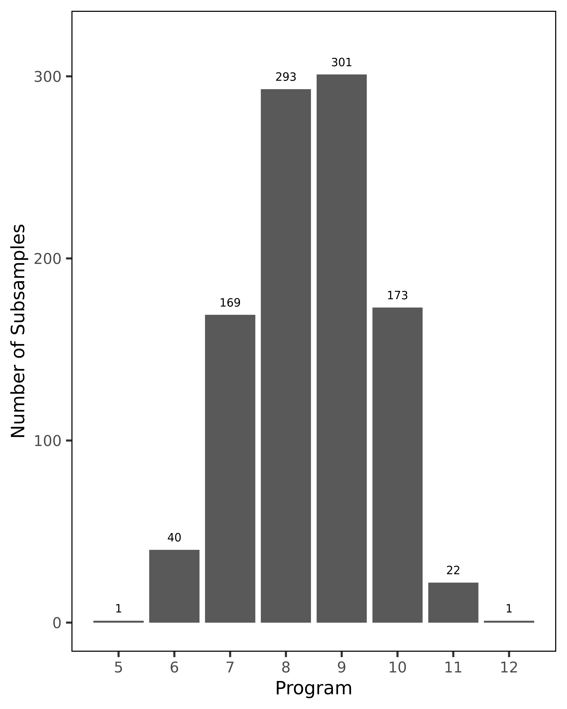
ggsave(filename=file.path(figures_directory, "SF6.num_inferred_programs_per_subsample.png"), num_inferred_programs_per_subsample, width = 3000, height = 4000, units = "px", dpi = 800)Assigning programs
I need to manually check what programs these are
# what possible clusters are here?
nc_programs <- length(table(cluster_assignments))
pclusts <- purrr::map(1:nc_programs, function(i){
X <- select_ks(cluster_assignments, i, yclust, samp = FALSE)
X <- rowMeans(X, na.rm = TRUE) |> as.matrix()
return(X)
}, .progress = TRUE) %>% setNames(paste0('cluster', 1:nc_programs))lapply(pclusts, function(x){
x %>%
data.table::as.data.table(keep.rownames = TRUE) %>%
setNames(c('tf_tissue', 'contribution')) %>%
dplyr::arrange(desc(contribution)) %>%
head(n=10)
})$cluster1
tf_tissue contribution
<char> <num>
1: ELF1_Liver 0.10957694
2: MYC_Liver 0.10829882
3: ETV4_Liver 0.10775863
4: CREB1_Liver 0.10080740
5: ATF1_Liver 0.09969215
6: ZEB1_Liver 0.09921132
7: NR2F6_Liver 0.09793412
8: NR2C2_Liver 0.09649152
9: ZBTB7A_Liver 0.09587191
10: BHLHE40_Liver 0.09576635
$cluster2
tf_tissue contribution
<char> <num>
1: CTCF_Pancreas 0.2366397
2: CTCF_Kidney 0.2051491
3: CTCF_Lung 0.2048021
4: CTCF_SkeletalMuscle 0.1969665
5: CTCF_Gingiva 0.1915214
6: CTCF_Heart 0.1915187
7: CTCF_UmbilicalVein 0.1913595
8: CTCF_Foreskin 0.1909289
9: CTCF_Breast 0.1898387
10: CTCF_Eye 0.1890907
$cluster3
tf_tissue contribution
<char> <num>
1: LEF1_BoneMarrow 0.1585612
2: NR4A1_BoneMarrow 0.1569377
3: ATF1_BoneMarrow 0.1568239
4: PKNOX1_BoneMarrow 0.1565033
5: JUND_BoneMarrow 0.1562869
6: BACH1_BoneMarrow 0.1534384
7: NR2C2_BoneMarrow 0.1514203
8: NR2F6_BoneMarrow 0.1502488
9: NR2F1_BoneMarrow 0.1475559
10: MYC_BoneMarrow 0.1464583
$cluster4
tf_tissue contribution
<char> <num>
1: SOX2_Colon 0.1691918
2: CLOCK_Colon 0.1651685
3: GLI2_Colon 0.1634363
4: DLX1_Colon 0.1578427
5: JUNB_Colon 0.1575730
6: ATF2_Colon 0.1486544
7: TAL1_Colon 0.1470376
8: MAFK_Colon 0.1340428
9: HOXB13_Colon 0.1290523
10: FOXP1_Colon 0.1283306
$cluster5
tf_tissue contribution
<char> <num>
1: STAT3_Cervix 0.07802967
2: PRDM1_Cervix 0.07509851
3: RXRA_Brain 0.07337799
4: RELA_Cervix 0.07189488
5: PRDM10_EmbryonicKidney 0.07131570
6: MAX_Cervix 0.07122938
7: MAZ_Cervix 0.07007870
8: MYC_Cervix 0.07007426
9: TFAP2A_Cervix 0.06969281
10: GFI1B_EmbryonicKidney 0.06964817
$cluster6
tf_tissue contribution
<char> <num>
1: REST_BoneMarrow 0.1220424
2: REST_Pancreas 0.1219035
3: REST_Embryo 0.1211680
4: REST_Blood 0.1207665
5: REST_Brain 0.1207463
6: REST_Endometrium 0.1194885
7: REST_Liver 0.1193201
8: REST_Cervix 0.1190921
9: REST_Lung 0.1177985
10: REST_EmbryonicKidney 0.1163969
$cluster7
tf_tissue contribution
<char> <num>
1: FOXM1_Blood 0.1717726
2: STAT3_Blood 0.1590103
3: BCL11A_Blood 0.1569247
4: USF2_Blood 0.1546740
5: TBP_Blood 0.1534848
6: MEF2C_Blood 0.1533008
7: STAT5A_Blood 0.1496834
8: CUX1_Blood 0.1446968
9: STAT3_BoneMarrow 0.1427238
10: CREB1_Blood 0.1409819
$cluster8
tf_tissue contribution
<char> <num>
1: ERG_Breast 0.10530756
2: RUNX1_Kidney 0.10161057
3: HIF1A_Bone 0.10050637
4: SOX4_FetalLung 0.09942380
5: MYC_MammaryGland 0.09734825
6: FLI1_Pleura 0.09225517
7: ASCL1_Skin 0.09218556
8: FLI1_BoneMarrow 0.09104441
9: ERG_BoneMarrow 0.09027778
10: RUNX1_Cordblood 0.08845777
$cluster9
tf_tissue contribution
<char> <num>
1: FOXA1_Breast 0.1472746
2: FOXA1_MammaryGland 0.1316056
3: GATA3_Breast 0.1292686
4: FOXP1_Prostate 0.1244588
5: ESRRA_Breast 0.1226443
6: AR_Breast 0.1193505
7: ETV1_Prostate 0.1172864
8: NANOG_Prostate 0.1163233
9: RUNX1_Prostate 0.1155443
10: GATA2_Prostate 0.1150208library(paletteer)
# paletteer_d("MoMAColors::Warhol")
# paletteer_d("tidyquant::tq_dark")# functional_programs <- LETTERS
# manually_chosen_colors <- c("#328C97FF", "#A5506DFF", "#2A9D3DFF", "#DB7003FF", "#A30000FF", "#916C37FF", "#97D1D9FF", "#FF0066FF", "#FBA600FF", 'grey')
manually_chosen_colors <- paletteer::paletteer_d("MoMAColors::Klein")
# create colors for programs
num_programs <- 9
std_palette <- manually_chosen_colors #RColorBrewer::brewer.pal(n = 9, name = "Set1") #paletteer_d("tidyquant::tq_dark") # RColorBrewer::brewer.pal(n = 12, name = "Set3")
if(length(std_palette) < num_programs){
col_vector <- colorRampPalette(std_palette)(num_programs)
program_colors <- col_vector
} else {
col_vector <- std_palette[1:num_programs]
set.seed(2024)
program_colors <- col_vector #sample(col_vector, num_programs)
}
#RColorBrewer::brewer.pal(length(uniq_tissues), "Dark2")# program_names <- c('Liver', 'Program 8', 'Program 9', 'CTCF', 'REST', 'Bone marrow', 'Blood', 'Hormone receptors', 'Colon', 'RFX5-REST')
program_names <- c('Liver', 'CTCF', 'Bone marrow', 'Colon', 'Program 1', 'REST', 'Blood', 'Program 2', 'Hormone receptors')
#c('Liver', 'Program 1', 'REST', 'Program 2', 'Bone marrow', 'Blood', 'Hormone receptors', 'CTCF', 'Colon', 'Program 3', 'Program 4')
program_names <- setNames(program_names, paste0('cluster', 1:length(program_names)))
# reordering the programs
# names(functional_programs) <- glue::glue('k{1:length(functional_programs)}')
# program_names <- program_names[c('cluster8', 'cluster1', 'cluster4', 'cluster5', 'cluster6', 'cluster7', 'cluster9', 'cluster2', 'cluster3', 'cluster10')]
names(program_colors) <- names(program_names)aa <- as.data.table(program_names, keep.rownames = 'cluster')
bb <- as.data.table(program_colors, keep.rownames = 'cluster')
program_meta <- merge(aa, bb, by.x = 'cluster', by.y = 'cluster')
program_meta$program <- gsub('cluster', 'k', program_meta$cluster)
colnames(program_meta) <- c('cluster', 'name', 'color', 'program')
program_meta <- program_meta %>% dplyr::arrange(match(cluster, names(program_names)))
program_metaKey: <cluster>
cluster name color program
<char> <char> <colors> <char>
1: cluster1 Liver #FF4D6FFF k1
2: cluster2 CTCF #579EA4FF k2
3: cluster3 Bone marrow #DF7713FF k3
4: cluster4 Colon #F9C000FF k4
5: cluster5 Program 1 #86AD34FF k5
6: cluster6 REST #5D7298FF k6
7: cluster7 Blood #81B28DFF k7
8: cluster8 Program 2 #7E1A2FFF k8
9: cluster9 Hormone receptors #2D2651FF k9data.table::fwrite(program_meta, file.path(metadata_directory, "prca.programs.metadata.txt"), sep = '\t', quote = F, col.names = T, row.names = F)Heatmap of some 100 programs
Cluster of programs
dt.clust1000 <- clust1000 %>% dplyr::mutate(cluster = paste0('cluster', cluster)) %>% dplyr::full_join(program_meta, by = 'cluster') %>% dplyr::select(subprogram, cluster, consensus_program = name, program)
head(dt.clust1000) subprogram cluster consensus_program program
<char> <char> <char> <char>
1: iter1_k1 cluster1 Liver k1
2: iter1_k2 cluster2 CTCF k2
3: iter1_k3 cluster3 Bone marrow k3
4: iter1_k4 cluster4 Colon k4
5: iter1_k5 cluster5 Program 1 k5
6: iter1_k6 cluster6 REST k6od <- dt.clust1000$cluster
names(od) <- dt.clust1000$consensus_program
od <- od[unique(names(od))]
lvs <- od #c(od[!names(od) %in% c('REST', 'RFX5-REST')], od[names(od) %in% c('REST', 'RFX5-REST')])
# od <- gtools::mixedorder(program_meta$program)
pm <- names(od)
dt.assign <- dt.clust1000 %>% dplyr::filter(subprogram %in% rownames(ycorr_mat)) %>%
dplyr::arrange(match(subprogram, rownames(ycorr_mat))) %>%
dplyr::mutate(consensus_program = factor(consensus_program, levels = names(lvs))) %>%
dplyr::arrange(match(cluster, lvs))
program_meta <- program_meta %>% dplyr::arrange(match(name, names(lvs)))
ycorr <- ycorr_mat[dt.assign$subprogram, dt.assign$subprogram]program_colors <- program_meta$color
names(program_colors) <- program_meta$names
panel_fun = function(index, nm) {
grid.rect(gp = gpar(fill = program_colors[nm], col = "black"))
grid.text(nm, 0.5, 0.5)
}
ha_row <- ComplexHeatmap::rowAnnotation(program = anno_block(
gp = gpar(fill = program_meta$color),
labels = program_meta$name,
show_name = FALSE,
labels_gp = gpar(fontsize = 9, fontfamily = 'Helvetica'),
panel_fun = panel_fun,
width = unit(5, "cm")
))
# ha_col <- ComplexHeatmap::HeatmapAnnotation(program = anno_block(
# gp = gpar(fill = program_meta$color),
# labels = levels(dt.assign$consensus_program),
# show_name = FALSE,
# labels_gp = gpar(fontsize = 9, fontfamily = 'Helvetica'),
# panel_fun = panel_fun,
# width = unit(5, "cm")
# ))# xx <- dt.assign %>% dplyr::filter(consensus_program %in% c('REST program', 'RFX5-REST program'))
# yx <- ycorr_mat[dt.assign$subprogram, dt.assign$subprogram]
# identical(rownames(yx), colnames(yx))hmap <- ComplexHeatmap::Heatmap(ycorr, col = c('blue', 'white', 'red'), show_row_names = FALSE, show_column_names = FALSE, show_row_dend = FALSE,
show_column_dend = FALSE, cluster_rows = FALSE, cluster_columns = FALSE,
heatmap_legend_param = list(
title = expression(R),
title_gp = gpar(fontsize = 12, fontface = "bold", fontfamily = 'Helvetica'),
legend_height = unit(10, "cm")
),
left_annotation = ha_row, row_split = dt.assign$consensus_program, row_gap = unit(0.5, 'mm'), row_title = NULL, use_raster = TRUE, raster_resize = TRUE, raster_device = "png") %>%
ComplexHeatmap::draw() %>%
grid.grabExpr() %>%
cowplot::ggdraw() %>%
ggplotify::as.ggplot()'magick' package is suggested to install to give better rasterization.
Set `ht_opt$message = FALSE` to turn off this message.ggsave(file.path(figures_directory, "SF6.subsamples.cluster1000.png"), hmap, width = 18000, height = 18000, units = 'px', dpi = 800)yclust_ordered <- yclust[rownames(ycorr), ]
hmap_programs <- ComplexHeatmap::Heatmap(yclust_ordered, col = c('white', 'red'), show_row_names = FALSE, show_column_names = FALSE, show_row_dend = FALSE,
show_column_dend = FALSE, cluster_rows = FALSE, cluster_columns = FALSE,
heatmap_legend_param = list(
title = expression(Contribution),
title_gp = gpar(fontsize = 12, fontface = "bold", fontfamily = 'Helvetica'),
legend_height = unit(10, "cm")
),
left_annotation = ha_row, row_split = dt.assign$consensus_program, row_gap = unit(0.5, 'mm'), row_title = NULL,
use_raster = TRUE,
raster_resize = TRUE,
raster_device = "png") %>%
ComplexHeatmap::draw() %>%
grid.grabExpr() %>%
cowplot::ggdraw() %>%
ggplotify::as.ggplot()'magick' package is suggested to install to give better rasterization.
Set `ht_opt$message = FALSE` to turn off this message.ggsave(file.path(figures_directory, "SF6.subsamples.programs.cluster1000.png"), hmap_programs, width = 12000, height = 12000, units = 'px', dpi = 800)How many programs assigned to a similar program
nps <- purrr::map(1:length(program_names), function(i){
X <- select_ks(cluster_assignments, i, yclust, samp = FALSE)
ncol(X)
}, .progress = TRUE) %>% unlist() %>% setNames(paste0('cluster', 1:length(program_names)))
names(nps) <- program_meta$name[match(names(nps), program_meta$cluster)]
nps <- sort(nps, decreasing = TRUE)
nps <- nps[!is.na(names(nps))]num_program_assigned <- ggplot() +
aes(x = reorder(names(nps), -nps), y = nps) +
geom_col() +
theme_simple +
labs(x = 'Program', y = 'Number of programs assigned') +
theme(axis.text.x = element_text(angle = 90, hjust = 1)) +
geom_text(aes(label=nps), vjust = -1, size = 3) +
theme_simple
num_program_assigned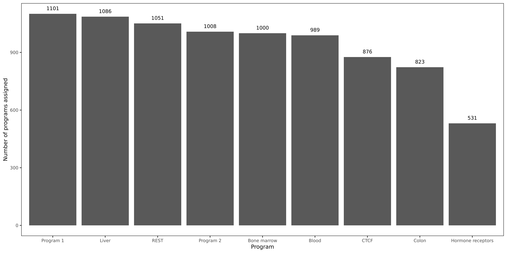
ggsave(file.path(figures_directory, "suppl.figure6H.png"), num_program_assigned, width = 10000, height = 4000, units = 'px', dpi = 800)Assigning program names to the inferred programs
pclusts <- purrr::map(1:length(program_names), function(i){
X <- select_ks(cluster_assignments, i, yclust, samp = FALSE)
X <- rowMeans(X, na.rm = TRUE) |> as.matrix()
return(X)
}, .progress = TRUE) %>% setNames(paste0('cluster', 1:length(program_names)))# rearrange program_meta
program_meta <- program_meta %>%
dplyr::arrange(match(name, c('Hormone receptors',
'Liver', 'Blood', 'Bone marrow', 'Colon', 'CTCF', 'REST', 'Program 1', 'Program 2')))
program_metaKey: <cluster>
cluster name color program
<char> <char> <colors> <char>
1: cluster9 Hormone receptors #2D2651FF k9
2: cluster1 Liver #FF4D6FFF k1
3: cluster7 Blood #81B28DFF k7
4: cluster3 Bone marrow #DF7713FF k3
5: cluster4 Colon #F9C000FF k4
6: cluster2 CTCF #579EA4FF k2
7: cluster6 REST #5D7298FF k6
8: cluster5 Program 1 #86AD34FF k5
9: cluster8 Program 2 #7E1A2FFF k8pclusts <- pclusts[program_meta$cluster]
names(pclusts) <- program_meta$name
names(pclusts)[1] "Hormone receptors" "Liver" "Blood"
[4] "Bone marrow" "Colon" "CTCF"
[7] "REST" "Program 1" "Program 2" # pclusts <- pclusts[program_meta$name]
saveRDS(pclusts, file.path(files_directory, "PrCa.transcription_factor.clusters.rds"))# inner join the pclusts
# purrr::map(pclusts, function(x){
# x %>%
# data.table::as.data.table(keep.rownames = TRUE) %>%
# setNames(c('tf_tissue', 'contribution')) %>%
# dplyr::arrange(desc(contribution)) %>%
# head(n=10)
# }) %>% purrr::reduce(function(x, y){
# dplyr::full_join(x, y, by = 'tf_tissue')
# }) %>% dplyr::arrange(desc(contribution)) %>% View()# pclust is already averages
av_pps <- lapply(names(pclusts), function(each_cluster){
dt <- pclusts[[each_cluster]] %>%
data.table::as.data.table(keep.rownames = TRUE) %>%
setNames(c('tf_tissue', 'contribution')) %>%
dplyr::arrange(desc(contribution)) %>%
head(n=10) %>%
dplyr::mutate(contribution = round(contribution, 2))
prcolor <- dplyr::filter(program_meta, name == each_cluster)$color
# create gradient
climit <- nrow(dt) + 5
cgradient <- colorRampPalette(c(prcolor, "white"))(climit)
cgradient <- cgradient[1:(nrow(dt))]
pname <- dplyr::filter(program_meta, name == each_cluster)$name
# if(pname == 'RFX5-REST'){
# pname <- ''
# }
dt %>%
tidyr::separate(tf_tissue, c('tf', 'tissue'), sep = '_', remove = F) %>%
ggplot(aes(y = reorder(tf_tissue, -contribution), x = contribution, fill = tf_tissue, group = tissue)) +
theme_simple +
geom_col(col = 'black', width = 1, fill = cgradient) +
labs(x = 'Consensus Contribution', y = 'Driver', title = pname) +
scale_y_discrete(
labels = function(x) {data.table::tstrsplit(x, "_")[[1]]},
limits = rev, expand = c(0, 0)
) +
scale_x_continuous(breaks = scales::pretty_breaks(n = 5)) +
guides(fill = "none") +
scale_fill_discrete(drop=F) +
geom_text(aes(label = tissue, group = tf_tissue), size = 2, position = position_identity(), hjust = 1.5)
# position = position_dodge(width = 1), inherit.aes = TRUE, hjust = 5
})
names(av_pps) <- names(pclusts)# av_pps$`Hormone receptors`program_plots <- patchwork::wrap_plots(plotlist = av_pps, ncol = 3, axes = 'collect') +
patchwork::plot_annotation(title = '')
# program_plots
ggsave(file.path(figures_directory, "figure6B.png"), program_plots, width = 7000, height = 10000, units = 'px', dpi = 800)# png("/beagle3/haky/users/temi/projects/Enpact/figures/figure6B.png", width = 18000, height = 4000, res = 800, units = 'px')
# grid::grid.draw(program_plots)
# dev.off()#FIGURE_6$program_plots <- program_plotspmats <- do.call('cbind', pclusts)
colnames(pmats) <- paste0('k', 1:length(program_names))
pmats <- as.data.frame(pmats) %>%
tibble::rownames_to_column('TF_tissue')
dim(pmats); pmats[1:5, 1:5][1] 700 10 TF_tissue k1 k2 k3 k4
1 AR_Breast 0.119350476 0.01161028 0.003438763 0.0002701777
2 AR_EmbryonicKidney 0.066562207 0.01680078 0.002239279 0.0005151786
3 AR_MammaryGland 0.096197255 0.03238763 0.004609887 0.0006733026
4 AR_Prostate 0.081861675 0.02524824 0.002386438 0.0034566276
5 ARNT_BoneMarrow 0.007966139 0.01903242 0.002126842 0.1144926794SUPPLEMENTARY_TABLES[[length(SUPPLEMENTARY_TABLES) + 1]] <- pmatsdata.table::fwrite(pmats, file = file.path(files_directory, 'prca.tf.clusters.txt'), row.names = TRUE, col.names = TRUE, sep = '\t', quote = F)Distribution of TF/tissue contribution per program
hist_pps <- lapply(names(pclusts), function(each_cluster){
dt <- create_cluster_data(pclusts[[each_cluster]], average=TRUE) %>%
dplyr::arrange(desc(contribution))
prcolor <- dplyr::filter(program_meta, name == each_cluster)$color
dt <- dt %>%
tidyr::separate(tf_tissue, c('tf', 'tissue'), sep = '_', remove = F)
dt %>%
ggplot(aes(x = contribution)) +
theme_simple +
geom_histogram(fill = prcolor, boundary = min(dt$contribution), col = 'black') +
labs(x = 'Consensus Contribution', y = 'Driver', title = each_cluster) +
guides(fill = "none") +
scale_x_continuous(limits = c(0,1), oob = scales::squish)
})histogram_avg_contributions <- patchwork::wrap_plots(hist_pps, ncol = 3, axes = 'collect')
histogram_avg_contributions`stat_bin()` using `bins = 30`. Pick better value with `binwidth`.
`stat_bin()` using `bins = 30`. Pick better value with `binwidth`.
`stat_bin()` using `bins = 30`. Pick better value with `binwidth`.
`stat_bin()` using `bins = 30`. Pick better value with `binwidth`.
`stat_bin()` using `bins = 30`. Pick better value with `binwidth`.
`stat_bin()` using `bins = 30`. Pick better value with `binwidth`.
`stat_bin()` using `bins = 30`. Pick better value with `binwidth`.
`stat_bin()` using `bins = 30`. Pick better value with `binwidth`.
`stat_bin()` using `bins = 30`. Pick better value with `binwidth`.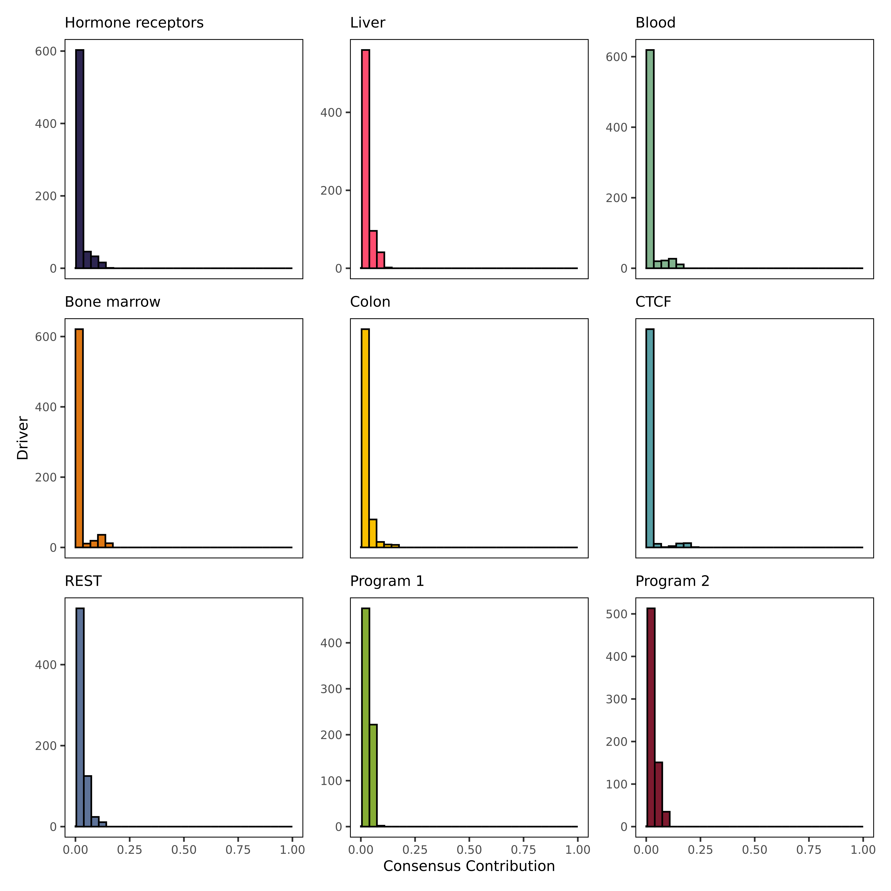
ggsave(file.path(figures_directory, "suppl.figure6I.png"), histogram_avg_contributions, width = 8000, height = 8000, units = 'px', dpi = 800)`stat_bin()` using `bins = 30`. Pick better value with `binwidth`.
`stat_bin()` using `bins = 30`. Pick better value with `binwidth`.
`stat_bin()` using `bins = 30`. Pick better value with `binwidth`.
`stat_bin()` using `bins = 30`. Pick better value with `binwidth`.
`stat_bin()` using `bins = 30`. Pick better value with `binwidth`.
`stat_bin()` using `bins = 30`. Pick better value with `binwidth`.
`stat_bin()` using `bins = 30`. Pick better value with `binwidth`.
`stat_bin()` using `bins = 30`. Pick better value with `binwidth`.
`stat_bin()` using `bins = 30`. Pick better value with `binwidth`.Enrichment test of program names
# https://onlinelibrary.wiley.com/doi/10.1002/pro.3496
nuc_recep <- data.table::fread(file.path(metadata_directory, "nuclear_receptors.txt"), fill=FALSE)
length(nuc_recep$`Gene Name`)[1] 49prca_tf_list <- c("AR", "NKX3.1", "FOXA1", "ERG", "ETV1", "ETV4", "ETV5",
"SPDEF", "MYC", "HOXB13", "SRF", "RUNX2", "GATA2", "GATA3",
"TP53", "E2F1", "HIF1A", "SMAD4", "STAT3", "CEBPB", "NR3C1",
"KLF4", "SOX9", "BRCA1", "BRCA2", "YY1", "TLE3", "ZBTB7A", "ELK1")meta_assignments <- pclusts$`Liver` %>% as.data.table(keep.rownames = 'tf_tissue') %>% tidyr::separate(tf_tissue, c('tf', 'tissue'), sep = '_', remove = F) %>% dplyr::select(-V1) %>% dplyr::mutate(is_liver = ifelse(tissue == 'Liver', 1, 0),
is_bone_marrow = ifelse(tissue == 'BoneMarrow', 1, 0),
is_blood = ifelse(tissue == 'Blood', 1, 0),
is_colon = ifelse(tissue == 'Colon', 1, 0),
is_ctcf = ifelse(tf == 'CTCF', 1, 0),
is_rest = ifelse(tf == 'REST', 1, 0),
is_prostate = ifelse(tissue == 'Prostate', 1, 0),
is_breast = ifelse(tissue %in% c('Breast', 'MammaryGland'), 1, 0),
is_prostate_or_breast = ifelse(tissue %in% c('Prostate', 'Breast', 'MammaryGland'), 1, 0),
is_nuclear_receptor = ifelse(tf %in% nuc_recep$`Gene Name`, 1, 0),
is_prca_tf = ifelse(tf %in% prca_tf_list, 1, 0))
meta_assignments[1:5, ] tf_tissue tf tissue is_liver is_bone_marrow is_blood
1 AR_Breast AR Breast 0 0 0
2 AR_EmbryonicKidney AR EmbryonicKidney 0 0 0
3 AR_MammaryGland AR MammaryGland 0 0 0
4 AR_Prostate AR Prostate 0 0 0
5 ARNT_BoneMarrow ARNT BoneMarrow 0 1 0
is_colon is_ctcf is_rest is_prostate is_breast is_prostate_or_breast
1 0 0 0 0 1 1
2 0 0 0 0 0 0
3 0 0 0 0 1 1
4 0 0 0 1 0 1
5 0 0 0 0 0 0
is_nuclear_receptor is_prca_tf
1 1 1
2 1 1
3 1 1
4 1 1
5 0 0test_groups <- c('is_liver', 'is_bone_marrow', 'is_blood', 'is_colon', 'is_ctcf', 'is_rest', 'is_prostate', 'is_breast', 'is_prostate_or_breast', 'is_nuclear_receptor', 'is_prca_tf')cluster_ttests <- purrr::map(names(pclusts), function(each_cluster){
dt <- pclusts[[each_cluster]] %>% as.data.table(keep.rownames = 'tf_tissue') %>%
dplyr::inner_join(meta_assignments, by = c('tf_tissue' = 'tf_tissue')) %>%
dplyr::rename(contribution = V1) %>%
as.data.table()
test <- purrr::map(test_groups, function(each_group){
test <- t.test(dt$contribution ~ dt[[each_group]])
return(test$p.value)
})
test <- as.numeric(test)
names(test) <- test_groups
return(test)
}) %>%
do.call('rbind', .)
rownames(cluster_ttests) <- names(pclusts)
cluster_ttests <- -log10(cluster_ttests)
cluster_ttests is_liver is_bone_marrow is_blood is_colon is_ctcf
Hormone receptors 0.2588297 13.1279525 18.739987 0.9668917 4.0566061
Liver 24.6306820 6.2186307 8.787715 1.4739843 6.7879590
Blood 16.6299639 0.7192689 22.894369 16.0956397 5.9033062
Bone marrow 19.8161395 26.2042763 3.447957 16.1293871 12.6548818
Colon 2.6646708 8.3421954 7.388687 5.9812111 0.3249707
CTCF 0.4051567 2.7474491 3.334808 0.2288765 13.4670504
REST 3.6339094 6.3498385 5.982799 1.9547045 5.9058397
Program 1 16.5202620 27.5579085 21.952261 2.0598060 6.7441136
Program 2 5.5196476 1.6928895 1.708415 4.6539235 2.5690734
is_rest is_prostate is_breast is_prostate_or_breast
Hormone receptors 9.3912220 5.48667780 10.5773027 16.8023984
Liver 4.1753620 0.06277483 0.4411726 0.2917123
Blood 21.7817353 8.98925494 14.8518600 15.2564637
Bone marrow 20.4630795 18.14677963 5.5824039 8.7582005
Colon 0.4249838 1.74968113 1.5697814 2.6436017
CTCF 10.4557033 0.97392512 0.2543340 0.5500319
REST 6.1060279 2.84791581 9.9848853 11.8293460
Program 1 6.5602063 1.89771381 1.4078183 2.4733074
Program 2 0.4846772 0.21149583 1.7429919 1.3182981
is_nuclear_receptor is_prca_tf
Hormone receptors 2.75773110 3.38690487
Liver 0.04591755 0.47868826
Blood 0.05298426 0.01774764
Bone marrow 0.10811990 1.99377468
Colon 0.05246916 0.98335205
CTCF 4.53561973 6.16610127
REST 0.20553737 2.60232821
Program 1 0.04087960 2.01635167
Program 2 0.02601400 0.37447081ComplexHeatmap::Heatmap(cluster_ttests, col = colorRampPalette(c("white", "red"))(10), border = 'black', cluster_rows = F, cluster_columns = F, column_names_rot = 90, row_names_gp = gpar(fontsize = 7, fontfamily = 'Helvetica'), column_names_gp = gpar(fontsize = 7, fontfamily = 'Helvetica'), rect_gp = gpar(col = "black", lwd = 1),
cell_fun = function(j, i, x, y, width, height, fill) {
grid.text(sprintf("%.1f", cluster_ttests[i, j]), x, y, gp = gpar(fontsize = 10))
}, heatmap_legend_param = list(title = "-log10\n(p-value)"))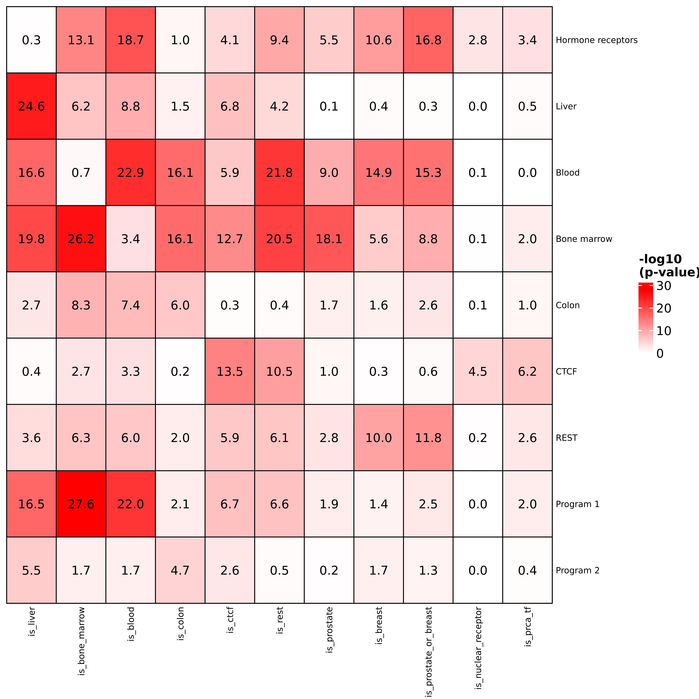
Assigning loci to programs and GWAS
library(ggmanh)program_meta <- data.table::fread(file.path(metadata_directory, 'prca.programs.metadata.txt'))
program_meta cluster name color program
<char> <char> <char> <char>
1: cluster1 Liver #FF4D6FFF k1
2: cluster2 CTCF #579EA4FF k2
3: cluster3 Bone marrow #DF7713FF k3
4: cluster4 Colon #F9C000FF k4
5: cluster5 Program 1 #86AD34FF k5
6: cluster6 REST #5D7298FF k6
7: cluster7 Blood #81B28DFF k7
8: cluster8 Program 2 #7E1A2FFF k8
9: cluster9 Hormone receptors #2D2651FF k9loci_assignment <- file.path(tfxcan_project_directory, 'data/tenerife/consensus', 'prca_risk.loci_assignments.1000samples.L2_norm.txt.gz')dt_loci_assignments <- data.table::fread(loci_assignment)
dim(dt_loci_assignments)[1] 140 10lmats <- dt_loci_assignments %>%
tibble::column_to_rownames('locus') %>%
setNames(paste0('k', 1:ncol(.))) %>%
tibble::rownames_to_column('locus')SUPPLEMENTARY_TABLES[[length(SUPPLEMENTARY_TABLES) + 1]] <- lmatsdata.table::fwrite(lmats, file = file.path(files_directory, 'prca.loci.assignments.txt'), row.names = TRUE, col.names = TRUE, sep = '\t', quote = F)gwas_clusters <- dt_loci_assignments %>% tibble::column_to_rownames('locus') %>% as.matrix()# assign each locus to a program by the maximum
loci_designation <- gwas_clusters %>%
apply(1, function(x){
a <- which.max(x)
b <- max(x)
c(a, b)
}) %>%
t() %>%
as.data.table(keep.rownames = 'locus')
colnames(loci_designation) <- c('locus', 'designated_program', 'contribution')
loci_designation <- loci_designation %>%
dplyr::mutate(designated_program = paste0('k', designated_program))
loci_designation[1:5, ] locus designated_program contribution
<char> <char> <num>
1: chr21:41525209 k6 3.030481
2: chr2:20678345 k6 5.030883
3: chr2:63464786 k2 4.866637
4: chr8:23676110 k5 4.832056
5: chr14:36669089 k6 3.523764How many loci are assigned to each program?
ldt_summary <- loci_designation %>%
dplyr::group_by(designated_program) %>%
dplyr::summarize(n_loci = n()) %>%
dplyr::arrange(desc(n_loci)) %>%
dplyr::inner_join(program_meta, by = c('designated_program' = 'program')) %>%
dplyr::select(name, n_loci)ggplot(ldt_summary, aes(x = stats::reorder(name, -n_loci), y = n_loci)) +
geom_col() +
theme_simple +
labs(x = 'Program', y = 'Number of Loci') +
theme(axis.text.x = element_text(angle = 45, hjust = 1)) +
geom_text(aes(label = n_loci), vjust = -0.5, size = 3)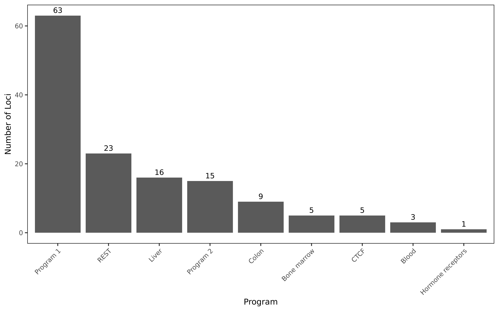
Annotating the manhattan plot
devtools::source_gist("https://gist.github.com/TemiPete/c19ee6999f017840b423f7c3f013379a")ℹ Sourcing gist "c19ee6999f017840b423f7c3f013379a"
ℹ SHA-1 hash of file is "ce96ec382ccd16242b0e7aee05df4f69a8ce4de9"Modify the program metadata
# rearrange program_meta
program_meta <- program_meta %>%
dplyr::arrange(match(name, c('Hormone receptors',
'Liver', 'Blood', 'Bone marrow', 'Colon', 'CTCF', 'REST', 'Program 1', 'Program 2')))
colormap <- setNames(as.character(program_meta$color), program_meta$name)
# Add 'none' to colormap
# #4D4D4D #BEBEBE80
colormap <- c(colormap, 'none_odd' = "#BEBEBE80", 'none_even' = '#4D4D4D')
chrom_lengths <- get_chrom_lengths('hg38')
xmax <- get_total_length(chrom_lengths)
x_breaks <- get_x_breaks(chrom_lengths)mandt <- data.table::fread(file.path(metadata_directory, "tfxcan.prca_gwas.txt.gz"), sep = '\t', quote = F, header = T)ppdt <- mandt %>%
dplyr::rename(chrom = chromosome, pos = position, y = log10pval) %>%
dplyr::mutate(name = as.character(name)) %>%
dplyr::mutate(name_chrom = dplyr::case_when(
name == 'none' & chrom %in% seq(1, 22, by = 2) ~ 'none_odd',
name == 'none' & chrom %in% seq(0, 22, by = 2) ~ 'none_even',
TRUE ~ name
)) %>%
dplyr::mutate(chrom = paste0('chr', chrom), fill = color) %>%
add_cumulative_pos('hg38') %>%
dplyr::mutate(name_chrom = factor(name_chrom, levels = c(program_meta$name, 'none_even', 'none_odd')), contribution = ifelse(is.na(contribution), 0, contribution))
chromosome_levels <- paste0('chr', seq(1, 22))
chrom_breaks <- ppdt %>%
dplyr::group_by(chrom) %>%
dplyr::summarize(center = mean(cumulative_pos)) %>%
dplyr::arrange(match(chrom, chromosome_levels)) %>%
dplyr::mutate(chrom = gsub('chr', '', chrom)) %>%
dplyr::mutate(chrom = as.numeric(chrom))
x_breaks <- setNames(chrom_breaks$center, chrom_breaks$chrom)man.g.colors <- ppdt %>%
ggplot2::ggplot(aes(x=cumulative_pos, y=y)) +
geom_point(aes(size = contribution, color = name_chrom), shape = 16, position = position_jitter(0.5)) +
theme_classic() +
scale_x_continuous(
limits=c(0, xmax),
expand=c(0.01, 0),
breaks=x_breaks,
labels=names(x_breaks),
name='Chromosome') +
scale_y_continuous(
expand=c(0.01, 0),
name=expression('-log'[10]*'(P)'),
limit = c(0, 200), breaks = scales::pretty_breaks(n = 19)) +
scale_color_manual(values = colormap, labels = c(program_meta$name, 'Not tested', 'Not tested')) +
scale_shape_identity() +
scale_size_continuous(range = range(ppdt$pch_size)) +
guides(
color = guide_legend(title = "Program", override.aes = list(size = 2, shape = 16), color=guide_legend(ncol=2)),
size = guide_legend(title = "SNP effect \non Program")
) +
geom_hline(yintercept = -log10(5e-8), linetype = 'dashed', color = 'grey') + theme_simple +
theme(legend.box = "horizontal", legend.position = "bottom", legend.key.width = unit(0.5, "cm"), # Adjust width of legend key
legend.key.height = unit(0.2, "cm")) # Adjust height of legend key)FIGURE_6$annotated_manhattan <- man.g.colorsggsave(file.path(figures_directory, 'figure6C.png'), man.g.colors, width = 15000, height = 5000, dpi = 800, units = 'px')For the plot of the programs, I want to show only a few programs
names_to_show <- c('Hormone receptors', 'Liver', 'Bone marrow', 'REST')main_programs <- patchwork::wrap_plots(plotlist = av_pps[names_to_show], nrow = 1, axes = 'collect') +
patchwork::plot_annotation(title = '')
supplementary_programs <- patchwork::wrap_plots(plotlist = av_pps[!names(av_pps) %in% names_to_show], nrow = 2, axes = 'collect') +
patchwork::plot_annotation(title = '')
FIGURE_6$program_plots <- main_programsfigure_6 <- rlang::duplicate(FIGURE_6)
# use ggplotify to convert to ggplot
figure_6 <- lapply(figure_6, ggplotify::as.ggplot)length(figure_6)[1] 3# b1 <- patchwork::wrap_plots(figure_6$tenerife_plots)
# b2 <- figure_6$program_plots + plot_layout(ncol = 1, widths = c(1))
# upperleft_panel <- figure_6$tenerife_plots
# lowerleft_panel <- figure_6$annotated_manhattan
# lower_panel <- figure_6$annotated_manhattan f6 <- patchwork::wrap_plots(figure_6$tenerife_plots, figure_6$program_plots, figure_6$annotated_manhattan, nrow = 3) + plot_layout(heights = c(0.5, 0.3, 0.4), design =
'AA
BB
CC') +
plot_annotation(tag_levels = list(c('A', 'B', 'C')),
theme = theme(plot.tag = element_text(size = 10.6, family = 'Helvetica', face = 'plain')))
ggsave(file.path(figures_directory, "figure6.png"), f6, width = 7500, height = 9000, dpi = 800, units = 'px')
# bottompanel <- figure_6$program_plots + plot_layout(nrow = 1)ggsave(file.path(figures_directory, 'SF6.other_prca_tfxcan_programs.png'), supplementary_programs, width = 7000, height = 3000, dpi = 800, units = 'px')# f6 <- patchwork::wrap_plots(toppanel, bottompanel, nrow = 3) + plot_layout(heights = c(1, 1, 1)) +
# plot_annotation(tag_levels = list(c('A', 'C', 'B')),
# theme = theme(plot.tag = element_text(size = 10.6, family = 'Helvetica', face = 'plain')))f6
#save f6
# ggsave('/beagle3/haky/users/temi/projects/Enpact/figures/figure6.png', f6, width = 10000, height = 20000, dpi = 800, units = 'px')
# ggsave('/beagle3/haky/users/temi/projects/Enpact/figures/figure6.pdf', f6, units = 'px')STRING PPI
library(ggraph)
library(tidygraph)# tfxcan_project_directory <- '/beagle3/haky/users/temi/projects/TFXcan'theme_simple_graph <- theme_graph() + theme(
panel.border = element_blank(),
panel.grid.major = element_blank(),
panel.grid.minor = element_blank(),
plot.title = element_text(family = 'Helvetica', colour = 'black', size = 9.33, face = 'plain'),
text=element_text(size=9.33, colour = 'black', family = 'Helvetica', face = 'plain'),
axis.text = element_blank(),
axis.text.x = element_blank()
)dt_enrichment <- data.table::fread(file.path(tfxcan_project_directory, "experiments/validation/tfxcan_programs.enrichment.tsv"))
dt_interactions <- data.table::fread(file.path(tfxcan_project_directory, "experiments/validation/tfxcan_programs.interactions.tsv"))
dt_stringIDs <- data.table::fread(file.path(tfxcan_project_directory, "experiments/validation/tfxcan_programs.stringIDsmapped.tsv"))
dt_nonInteractors <- data.table::fread(file.path(tfxcan_project_directory, "experiments/validation/tfxcan_programs.nonInteractors.tsv"))
dt.ppi <- dt_interactions %>% dplyr::rename(from = preferredName_A, to = preferredName_B)# split each into a graph
graph_objects <- split(dt.ppi, dt.ppi$program) %>% purrr::map(as_tbl_graph)
gnames <- names(graph_objects)
# add the nodes that are non interacting
graph_objects <- purrr::map(names(graph_objects), function(gg){
if(gg %in% colnames(dt_nonInteractors)){
addthis <- dt_nonInteractors %>% pull(.data[[gg]]) %>% unique()
ggg <- graph_objects[[gg]] %>% igraph::add_vertices(nv = length(addthis), name = addthis)
return(ggg)
}
return(graph_objects[[gg]])
})
names(graph_objects) <- gnamesnames(graph_objects)[1] "Blood" "Bone marrow" "Colon"
[4] "Hormone receptors" "Liver" "Program 1"
[7] "Program 2" "REST" ppi_graphs <- purrr::map(names(graph_objects), function(pname){
if(pname == 'CTCF'){return(NULL)} # remove CTCF; it is just one protein
pdt <- dt_enrichment %>% dplyr::filter(program == pname)
nproteins <- igraph::gorder(graph_objects[[pname]])
pwrite <- ifelse(pdt$pvalue %in% c(0L, 2.22e-16), "p < 2.22e-16", glue("p = {pdt$pvalue}"))
heading <- glue("{pdt$program}\nTranscription factors: {nproteins}\nInteractions: {pdt$interactions}")
ggraph(graph_objects[[pname]], layout = 'stress') +
geom_edge_link(color = 'white') +
geom_node_point(size = 5, color = 'steelblue') +
geom_node_text(aes(label = name), repel = TRUE) +
geom_edge_link(aes(width = score), color = 'darkgreen', alpha = 0.5) +
scale_edge_width(range = c(0.5,1), name="STRING PPI score") +
labs(title = heading) +
#theme(plot.title = element_text(family = "Times", size = 25, face = "plain"))
theme_simple_graph
})
names(ppi_graphs) <- names(graph_objects)
ppi_graphs <- Filter(Negate(is.null), ppi_graphs)length(ppi_graphs)[1] 8# gplot <- patchwork::wrap_plots(ppi_graphs, nrow = 3)
# ggsave(file.path(figures_directory, "SF7.tfxcan.tf.interactions.png"), gplot, width = 12000, height =12000, dpi = 800, units = 'px')
# gplotUsing a null distribution
Here, I ran 10000 iterations using the top 15 TF-tissue pairs with the background being the 204 TFXcan TFs.
null_interactions.list <- readRDS(file.path(tfxcan_project_directory, "experiments/validation/STRINGPPI.cistromeDB.null_interactions.rds"))
lapply(null_interactions.list, dim) %>% as.data.table() Hormone receptors Liver Blood Bone marrow Colon REST Program 1 Program 2
<int> <int> <int> <int> <int> <int> <int> <int>
1: 10000 10000 10000 10000 10000 10000 10000 10000
2: 3 3 3 3 3 3 3 3# this was calculated earlier; observed interactions computed from the STRING PPI API
dt_enrichment <- data.table::fread(file.path(tfxcan_project_directory, "experiments/validation/tfxcan_programs.enrichment.tsv"))
dt_enrichment program pvalue interactions expected
<char> <num> <int> <int>
1: Hormone receptors 0.00e+00 33 4
2: Liver 5.30e-08 22 5
3: Blood 2.22e-16 33 5
4: Bone marrow 2.23e-07 17 4
5: Colon 1.64e-09 16 2
6: CTCF 1.00e+00 0 0
7: REST 2.60e-04 4 0
8: Program 1 1.63e-09 29 7
9: Program 2 6.42e-09 22 5# calculate probability of the observed value or more
probs_events <- purrr::map(names(null_interactions.list), function(pp){
dt.null <- null_interactions.list[[pp]]
if(!is.null(dt.null)){
obs_n_interactions <- dt_enrichment %>% dplyr::filter(program == pp) %>% dplyr::pull(interactions)
null_dist <- dt.null$null_n_interactions
prob_k <- sum(null_dist >= obs_n_interactions) / length(null_dist)
return(prob_k)
}
})
names(probs_events) <- names(null_interactions.list)
as.data.table(probs_events) Hormone receptors Liver Blood Bone marrow Colon REST Program 1
<num> <num> <num> <num> <num> <num> <num>
1: 8e-04 0.2545 0.0145 0.4853 0.5381 0.1175 0.0379
Program 2
<num>
1: 0.041pp_list <- purrr::map(names(null_interactions.list), function(pp){
dt.null <- null_interactions.list[[pp]]
if(!is.null(dt.null)){
obs_n_interactions <- dt_enrichment %>% dplyr::filter(program == pp) %>% dplyr::pull(interactions)
p_val <- probs_events[[pp]]
#subt <- glue::glue("Interactions: {obs_n_interactions}\np-value: {p_val}")
subt <- glue::glue("p-value: {p_val}")
po <- ggplot() +
geom_histogram(aes(x = dt.null$null_n_interactions, color = 'exp_int'), binwidth = 5) +
geom_vline(aes(xintercept = obs_n_interactions, color = 'obs_int'), linetype="dashed", linewidth=0.5) + theme_simple +
labs(x = 'Number of Interactions', y = 'Number of Null Replicates', subtitle = subt) +
scale_color_manual(name = "", values = c(obs_int = "red", exp_int = 'black'), labels = c(obs_int = 'Observed interactions', exp_int = 'Null distribution')) +
theme(
legend.background = element_rect(fill = "transparent"),
legend.box.background = element_rect(fill = "transparent", color = 'transparent'))
# legend.position.inside = c(0.1, 0.95),
# legend.position = 'inside',
return(po)
} else {
return(NULL)
}
})
names(pp_list) <- names(null_interactions.list)
pp_list <- Filter(Negate(is.null), pp_list)
pp_list <- pp_list[!names(pp_list) %in% c('REST', 'CTCF')]
pp_list <- pp_list[c("Hormone receptors", "Program 1", "Program 2", 'Blood', 'Liver', 'Bone marrow', 'Colon')]# null_int_plot <- patchwork::wrap_plots(pp_list, nrow = 3)
# ggsave(file.path(figures_directory, "SF7.null-vs-true-interactions.histograms.png"), null_int_plot, width = 12000, height = 9000, dpi = 800, units = 'px')# ppi_network <- ppi_graphs[c("Hormone receptors", "Program 1", "Program 2")]
# ppi_null <- pp_list[c("Hormone receptors", "Program 1", "Program 2")]
# ppi_3 <- c(ppi_network, ppi_null)
# null_int_plot.3 <- patchwork::wrap_plots(ppi_3, nrow = 2) + patchwork::plot_layout(guides = 'collect')
# ggsave(file.path(figures_directory, "null-vs-true-interactions.histograms.3.png"), null_int_plot.3, width = 10000, height = 5000, dpi = 800, units = 'px')three_networks <- ppi_graphs[c("Hormone receptors", "Program 1", "Program 2", 'Blood', 'Liver', 'Bone marrow', 'Colon')]
ppi_network <- lapply(seq_along(three_networks), function(i){
return(three_networks[[i]] + theme(legend.position = 'none'))
# if(i == 7){
# return(three_networks[[i]])
# } else {
# return(three_networks[[i]] + theme(legend.position = 'none'))
# }
})
three_nulls <- pp_list[c("Hormone receptors", "Program 1", "Program 2", 'Blood', 'Liver', 'Bone marrow', 'Colon')]
ppi_null <- lapply(seq_along(three_nulls), function(i){
return(three_nulls[[i]] + theme(legend.position = 'none'))
# if(i == 7){
# return(three_nulls[[i]])
# } else {
# return(three_nulls[[i]] + theme(legend.position = 'none'))
# }
})
#ppi_3 <- c(ppi_network, ppi_null)# get legends
lg_network <- ggpubr::get_legend(three_networks[[1]])
lg_histogram <- ggpubr::get_legend(three_nulls[[1]])
lg_both <- patchwork::wrap_plots(ggpubr::as_ggplot(lg_network), ggpubr::as_ggplot(lg_histogram), nrow = 2)# null_int_plot.3 <- patchwork::wrap_plots(ppi_3, nrow = 4)
# ggsave(file.path(figures_directory, "SF7.null-vs-true-interactions.networks_histograms.png"), null_int_plot.3, width = 20000, height = 5000, dpi = 800, units = 'px')ppi_interactions_histograms <- purrr::map(1:length(ppi_network), function(i){
trip <- patchwork::wrap_plots(ppi_network[[i]], ppi_null[[i]], nrow = 2)
return(trip)
})
ppi_interactions_histograms[[length(ppi_interactions_histograms) + 1]] <- lg_both
length(ppi_interactions_histograms)[1] 8null_int_plot.3 <- patchwork::wrap_plots(ppi_interactions_histograms, nrow = 2)
ggsave(file.path(figures_directory, "SF7.null-vs-true-interactions.networks_histograms.png"), null_int_plot.3, width = 13000, height = 10000, dpi = 800, units = 'px')null_int_plot.3
Plot a separate one for hormone receptors
null_int_plot.hormone_receptors <- patchwork::wrap_plots(ppi_network[[1]], ppi_null[[1]], lg_both, design = "AC
BC")
ggsave(file.path(figures_directory, "SF7.null-vs-true-interactions.network.hormone_receptors.png"), null_int_plot.hormone_receptors, width = 4000, height = 4500, dpi = 800, units = 'px')null_int_plot.the_others <- patchwork::wrap_plots(ppi_interactions_histograms[-1], nrow = 2)
ggsave(file.path(figures_directory, "SF7.null-vs-true-interactions.network.the_others.png"), null_int_plot.the_others, width = 10000, height = 9500, dpi = 800, units = 'px')Functional Enrichment
enrichment_results <- data.table::fread(file.path(tfxcan_project_directory, "experiments/validation/tfxcan_programs.functional_enrichment.tsv")) %>% dplyr::filter(fdr <= 0.05) %>%
dplyr::filter(category %in% c("Component", 'Function', 'KEGG', "WikiPathways", "Process", 'RCTM')) %>%
dplyr::mutate(neglogP = -log10(p_value))SUPPLEMENTARY_TABLES[[length(SUPPLEMENTARY_TABLES) + 1]] <- enrichment_results enrichment_splits <- enrichment_results %>% split(.$program)
# names(enrichment_splits)
enrichment_plots <- purrr::map(names(enrichment_splits), function(pname){
ep <- enrichment_results %>%
dplyr::filter(program == pname, fdr <= 0.05) %>%
dplyr::arrange(fdr) %>%
dplyr::select(category, program, description, number_of_genes, fdr, p_value, term, neglogP) %>%
dplyr::group_by(description) %>% dplyr::slice_min(p_value) %>% ungroup()
pp <- ggplot(ep, aes(x = neglogP, y = reorder(description, neglogP))) +
geom_point(aes(size = number_of_genes)) +
geom_segment(aes(xend=0, yend=description)) +
theme_simple +
guides(size = guide_legend(title = 'Gene Count')) +
labs(x = expression(-log[10]*"P"), y = 'Term', title = unique(pname))
return(pp)
#gt <- ggsave(glue("{figures_directory}/enrichment_analysis_on_{pname}.png"), ep, width = 10000, height = 2500, dpi = 800, units = 'px')
#return(ep)
}, .progress = TRUE)
names(enrichment_plots) <- names(enrichment_splits)enrichment_plots$Blood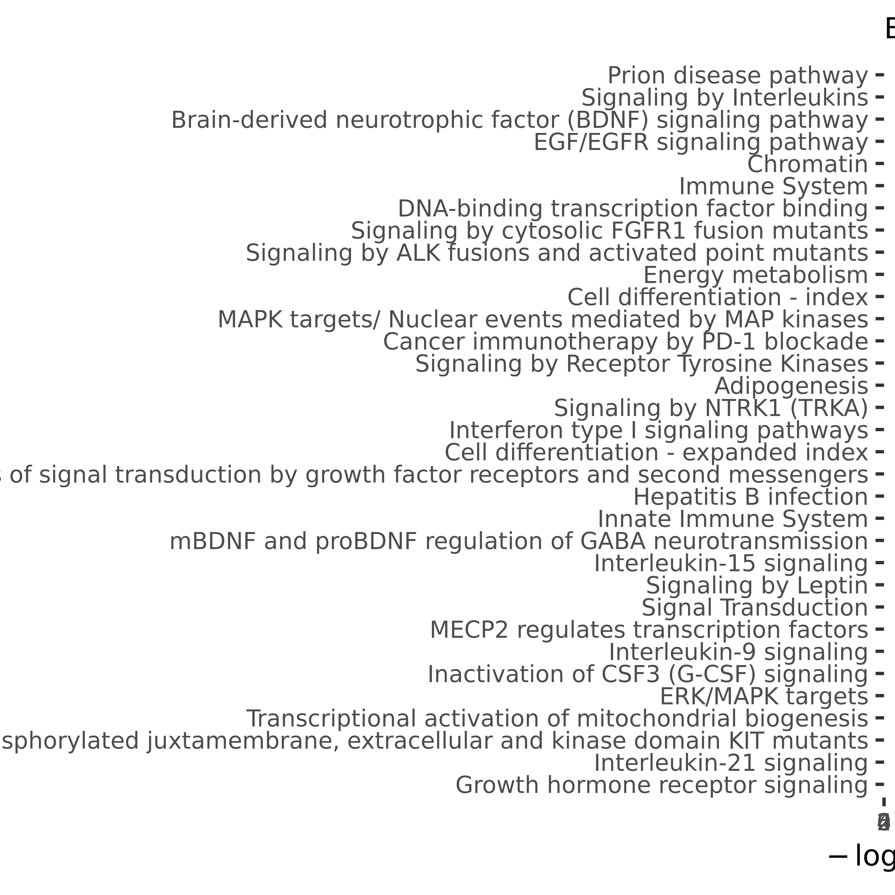
$`Bone marrow`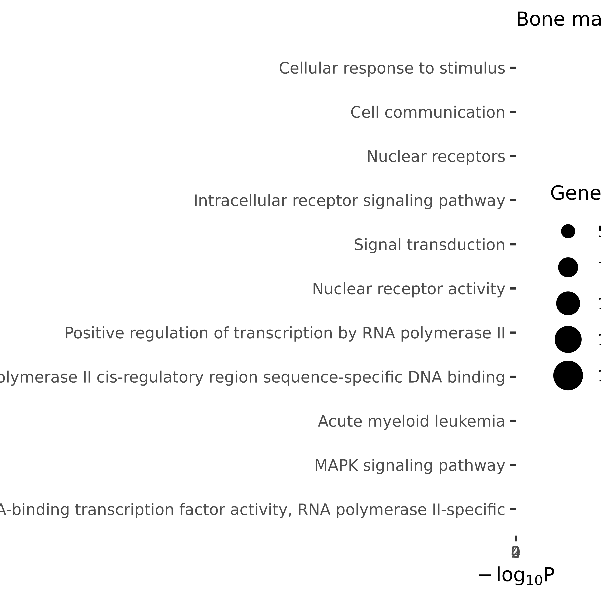
$Colon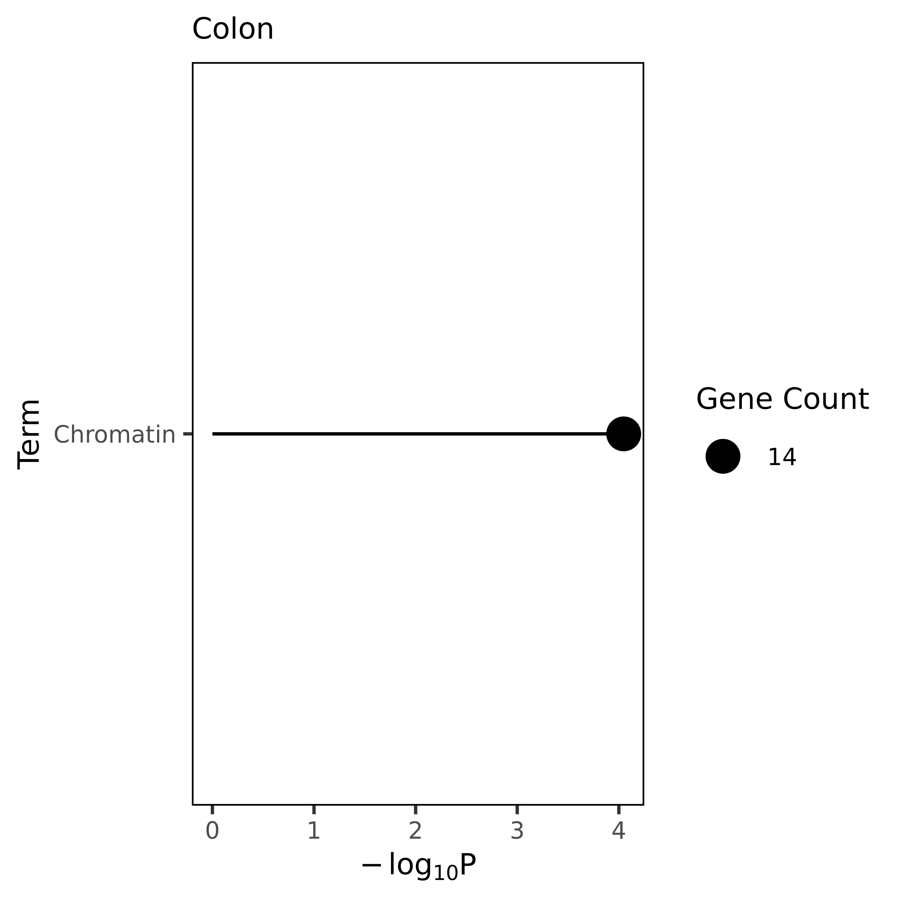
$`Hormone receptors`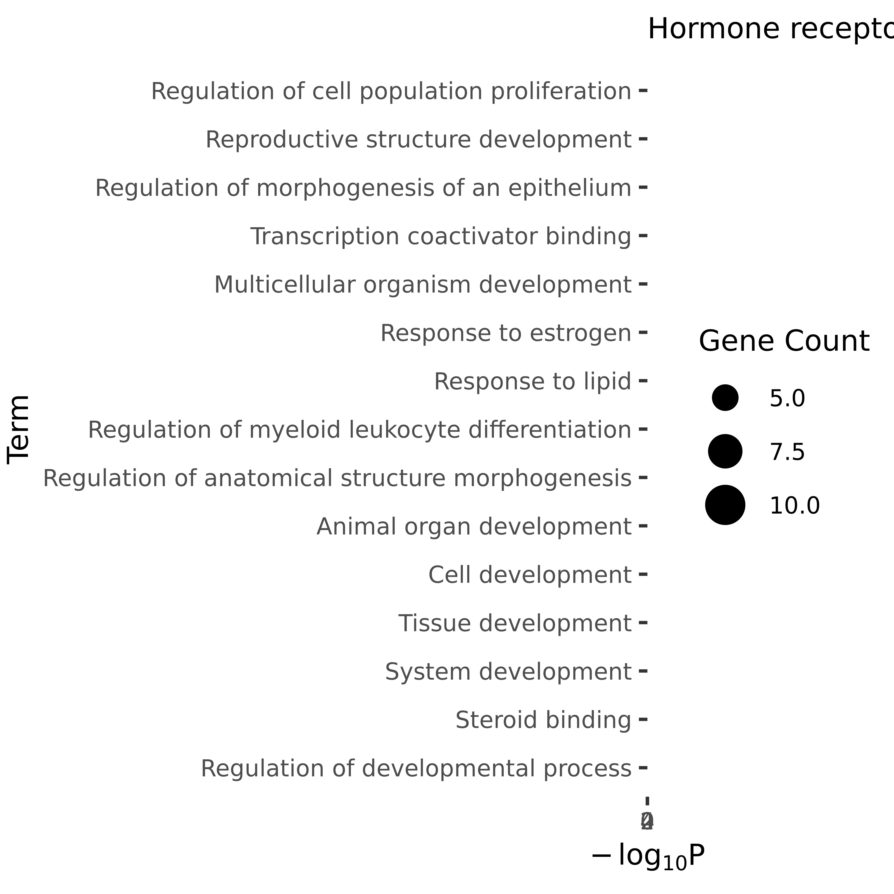
$`Program 1`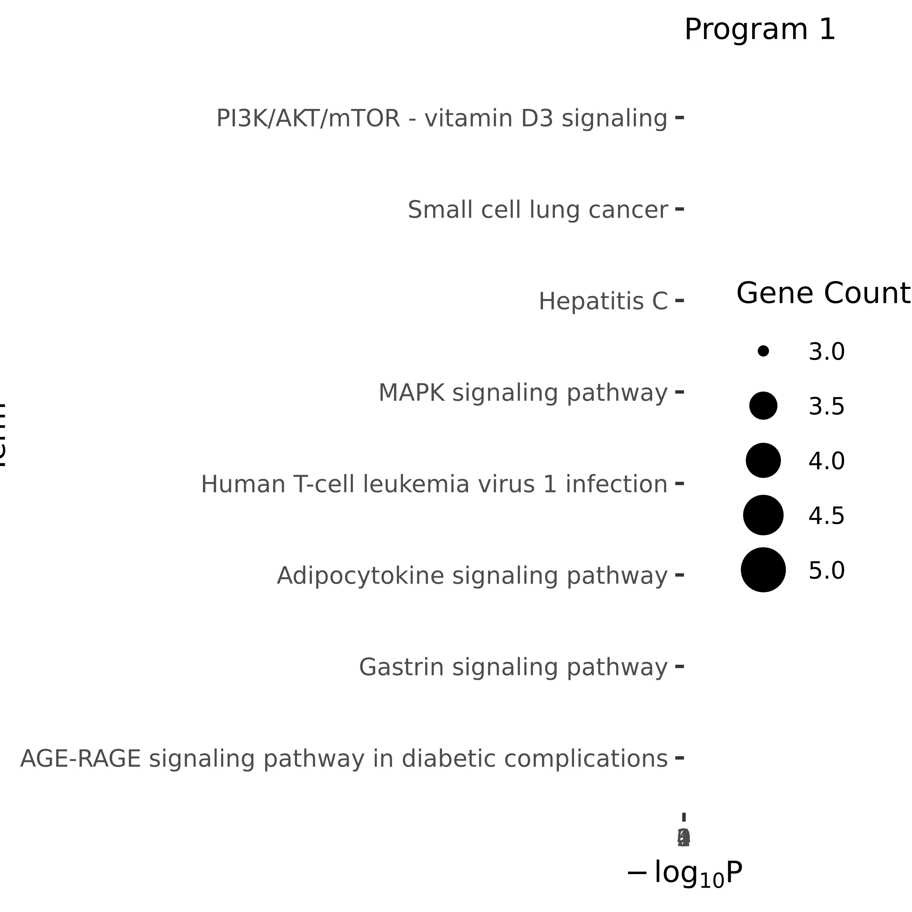
$`Program 2`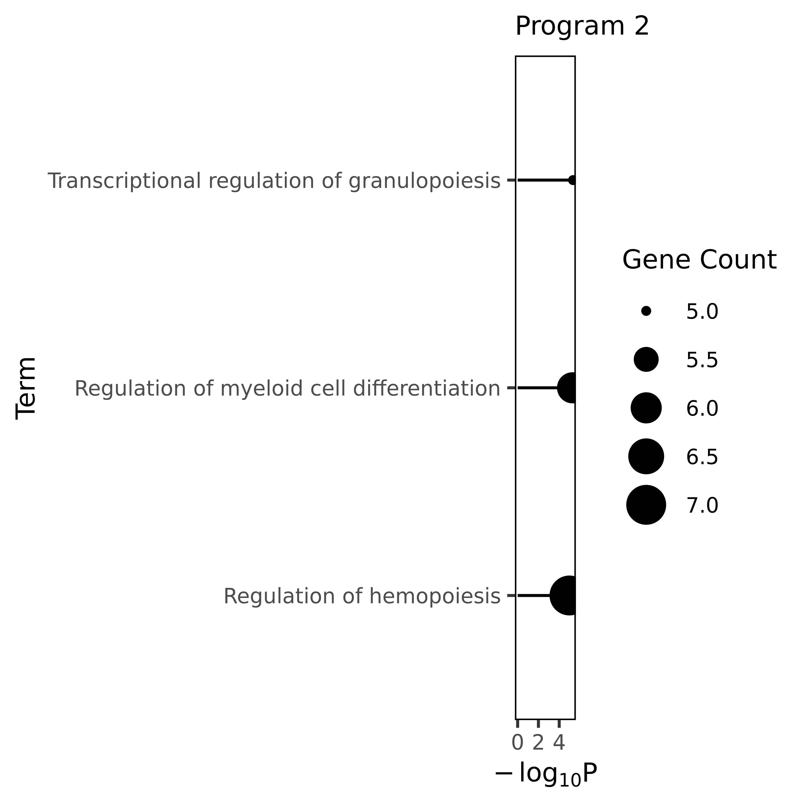
ggsave(glue("{figures_directory}/SF7.enrichment_analysis_on_PROGRAM1.png"), enrichment_plots[['Program 1']], width = 5000, height = 2200, dpi = 800, units = 'px')
ggsave(glue("{figures_directory}/SF7.enrichment_analysis_on_PROGRAM2.png"), enrichment_plots[['Program 2']], width = 5000, height = 1500, dpi = 800, units = 'px')
ggsave(glue("{figures_directory}/SF7.enrichment_analysis_on_HORMONERECEPTORS.png"), enrichment_plots[['Hormone receptors']], width = 5000, height = 3500, dpi = 800, units = 'px')
# ggsave(glue("{figures_directory}/enrichment_analysis_on_HORMONERECEPTORS.png"), enrichment_plots[['Hormone receptors']], width = 20000, height = 20000, dpi = 800, units = 'px')
ggsave(glue("{figures_directory}/SF7.enrichment_analysis_on_BLOOD.png"), enrichment_plots[['Blood']], width = 8000, height = 5200, dpi = 800, units = 'px')
ggsave(glue("{figures_directory}/SF7.enrichment_analysis_on_BONEMARROW.png"), enrichment_plots[['Bone marrow']], width = 6000, height = 2500, dpi = 800, units = 'px')
ggsave(glue("{figures_directory}/SF7.enrichment_analysis_on_COLON.png"), enrichment_plots[['Colon']], width = 5000, height = 1000, dpi = 800, units = 'px')All figures
# ALL_FIGURES <- ALL_FIGURES[gtools::mixedsort(names(ALL_FIGURES))]
print(names(ALL_FIGURES))[1] "Figure 5"# library(gridExtra)
# # patchwork::wrap_plots(ALL_FIGURES, nrow = length(ALL_FIGURES))
# plots <- gridExtra::marrangeGrob(ALL_FIGURES, nrow = length(ALL_FIGURES), ncol = 1)
# plots
#save to multi pdf
# ALL_FIGURES <- lapply(ALL_FIGURES, ggplot2::ggplotGrob)
# pdf("/beagle3/haky/users/temi/projects/Enpact/figures/ALL_FIGURES.pdf", onefile = TRUE)
# for (i in seq(length(ALL_FIGURES))) {
# do.call("grid.arrange", ALL_FIGURES[i])
# }
# dev.off()
# ggplot2::ggsave(plot = patchwork::wrap_plots(ALL_FIGURES, ncol=1),
# filename = "/beagle3/haky/users/temi/projects/Enpact/figures/ALL_FIGURES.pdf",
# device = "pdf",
# units = 'px',
# width = 1000,
# height = 10000,)# b1 + b4 + plot_layout(ncol = 3) plot_layout(ncol = 3,
# widths = c(1, 1, 0.5), heights = c(1,1))Extra supplementary tables
Number of ChIP-seq experiments per TF/tissue pair
experiments_threshold_pass <- data.table::fread(file.path(metadata_directory, "human_factor_full_QC.txt")) %>%
dplyr::filter(Tissue_type != 'None', !is.na(PeaksUnionDHSRatio), FRiP > 0.01) %>%
dplyr::filter(!grepl('-', Factor, fixed = T)) %>%
dplyr::mutate(fake_types = gsub(' ', '', Tissue_type)) %>%
dplyr::filter(!fake_types %in% weird_tissues) %>%
dplyr::select(-fake_types)SUPPLEMENTARY_TABLES[[length(SUPPLEMENTARY_TABLES) + 1]] <- experiments_threshold_pass n_exp_per_tf_tissue <- experiments_threshold_pass %>%
dplyr::group_by(Factor, Tissue_type) %>%
dplyr::summarize(n_experiments = n(), .groups = 'drop') %>%
dplyr::arrange(desc(n_experiments))# SUPPLEMENTARY_TABLES[['Supplementary Table 17']] <- n_exp_per_tf_tissueBaca individuals peaks data
dir <- '/project2/haky/Data/CWAS/bed'
idnames <- vector('character', length = 0)
dtlist <- list.files(dir, pattern = "*.bed", full.names = T) %>%
purrr::map(., .f = function(x){
dt <- data.table::fread(x, header = F)
idname <- x %>% basename() %>% str_remove('.bed')
idnames <<- c(idnames, idname)
return(dim(dt))
})sapply(dtlist, getElement, 1) |> mean()[1] 12007sapply(dtlist, getElement, 1) |> hist(xlab = 'Number of peaks per individual', main = '')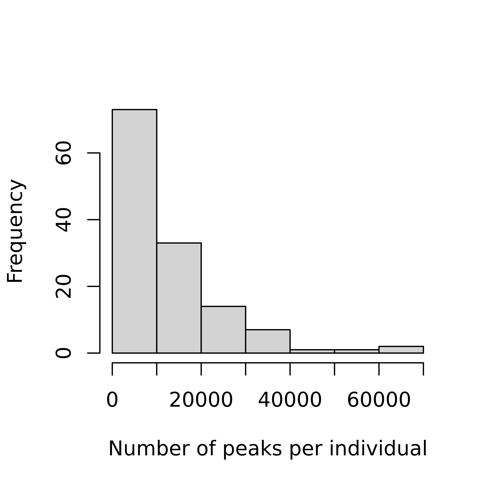
ind_peaks <- data.table::data.table(id = idnames, num_peaks = sapply(dtlist, getElement, 1))
ind_peaks |> head() id num_peaks
<char> <int>
1: AR_PDX_136.rep1_sorted_peaks.narrowPeak 7357
2: AR_PDX_141.rep1_sorted_peaks.narrowPeak 10071
3: AR_PDX_167.rep1_sorted_peaks.narrowPeak 28433
4: AR_PDX_170_2.rep1_sorted_peaks.narrowPeak 33283
5: AR_PDX_170_3.rep1_sorted_peaks.narrowPeak 24362
6: AR_PDX_189_3.rep1_sorted_peaks.narrowPeak 60039# SUPPLEMENTARY_TABLES[['Supplementary Table 18']] <- ind_peaksSoftware used in this study and their versions
software_versions <- sessioninfo::session_info()
software_versions <- software_versions$packages |> as.data.table() %>%
dplyr::select(-c(path, loadedpath, md5ok, library))
SUPPLEMENTARY_TABLES[[length(SUPPLEMENTARY_TABLES) + 1]] <- software_versionsSUPPLEMENTARY TABLES
library(openxlsx)sheet_headers <- c(
"Annotations of Enformer epigenomic features",
"Enpact weights of epigenomic features for predicting the 692 TF/tissue pairs",
"Performance measures, train-test splits, number of experiments used, and other relevant metadata for each TF/tissue pair in Enpact",
"AR-Prostate feature ablation performance",
"A list of established pioneer factors from Mayran and Drouin, 2018 (doi: 10.1074/jbc.R117.001232)",
"Correlation test of predicted AR-Prostate binding scores with observed peak intensities for Baca' CWAS individuals. Both Enpact and CWAS predictors were tested",
"Correlation test of Enpact's prediction and CWAS's prediction of AR binding in prostate tissues",
"Results of association of AR binding in prostate tissues with Prostate cancer risk",
"Z-scores and P-values of androgen receptor binding sites (ARBS) identified by Enpact and CWAS",
"Over-representation analysis of genes near 44 TFXcan distinctly-identified ARBS",
"TFXcan results of association of the binding of 700 TF-tissue pairs with Prostate cancer risk",
"Contribution of TF-tissue pair to consensus programs",
"Effect of GWAS SNPs on consensus programs",
"Over-representation analysis of genes near top 15 TFs for each TFXcan PrCa program",
"Summary information of TFs, tissues, and experiments from the Cistrome Database used to train TF/tissue predictors",
"R packages used in this analysis and their versions"
)if(length(sheet_headers) == length(SUPPLEMENTARY_TABLES)){
names(SUPPLEMENTARY_TABLES) <- sheet_headers
} else {
print("ERROR - NAMES DON'T MATCH SUPPLEMENTARY TABLES")
names(SUPPLEMENTARY_TABLES) <- glue::glue("Suppl. Table {1:length(SUPPLEMENTARY_TABLES)}")
}
# names(SUPPLEMENTARY_TABLES) <- glue::glue("Suppl. Table {1:length(SUPPLEMENTARY_TABLES)}")
# # use gtools
# SUPPLEMENTARY_TABLES <- SUPPLEMENTARY_TABLES[gtools::mixedsort(names(SUPPLEMENTARY_TABLES))]
# names(SUPPLEMENTARY_TABLES)lapply(SUPPLEMENTARY_TABLES, dim)$`Annotations of Enformer epigenomic features`
[1] 5313 10
$`Enpact weights of epigenomic features for predicting the 692 TF/tissue pairs`
[1] 5314 701
$`Performance measures, train-test splits, number of experiments used, and other relevant metadata for each TF/tissue pair in Enpact`
[1] 1400 16
$`AR-Prostate feature ablation performance`
[1] 4 3
$`A list of established pioneer factors from Mayran and Drouin, 2018 (doi: 10.1074/jbc.R117.001232)`
[1] 40 1
$`Correlation test of predicted AR-Prostate binding scores with observed peak intensities for Baca' CWAS individuals. Both Enpact and CWAS predictors were tested`
[1] 18634 5
$`Correlation test of Enpact's prediction and CWAS's prediction of AR binding in prostate tissues`
[1] 18634 5
$`Results of association of AR binding in prostate tissues with Prostate cancer risk`
[1] 18612 11
$`Z-scores and P-values of androgen receptor binding sites (ARBS) identified by Enpact and CWAS`
[1] 192 5
$`Over-representation analysis of genes near 44 TFXcan distinctly-identified ARBS`
[1] 31 16
$`TFXcan results of association of the binding of 700 TF-tissue pairs with Prostate cancer risk`
[1] 97948 11
$`Contribution of TF-tissue pair to consensus programs`
[1] 700 10
$`Effect of GWAS SNPs on consensus programs`
[1] 140 10
$`Over-representation analysis of genes near top 15 TFs for each TFXcan PrCa program`
[1] 73 12
$`Summary information of TFs, tissues, and experiments from the Cistrome Database used to train TF/tissue predictors`
[1] 6088 13
$`R packages used in this analysis and their versions`
[1] 170 7dt_readme <- data.table::data.table(information = sheet_headers) %>%
dplyr::mutate(table = paste('Table S', 1:nrow(.), sep = '')) %>%
dplyr::relocate(table, information)usestyle <- createStyle('Helvetica', 7)
wb <- createWorkbook()
addWorksheet(wb, sheetName = "README")
writeData(wb, sheet = 'README', x = "This file contains tables reported in the TFXcan paper.\nBelow are the list of these tables and what data/information/results they contain.", startCol = 1, startRow = 1)
writeDataTable(wb, sheet = "README", x = dt_readme, rowNames = F, colNames = T, startCol = 1, startRow = 3, withFilter = FALSE)
#write out tables
for (i in seq_along(SUPPLEMENTARY_TABLES)) {
shname <- paste0('Table S', i)
headname <- as.character(glue::glue("{shname}: {names(SUPPLEMENTARY_TABLES)[i]}"))
print(headname)
addWorksheet(wb, sheetName = shname)
writeData(wb, sheet = shname, x = headname, startRow = 1, startCol = 1)
writeDataTable(wb, shname, x = SUPPLEMENTARY_TABLES[[i]], startRow = 2, startCol = 1, withFilter = FALSE)
}[1] "Table S1: Annotations of Enformer epigenomic features"
[1] "Table S2: Enpact weights of epigenomic features for predicting the 692 TF/tissue pairs"
[1] "Table S3: Performance measures, train-test splits, number of experiments used, and other relevant metadata for each TF/tissue pair in Enpact"
[1] "Table S4: AR-Prostate feature ablation performance"
[1] "Table S5: A list of established pioneer factors from Mayran and Drouin, 2018 (doi: 10.1074/jbc.R117.001232)"
[1] "Table S6: Correlation test of predicted AR-Prostate binding scores with observed peak intensities for Baca' CWAS individuals. Both Enpact and CWAS predictors were tested"
[1] "Table S7: Correlation test of Enpact's prediction and CWAS's prediction of AR binding in prostate tissues"
[1] "Table S8: Results of association of AR binding in prostate tissues with Prostate cancer risk"
[1] "Table S9: Z-scores and P-values of androgen receptor binding sites (ARBS) identified by Enpact and CWAS"
[1] "Table S10: Over-representation analysis of genes near 44 TFXcan distinctly-identified ARBS"
[1] "Table S11: TFXcan results of association of the binding of 700 TF-tissue pairs with Prostate cancer risk"
[1] "Table S12: Contribution of TF-tissue pair to consensus programs"
[1] "Table S13: Effect of GWAS SNPs on consensus programs"
[1] "Table S14: Over-representation analysis of genes near top 15 TFs for each TFXcan PrCa program"
[1] "Table S15: Summary information of TFs, tissues, and experiments from the Cistrome Database used to train TF/tissue predictors"
[1] "Table S16: R packages used in this analysis and their versions"# Save workbook
openxlsx::saveWorkbook(wb, file.path(files_directory, 'enpact-paper.supplementary_tables.xlsx'), overwrite = TRUE)knitr::knit_exit()